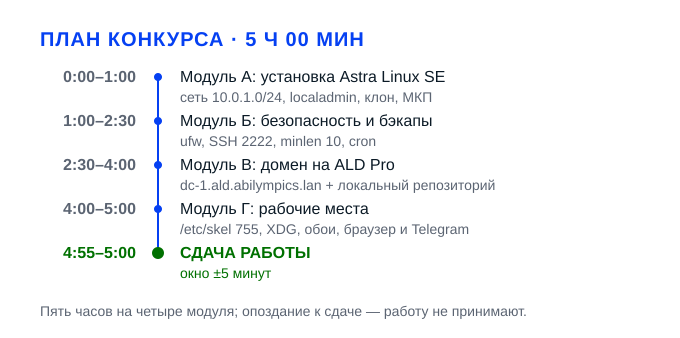
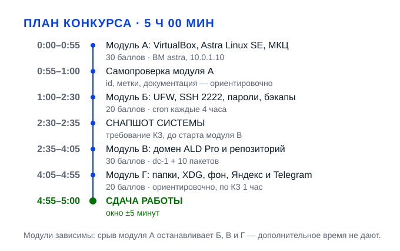

Администрирование Астра Линукс (Р)
Задания ниже — официальные файлы «Абилимпикс» (источник: abilympics-russia.ru), разложенные по категориям. Решения написаны по тексту задания, регламенту и критериям оценки; в них указано, что именно проверяет эксперт.
Школьник
14–16 лет, базовый уровень заданияВыдержка из официального конкурсного задания: страницы, относящиеся к категории «Школьник» (стр. 5–8 источника).
Пошаговое решение
Задание для школьников — ровно 4 часа и три модуля, которые держатся друг за друга: сначала вы поднимаете в VirtualBox виртуальную машину с Astra Linux SE (1 час 30 минут), потом закрываете её межсетевым экраном, меняете порт SSH и ставите резервное копирование по расписанию (ещё 1 час 30 минут), а в конце настраиваете рабочие папки, обои и прикладное ПО (1 час). Всё измеримо: NAT-сеть 10.0.1.0/24, память 4096 МБ, диск VDI на 50 ГБ, учётная запись localadmin с паролем Abilympics_2026, пользователи с UID 2025 и 2026, порт SSH 2222, минимальная длина пароля 10 символов, права 755 на шаблонных папках. Ошибка на любом раннем шаге тянется до конца: нет гостевых дополнений — не работает буфер обмена, не создан /doc — нечего копировать скриптом. Поэтому ниже сорок пять шагов строго по порядку: что делать, зачем это в модуле, как проверить и что обычно ломается.
Задача 1. Установить и настроить Astra Linux SE в VirtualBoxМодуль А · 1 час 30 минут
Модуль А — полтора часа и самая дорогая часть работы: если система не загрузилась или в ней нет нужных пользователей, модули Б и В проверять не на чем. Здесь пять связанных кусков: подготовка NAT-сети и параметров машины, установка ОС с учётной записью localadmin, гостевые дополнения и статическая сеть, два пользователя с фиксированными UID и группа Participant, мандатный доступ к каталогу /doc и файлу /test. Каждый параметр из задания проверяется отдельно, поэтому важно не «примерно 4 ГБ памяти», а ровно 4096 МБ, и не «какой-то IP», а адрес из 10.0.1.0/24 со шлюзом 10.0.1.1.
Действие 1.1. Подготовить NAT-сеть и параметры виртуальной машины
Шаг 1.1.1
Открываем VirtualBox и идём в «Файл» → «Настройки» → раздел «Сеть» → вкладку «NAT-сети». Нажимаем «Добавить»: получаем строку NatNetwork, в поле «Сетевой префикс» вписываем 10.0.1.0/24, галочку «Разрешить DHCP» оставляем включённой, диапазон адресов не трогаем — мастер подставит 10.0.1.3–10.0.1.254. Нажимаем «ОК» и проверяем, что сеть в списке активна, без восклицательного знака.
Без NAT-сети 10.0.1.0/24 виртуальная машина останется без сети вообще, а вся вторая половина задания — статический IP, DNS, SSH на 2222, проверка UFW — делается только по сети. В задании сеть указана первой строкой модуля А, и эксперт смотрит именно префикс: 10.0.1.0/24, а не 10.0.2.0/24, который VirtualBox предлагает по умолчанию.
В списке сетей есть NatNetwork с префиксом 10.0.1.0/24 и включённым DHCP. Проверить просто: сеть не помечена красным, а в свойствах префикс записан именно как 10.0.1.0/24, без пробелов и без маски 255.255.255.0.
Оставить предложенный VirtualBox диапазон 10.0.2.0/24 или вписать адрес шлюза вместо префикса — машина поднимется, но IP из задания 10.0.1.x не пройдёт, и весь сетевой блок модуля А придётся переделывать в спешке.
Эксперт открывает «Файл» → «Настройки» → «Сеть» в первые же минуты и читает префикс вслух. Ему важно увидеть 10.0.1.0/24 именно в строке NatNetwork, а не в свойствах адаптера: если диапазон другой, дальше он не поверит ни одному сетевому пункту модуля А.
Шаг 1.1.2
Жмём «Создать», в мастере пишем имя машины — свою фамилию латиницей, как в примере Ivanov; папку машины не меняем, оставляем по умолчанию. Тип выбираем Linux, версию — Debian (64-bit). Ползунком памяти ставим ровно 4096 МБ: в поле должно быть 4096, а не 4 ГБ «на глаз», потому что VirtualBox позволяет вписать любое число. Процессор оставляем один, как предлагает мастер, и идём дальше.
Имя машины и объём памяти — это два первых проверяемых параметра модуля А, они видны в списке машин без запуска системы. 4096 МБ нужны не для красоты: при 1024 МБ графический установщик Astra Linux SE падает по памяти, и участник теряет 20–30 минут на повторную установку.
В списке виртуальных машин слева видна ваша фамилия, а в правой панели — «Система: 4096 МБ ОЗУ, 1 CPU». Тип указан Linux, версия Debian (64-bit), папка — стандартная, в профиле пользователя. Папка машины указана стандартная, без ручных путей с рабочего стола и без внешнего диска.
Оставить память 1024 МБ по умолчанию — установщик зависает на этапе копирования пакетов. Вторая ошибка — назвать машину astra вместо фамилии: имя проверяется отдельно от имени хоста, и это два разных пункта.
Эксперт смотрит список машин в левом окне VirtualBox, не запуская систему: имя, объём памяти и тип ОС видны в правой панели. Он сверяет 4096 МБ с заданием по цифре, а фамилию — с вашим именем в протоколе, и делает это до старта установки.
Шаг 1.1.3
На экране создания диска выбираем «Создать новый виртуальный жёсткий диск», тип файла VDI (VirtualBox Disk Image), формат хранения — «Динамический виртуальный жёсткий диск». Размер ставим 50 ГБ, путь оставляем по умолчанию, имя файла совпадает с именем машины. Ползунок в мастере двигаем до значения 50,00 ГБ и проверяем цифру в поле, а не на глаз по шкале.
Тип VDI и динамический формат — требования задания: динамический диск занимает место по факту, поэтому 50 ГБ не съедят весь диск ноутбука сразу. 50 ГБ хватает и на систему, и на резервные копии в /backup, которые вы создадите в модуле Б: копия /etc и каталога doc весит десятки мегабайт, но запас нужен.
В свойствах машины «Носители» виден диск с расширением .vdi, размером 50,00 ГБ, форматом «Динамически выделенный». На физическом диске файл занимает несколько мегабайт, а не 50 ГБ — это признак, что формат действительно динамический.
Выбрать VHD или фиксированный размер — параметр не соответствует заданию, и балл за создание диска теряется. Фиксированный диск на 50 ГБ ещё и создаётся несколько минут, которые уходят из модуля. Третья ошибка — указать 50 МБ вместо 50 ГБ: система просто не установится.
В «Носителях» эксперт проверяет три признака сразу: расширение .vdi, пометку «Динамически выделенный» и размер 50,00 ГБ. Ему не нужно открывать свойства файла на хосте — всё это есть в одном окне, и он смотрит именно туда.
Шаг 1.1.4
Открываем «Настройки» машины → «Носители»: у контроллера IDE нажимаем на пустой привод, справа выбираем образ Astra Linux SE (файл .iso) и подтверждаем. Затем идём в «Сеть» → «Адаптер 1», ставим галочку «Включить сетевой адаптер», тип подключения — «Сеть NAT», имя — NatNetwork из шага 1.1.1. В «Системе» проверяем порядок загрузки: оптический привод выше жёсткого диска.
Без подключённого ISO машина просто не начнёт установку, а без адаптера в NAT-сети после установки не будет ни адреса из 10.0.1.0/24, ни доступа к репозиторию для обновления. Порядок загрузки важен иначе: машина попытается грузиться с пустого диска и выдаст чёрный экран с сообщением No bootable medium.
В «Носителях» в приводе стоит имя файла .iso, в «Сети» выбран тип «Сеть NAT» и имя NatNetwork. При старте машины появляется меню установщика Astra Linux, а не сообщение об отсутствии загрузочного устройства.
Оставить тип подключения NAT (одиночный, не «Сеть NAT») — IP будет 10.0.2.15, и статический адрес из 10.0.1.0/24 не заработает: это разные механизмы с похожими названиями. Ещё одна — забыть включить адаптер: машина грузится, но сети нет вообще.
Перед стартом машины эксперт проверяет связку «Носители + Сеть»: ISO в приводе и тип подключения «Сеть NAT» с именем NatNetwork. Именно здесь участники путают одиночный NAT с NAT-сетью, и эксперт это видит за пять секунд.
Действие 1.2. Установить систему и создать учётную запись localadmin
Шаг 1.2.1
Запускаем машину и в меню установщика выбираем графическую установку Astra Linux SE. Язык — русский, раскладка — русская и английская, дальше указываем часовой пояс (для Башкортостана это Asia/Yekaterinburg, UTC+5) и ждём, пока установщик загрузит компоненты. На вопрос о режиме защищённости оставляем предложенный вариант, не переключая его вручную.
Графический установщик даёт видеть разметку и итоговые параметры, а текстовый режим для школьной категории только добавляет риск опечатки. Часовой пояс влияет на время в заданиях cron из модуля Б: при неверном поясе резервная копия «в 2:00» будет запускаться не тогда, когда вы ждёте.
Появился экран приветствия с выбором языка, а после него — шаги установки с прогрессом. Если экран чёрный и есть только приглашение boot:, значит, ISO не подключён или сбит порядок загрузки. Если установщик показывает английский текст, значит, язык не применился, и вернуться к выбору можно стрелкой «Назад».
Выбрать автоматическую установку «по умолчанию» и проскочить выбор часового пояса — потом время в логах cron не совпадёт с реальным, и проверка расписания станет бессмысленной. Спешка на выборе языка приводит к английскому интерфейсу, в котором легко нажать не ту кнопку.
Эксперт наблюдает за установкой со стороны и отмечает, сколько времени ушло до первого экрана и не пришлось ли начинать заново. Выбор часового пояса он тоже смотрит: по нему потом проверяется время в заданиях cron из модуля Б.
Шаг 1.2.2
На шаге разметки выбираем «Гид — использовать весь диск» и подтверждаем схему, которую предложит мастер: корневой раздел / на ext4 и раздел подкачки. Ничего не разбиваем вручную и не включаем LVM — лишние решения здесь только добавляют риск. В окне подтверждения читаем список разделов и нажимаем «Далее», соглашаясь на запись изменений на диск. Разметку читаем до нажатия «Далее»: после подтверждения изменить её без переустановки не получится.
Задание требует установки «с параметрами по умолчанию», поэтому ручная разметка не даёт баллов, но легко приводит к незагружаемой системе. Стандартная схема с ext4 и swap проверена установщиком Astra и гарантированно поднимается в VirtualBox на диске 50 ГБ.
В итоговой таблице два раздела: / на ext4 размером около 46 ГБ и swap примерно 4 ГБ, флаг загрузки стоит на диске. После подтверждения начинается копирование файлов с полосой прогресса. Свободное место на разделе / должно быть около 46 ГБ: если меньше, разметка ушла в ручной режим.
Разметить диск вручную и забыть флаг bootable — установка пройдёт до конца, а после перезагрузки машина не найдёт загрузчик. Восстановление займёт ещё 20 минут установки. Ручная разметка без swap даёт предупреждения при работе и мешает установке пакетов.
Эксперт смотрит итоговую таблицу разделов до подтверждения записи на диск. Ему достаточно увидеть / на ext4 и swap: дополнительные разделы не требуются, а вот отсутствие загрузочного флага он отметит сразу, не дожидаясь перезагрузки.
Шаг 1.2.3
На шаге учётных записей вписываем имя компьютера astra, полное имя можно оставить пустым, имя пользователя — localadmin, пароль — Abilympics_2026 дважды. Галочку «Входить в систему автоматически» снимаем, чтобы вход был по паролю. Домен не указываем, оставляем поле пустым, и завершаем установку, дождавшись сообщения об успехе. Поле «Домен» оставляем пустым: в школьной категории домена нет, и любое значение здесь только запутает вход.
Имя хоста astra, логин localadmin и пароль Abilympics_2026 — три обязательных параметра модуля А, по ним потом заходят эксперты при проверке. localadmin в Astra Linux SE получает права sudo, поэтому через него выполняются все административные команды модулей Б и В.
После перезагрузки в окне входа видно имя astra и пользователя localadmin. Заходим под Abilympics_2026, открываем терминал и проверяем: hostname выдаёт astra, whoami — localadmin, sudo -v пароль принимает без ошибки.
Опечататься в пароле при двойном вводе и не заметить — войти не получится, придётся грузиться в однопользовательском режиме и сбрасывать пароль, теряя 15–20 минут. Вторая ошибка — включить автовход: эксперту не показать вход по паролю.
Сразу после установки эксперт просит открыть терминал и выполнить whoami и hostname. Ответы localadmin и astra он сверяет с заданием, а пароль проверяет входом — автовход в зачёт не идёт, потому что тогда проверка учётной записи невозможна.
Шаг 1.2.4
Извлекаем установочный ISO: «Устройства» → «Оптический привод» → «Убрать диск из привода», иначе машина снова начнёт установку. Затем в терминале выполняем sudo apt update и sudo apt full-upgrade -y, дожидаемся окончания и перезагружаемся командой sudo reboot. После перезагрузки сверяем версию ядра: uname -r должна совпадать с тем, что вы видели до обновления, либо быть новее.
Обновление до последней версии — отдельный пункт задания, и без него часть пакетов модуля Б (ufw, libpam-pwquality) может отсутствовать в кэше или ставиться в несовместимой версии. Заодно обновление подтягивает свежие пакеты ядра, от версии которого зависит установка гостевых дополнений в следующем действии.
apt update завершился без строк Err, full-upgrade закончился сообщением «0 upgraded, 0 newly installed» при повторном запуске. Система грузится штатно, в терминале нет сообщений о сломанных пакетах: sudo dpkg --audit молчит.
Обновиться, но не перезагрузиться — новое ядро не загрузится, а linux-headers вы поставите под старое, и VBoxLinuxAdditions не соберётся с ошибкой о несовпадении версий. Обновление без перезагрузки оставляет старое ядро активным, и часть пакетов не встанет.
Эксперт спрашивает, обновлена ли система, и смотрит историю apt. Повторный full-upgrade с ответом «0 upgraded» — лучшее доказательство; на слово он не верит, потому что обновление занимает минуты и его легко пропустить под таймер.
Действие 1.3. Поставить гостевые дополнения и настроить статическую сеть
Шаг 1.3.1
Ставим пакеты, без которых дополнения не соберутся: sudo apt install -y build-essential dkms linux-headers-$(uname -r). Обратите внимание на подстановку $(uname -r): она подставляет точную версию работающего ядра, а не «последнюю доступную». После установки проверяем, что каталог /usr/src/linux-headers- с этой версией существует. Если apt сообщает, что linux-headers уже установлен, значит, заголовки совпадают с ядром, и переходим к следующему шагу.
VBoxLinuxAdditions содержит модули ядра vboxguest и vboxsf, которые компилируются на месте. Без компилятора, dkms и заголовков ядра установщик дополнений выдаст ошибку «Please install the build and header files for your current Linux kernel» — а без дополнений не будет ни буфера обмена, ни общей папки, ни корректного изменения разрешения экрана.
dpkg -l build-essential dkms показывает состояние ii у всех трёх пакетов, а ls /usr/src | grep $(uname -r) выводит каталог заголовков. Если grep ничего не нашёл, заголовки не соответствуют работающему ядру.
Поставить linux-headers-generic вместо точной версии — после обновления ядра модуль не соберётся. Вторая ошибка — пропустить dkms и потерять модули после следующего обновления ядра. Установка заголовков «последней версии» при старом ядре даёт ту же ошибку сборки.
Эксперт сверяет uname -r с каталогом в /usr/src: версии должны совпадать. Это его главный тест на подготовку к гостевым дополнениям, и он сразу объясняет, почему у части участников VBoxLinuxAdditions падает с ошибкой о заголовках.
Шаг 1.3.2
В меню машины выбираем «Устройства» → «Подключить диск с дополнениями гостевой ОС», затем в терминале монтируем: sudo mount /dev/sr0 /mnt. Запускаем установщик из смонтированного каталога: sudo sh /mnt/VBoxLinuxAdditions.run, дожидаемся строки «successfully installed» и перезагружаемся. Если /dev/sr0 занят, смотрим имя привода в выводе lsblk и монтируем его.
Дополнения дают три вещи, которые проверяются в задании: двусторонний буфер обмена, общие папки и адаптацию разрешения экрана. Ещё они включают модуль vboxvideo, без которого окно гостевой системы остаётся маленьким и работать с меню и терминалом неудобно.
После перезагрузки lsmod | grep vbox показывает vboxguest, vboxsf и vboxvideo одновременно. Три строки в выводе — признак того, что модули загружены, а не просто скопированы на диск. Если vboxsf отсутствует, дополнения встали частично — перезапускаем установщик из смонтированного привода.
Запускать ./VBoxLinuxAdditions.run без sh или без sudo — скрипт не выполнится или упадёт на середине, оставив половину модулей. Вторая ошибка — монтировать ISO в /media вместо /mnt и потом искать файл не там.
Эксперт проверяет lsmod и обязательный вопрос — перезагружалась ли машина. Модули vboxguest, vboxsf и vboxvideo видны только после перезагрузки, и он смотрит на все три, а не на факт «установка прошла успешно».
Шаг 1.3.3
В настройках выключенной машины идём в «Общие» → «Дополнительно» и в поле «Общий буфер обмена» выбираем «Двунаправленный», затем «ОК». После запуска системы дублируем это в меню «Устройства» → «Общий буфер обмена» → «Двунаправленный». Проверяем в обе стороны: копируем строку в хосте и вставляем в терминале гостя, потом наоборот. Настройка в меню «Устройства» действует до перезапуска машины, а галочка в свойствах — постоянно, поэтому выставляем обе.
Двусторонний буфер обмена прямо назван в задании, и он экономит время всем остальным модулям: конфиги, длинные команды и текст Readme удобнее собирать в хосте и вставлять в терминал, чем печатать вручную под таймер. Односторонний режим проверку не пройдёт: текст будет ходить только в одну сторону.
Строка, скопированная в блокноте хоста, вставляется в терминал гостя по Ctrl+Shift+V, а текст из гостя вставляется в хосте по Ctrl+V. Обе операции работают без перезапуска машины. Длинный текст копируем целиком: он должен вставиться без обрыва на первой строке.
Выбрать режим «Только из гостя» и считать, что всё в порядке: задание требует двустороннего, и эксперт проверяет именно оба направления. Проверка только в одну сторону скрывает проблему: обратное направление чаще всего и не работает.
Эксперт просит скопировать строку в одну сторону и в другую, причём сам выбирает текст, чтобы исключить заранее подготовленный буфер. Проверка занимает секунды, и по ней сразу видно, двусторонний режим включён или односторонний.
Шаг 1.3.4
Смотрим имя подключения: nmcli connection show, обычно это «Проводное соединение 1». Переводим его в ручной режим одной строкой: sudo nmcli connection modify "Проводное соединение 1" ipv4.method manual ipv4.addresses 10.0.1.10/24 ipv4.gateway 10.0.1.1, затем поднимаем: sudo nmcli connection up "Проводное соединение 1". Адрес берём свободный в сети 10.0.1.0/24, шлюз — 10.0.1.1, это адрес NAT-сети в VirtualBox.
Статический адрес из сети задания — отдельный пункт модуля А, и без него SSH на порту 2222 из модуля Б некуда подключать. Шлюз 10.0.1.1 обязателен: именно он раздаёт выход в интернет через NAT, а без него apt не сможет скачать Яндекс.Браузер и Telegram в модуле В.
ip -4 addr show показывает inet 10.0.1.10/24 на интерфейсе enp0s3, ip route — default via 10.0.1.1. Проверка связи: ping -c 2 10.0.1.1 отвечает, ping -c 2 8.8.8.8 тоже, если DNS ещё не настроен — по IP.
Опечататься в маске (/32 вместо /24) — адрес встанет, но шлюз окажется вне подсети, и вы получите «сеть недоступна» при работающем адаптере. Вторая ошибка — взять 10.0.1.1, адрес шлюза, и получить конфликт.
Эксперт смотрит вывод ip a и ip r: адрес 10.0.1.10/24, шлюз 10.0.1.1 и маршрут по умолчанию должны читаться вместе. Отдельно он проверяет, что адрес не совпадает с адресом шлюза NAT-сети, — это частая ошибка на глаз.
Шаг 1.3.5
Добавляем DNS в то же подключение: sudo nmcli connection modify "Проводное соединение 1" ipv4.dns "10.0.1.1 77.88.8.8" ipv4.ignore-auto-dns yes, поднимаем соединение заново. Затем проверяем /etc/resolv.conf: он должен содержать обе строки nameserver, причём файл собирается службой автоматически, руками его не правим. Убеждаемся, что после nmcli connection up содержимое не затёрлось.
Задание требует статические первичный и вторичный DNS и динамическое построение /etc/resolv.conf: то есть адреса задаются в настройках подключения, а файл генерируется службой. Если вписать серверы прямо в resolv.conf, NetworkManager перезапишет файл при следующем поднятии интерфейса, и проверка покажет пустой список.
cat /etc/resolv.conf выдаёт два nameserver: 10.0.1.1 и 77.88.8.8. Проверка разрешения имён: getent hosts ya.ru возвращает адрес, ping -c 2 ya.ru отвечает по имени, а не только по IP. Третий nameserver в файле означал бы, что настройки подключения не применились и файл собран из другого источника.
Править /etc/resolv.conf вручную через nano — файл перезапишется, и после перезагрузки DNS «пропадёт». Вторая ошибка — указать только один сервер: задание требует первичный и вторичный. Указание DNS только в интерфейсе без ignore-auto-dns даёт подмену серверов от DHCP.
Эксперт открывает /etc/resolv.conf, затем просит перезапустить соединение и открывает файл снова. Если оба адреса на месте после перезапуска, значит, они заданы в подключении; если файл опустел — их вписали руками, и пункт не засчитывается.
Действие 1.4. Создать пользователей user1, user2 и группу Participant
Шаг 1.4.1
Создаём первого пользователя одной командой: sudo useradd -u 2025 -m -d /home/user1 -s /bin/bash -g users user1. Затем задаём пароль: echo 'user1:12345678' | sudo chpasswd. Проверяем результат тремя командами: id user1, getent passwd user1 и ls -ld /home/user1 — в выводе должны быть UID 2025, группа users и существующий домашний каталог с владельцем user1.
UID 2025, первичная группа users, пароль 12345678 и каталог /home/user1 — четыре параметра, каждый проверяется отдельно. Ключ -u задаёт UID явно, иначе useradd возьмёт следующий свободный (обычно 1001) и пункт про UID 2025 провалится, хотя пользователь создан.
id user1 выдаёт uid=2025(user1) gid=100(users), а getent passwd user1 — строку с /home/user1 и /bin/bash. Домашний каталог существует, в нём есть скрытые файлы профиля: ls -a /home/user1 показывает .bashrc.
Создать пользователя без -m: каталог /home/user1 не появится, вход будет с приглашением вида «нет домашнего каталога», а папки модуля В создавать будет некуда. Вторая ошибка — забыть -g users и получить первичную группу user1.
Эксперт сверяет вывод id и getent passwd: UID 2025, первичная группа users, домашний каталог /home/user1. Он смотрит именно первичную группу, потому что дополнительная Participant появится позже и не должна подменять собой users.
Шаг 1.4.2
Второй пользователь создаётся той же схемой с другими числами: sudo useradd -u 2026 -m -d /home/user2 -s /bin/bash -g users user2, затем echo 'user2:87654321' | sudo chpasswd. Пароли не перепутать: у user1 восемь знаков 12345678, у user2 — 87654321. Проверяем id user2 и вход: su - user2 -c 'pwd' должен вернуть /home/user2. Ключ -s /bin/bash важен: без него useradd подставит /bin/sh, и привычные команды вроде history работать не будут.
UID 2026 и пароль 87654321 — отдельные проверяемые значения, а вход su - подтверждает, что пароль задан верно и оболочка работает. Путаница паролей между двумя пользователями — самая обидная ошибка: оба аккаунта есть, а проверка входа под нужным логином не проходит.
id user2 показывает uid=2026(user2) gid=100(users), su - user2 -c 'whoami' возвращает user2 без запроса пароля от root. Домашний каталог /home/user2 принадлежит user2:users. Пароль проверяем входом, а не только chpasswd: команда может отработать молча, а хеш остаться пустым.
Скопировать команду для user1 и забыть поменять UID — useradd откажется создавать второго пользователя с занятым UID, и второй аккаунт просто не появится. Копирование пароля от user1 к user2 делает проверку входа бессмысленной.
Эксперт проверяет оба аккаунта подряд, не полагаясь на слова: id, вход под паролем, домашний каталог. Ему важно увидеть, что пароли разные и что user2 действительно входит, а не просто существует в /etc/passwd.
Шаг 1.4.3
Создаём группу: sudo groupadd Participant, затем добавляем в неё user1: sudo usermod -aG Participant user1. Ключ -a обязателен, иначе usermod заменит все дополнительные группы одной. Проверяем тремя способами: getent group Participant, groups user1 и id -nG user1 — во всех трёх должна появиться группа Participant рядом с users. Проверку делаем сразу: если группа создана, но не видна в id, значит, добавление не применилось и команду надо повторить.
Группа Participant и членство в ней user1 — отдельный пункт задания, он же используется дальше при настройке прав на каталог /doc. Без ключа -a пользователь потеряет все прочие дополнительные группы, что в реальной административной практике ломает доступ к sudo и принтерам.
getent group Participant выводит строку Participant:x:1001:user1 — с логином в конце. id -nG user1 показывает «users Participant», то есть группа добавилась, а первичная осталась users. Если Participant стоит первой в списке групп, значит, она стала первичной — пользователя придётся пересоздать.
Выполнить usermod -G Participant user1 без -a — у пользователя останется только эта группа, и он потеряет доступ к sudo. Ошибку замечают уже при проверке мандатного доступа, когда su - user1 не даёт нужных прав.
Эксперт смотрит вывод id -nG user1: группа Participant должна стоять рядом с users как дополнительная. Если в строке осталась только Participant, он делает вывод, что usermod выполнили без -a, и снимает пункт.
Действие 1.5. Настроить мандатный доступ к каталогу doc и файлу test
Шаг 1.5.1
Создаём каталог в корне: sudo mkdir /doc и три непустых файла в нём — например sudo sh -c 'echo "План работ" > /doc/plan.txt', затем так же report.txt и notes.txt. Файл для второго пользователя создаём прямо в корне: sudo sh -c 'echo "test" > /test'. Проверяем: ls -l /doc показывает три файла с ненулевым размером, ls -l /test — один файл. Права на /doc оставляем по умолчанию 755: разграничение здесь задаёт мандатная метка, а обычные права только мешают проверке.
Пустой файл не даёт проверить чтение: при проверке доступа нужно, чтобы содержимое читалось или не читалось, а не открывался нулевой объём. Три файла в /doc и файл /test в корне — ровно то, что перечислено в задании, и дальше на эти объекты ставятся мандатные метки.
ls -l /doc выдаёт три строки с размером больше нуля, cat /doc/plan.txt печатает текст. ls -l /test показывает файл с правами чтения для всех — иначе проверка упрётся в обычные права, а не в мандатные.
Создать пустые файлы через touch — потом невозможно отличить «доступ есть» от «файл пустой». Вторая ошибка — положить /test в /home вместо корня: задание требует корень файловой системы. Файл с правами 600 не прочитает даже user1, и проверка мандатного доступа упрётся в обычные права.
Эксперт открывает /doc и /test и читает содержимое файлов: три непустых файла и один файл в корне — два разных требования задания. Пустой файл он считает незакрытым пунктом, потому что проверка доступа на нём ничего не доказывает.
Шаг 1.5.2
Задаём user1 уровень доступа: sudo pdpl-user -l 2:0 user1, затем помечаем каталог и все файлы: sudo pdpl-file 2:0:0 /doc, sudo pdpl-file 2:0:0 /doc/plan.txt /doc/report.txt /doc/notes.txt. Проверяем метки командой pdpl-file /doc/plan.txt и уровень пользователя командой pdp-id user1 — в обоих случаях должно быть видно уровень 2 с категорией 0. Команды выполняем от root: смена мандатных меток требует привилегий, а у обычного пользователя pdpl-file вернёт отказ.
Мандатное управление доступом (МКЦ) в Astra Linux SE работает поверх обычных прав: даже с правами 777 пользователь не прочитает файл, если его уровень ниже метки файла. Уровень пользователя и метка файла должны совпадать, иначе чтение блокируется — это и есть проверяемый результат.
pdpl-file /doc/plan.txt показывает уровень 2 и категорию 0, pdp-id user1 — тот же уровень. Проверка от лица пользователя: su - user1 -c 'cat /doc/plan.txt' печатает текст без ошибки «Отказано в доступе».
Поставить метку только на каталог, не тронув файлы: новые файлы наследуют метку каталога, но уже созданные — нет, и чтение упадёт. Вторая ошибка — задать уровень 3 файлам и 2 пользователю. Метка только на каталоге без -R оставляет файлы без уровня, и чтение падает на первом же.
Эксперт проверяет метки командой pdpl-file и уровень пользователя через pdp-id, а затем входит под user1 и читает файл. Для него важен результат под пользователем: root читает всё, и проверка от root ничего не показывает.
Шаг 1.5.3
Для user2 настраиваем доступ к файлу /test: sudo pdpl-user -l 1:0 user2 и sudo pdpl-file 1:0:0 /test. Затем проверяем разграничение в обе стороны: su - user2 -c 'cat /test' должен прочитать файл, а su - user2 -c 'cat /doc/plan.txt' — получить отказ. Если отказ не приходит, значит, уровни user1 и user2 совпали и разграничения нет. Уровни берём на единицу ниже, чем у user1: так разграничение видно наглядно и не пересекается с метками /doc.
Смысл МКЦ не в том, чтобы «дать доступ», а в том, чтобы развести пользователей по уровням: user2 работает на уровне 1 и не должен видеть документы уровня 2. Именно эта проверка показывает эксперту, что вы понимаете разницу между обычными правами и мандатными, а не просто скопировали команду.
cat /test под user2 печатает содержимое, cat /doc/plan.txt под user2 даёт «Отказано в доступе», а под user1 — печатает. Три результата подряд и есть доказательство корректной настройки. Ошибка «Operation not permitted» вместо «Отказано в доступе» означала бы, что дело в правах, а не в мандатных метках.
Оставить user2 уровень 0 по умолчанию: тогда файл с меткой 1 ему недоступен, и проверка доступа к /test провалится. Обратная ошибка — дать user2 уровень 2, и он прочитает /doc, что нарушает разграничение.
Эксперт делает два контрольных чтения под user2: /test должен открыться, /doc — нет. Именно отказ на втором файле он считает доказательством разграничения, а не совпавшие команды в истории терминала.
Задача 2. Закрыть систему: SSH на 2222, межсетевой экран и резервное копированиеМодуль Б · 1 час 30 минут
Модуль Б — полтора часа на то, чтобы машина из модуля А стала управляемой и защищённой. Порядок здесь важнее скорости: сначала меняется порт SSH и проверяется вход по нему, только потом включается UFW с разрешающим правилом на 2222, потому что firewall, поднятый до правила, отрезает вас от собственной машины. Дальше идут парольная политика с минимальной длиной 10 символов и два скрипта резервного копирования (/etc и /home/user1/doc), поставленные в cron. Каждый пункт проверяется отдельно: и открытый порт, и статус ufw, и наличие файлов копии.
Действие 2.1. Перевести SSH на порт 2222
Шаг 2.1.1
Сначала страховка: sudo cp /etc/ssh/sshd_config /etc/ssh/sshd_config.bak. Затем открываем файл редактором и находим строку Port 22 — она обычно закомментирована решёткой. Убираем решётку и ставим Port 2222, старую строку не дублируем. Если в конце файла есть Include /etc/ssh/sshd_config.d/*.conf, проверяем эти файлы: порт, заданный там, перекрывает основной конфиг.
Смена порта SSH на 2222 — прямая формулировка задания, и она проверяется подключением, а не содержимым файла. Копия .bak нужна не для красоты: при опечатке в конфиге sshd не запустится, и без резервной копии вы останетесь без удалённого доступа, а через него делается вся дальнейшая проверка.
grep -n '^Port' /etc/ssh/sshd_config выдаёт ровно одну строку Port 2222, без решётки и без пробелов перед Port. Второй Port в файле не встречается: grep -c Port даёт единицу. Второй активный Port в выводе grep — сигнал, что в конфиге остался старый блок и его надо убрать.
Оставить закомментированную строку #Port 22 и дописать Port 2222 ниже — работает, но при проверке конфига легко получить два активных Port и слушающий порт 22 вместо 2222. Опечатка вида Port 22222 уводит на несуществующий порт.
Эксперт открывает sshd_config и проверяет, что активная строка Port одна и равна 2222. Отдельно он смотрит каталог sshd_config.d, потому что порт, заданный во включённом файле, перекрывает основной конфиг и сбивает проверку.
Шаг 2.1.2
Проверяем конфиг до перезапуска: sudo sshd -t. Если команда молчит — синтаксис верный; если ругается на строку и номер, правим именно её. Затем перезапускаем службу: sudo systemctl restart ssh, и смотрим статус: systemctl status ssh должен показать active (running) без жёлтых предупреждений. Не закрывая текущую сессию, сразу проверяем новый порт. Старую сессию не закрываем: она останется страховкой, если новый порт по какой-то причине не откроется.
sshd -t — единственный способ проверить конфиг без риска потерять доступ: служба с битым конфигом просто не поднимется, и восстановить её можно будет только через консоль VirtualBox. Перезапуск нужен потому, что sshd читает конфиг один раз при старте, и до restart новый порт не откроется.
systemctl status ssh показывает active (running) и строку «Server listening on 0.0.0.0 port 2222». ss -tlnp | grep 2222 выдаёт LISTEN, а ss -tlnp | grep ':22 ' — пусто. Если в статусе есть предупреждение о старом конфиге, перезапуск не применился и его нужно повторить.
Перезапустить sshd с ошибкой в конфиге: служба падает, а старая сессия остаётся, создавая ложное чувство, что всё хорошо. После закрытия окна доступ теряется полностью. Ошибка в отступе строки Port внутри блока Match делает настройку недействительной.
Эксперт смотрит systemctl status ssh и ss -tlnp: служба active, порт 2222 в LISTEN, порт 22 свободен. Три признака он проверяет вместе, потому что активная служба на старом порту выглядит как выполненное задание, хотя порт не сменён.
Шаг 2.1.3
Проверяем вход по новому порту, не выходя из текущей сессии: открываем второе окно терминала и подключаемся с хоста командой ssh -p 2222 localadmin@10.0.1.10. Пароль Abilympics_2026, после входа выполняем whoami и hostname. Если подключение не проходит, проверяем, что sshd слушает 2222, и только потом ищем причину в firewall, который на этом шаге ещё выключен.
Смена порта засчитывается только рабочей сессией: эксперту нужно увидеть, что вход по 22 больше не проходит, а по 2222 проходит. Это же подключение понадобится в модуле В, чтобы доказать, что firewall не блокирует административный доступ после включения.
Вход по ssh -p 2222 даёт приглашение localadmin@astra, whoami возвращает localadmin. Попытка ssh localadmin@10.0.1.10 без -p зависает или получает Connection refused — это ожидаемый результат. Отдельно смотрим, что попытка входа по 22 не даёт приглашения ввести пароль.
Проверять только «изнутри» машины через localhost — так тест проходит даже при ошибке в конфиге, потому что localhost обходит часть настроек. Проверять надо с хоста, по адресу 10.0.1.10. Проверка через localhost обманывает: она работает и при ошибке в привязке к адресу.
Эксперт просит подключиться по ssh -p 2222 при нём и сам вводит пароль. Живая сессия — единственное доказательство, которое он принимает: скриншот терминала и вывод ss он считает косвенными и перепроверяет подключением.
Действие 2.2. Включить и настроить межсетевой экран UFW
Шаг 2.2.1
Ставим пакеты: sudo apt install -y ufw openssh-server libpam-pwquality. Если apt сообщает, что libpam-pwquality уже установлен, это нормально — в Astra Linux SE он часто стоит по умолчанию. Проверяем установку: dpkg -l ufw | tail -1 показывает ii, а ufw --version выдаёт номер версии. Службу ufw пока не включаем. Проверку версии делаем до включения: так видно, что установлен именно ufw, а не другой пакет с похожим именем.
UFW в Astra не включён из коробки, а без пакета libpam-pwquality не настроить требование к длине пароля из следующего действия. Ставить оба пакета сразу выгодно: вы один раз обновляете список пакетов, а не дважды, и не теряете минуты на повторный apt update под таймер.
ufw --version печатает версию, systemctl is-active ufw отвечает inactive — это правильно на данном шаге. dpkg -l libpam-pwquality показывает ii, и файл /usr/lib/x86_64-linux-gnu/security/pam_pwquality.so существует.
Включить ufw сразу после установки, не добавив правило для 2222: политика по умолчанию запрещает входящие, и вы теряете SSH-доступ к машине, оставаясь только с консолью VirtualBox. Установка ufw без openssh-server оставляет машину без службы, к которой применяется правило.
Эксперт проверяет наличие ufw и libpam-pwquality и отдельно — не включён ли firewall раньше правила. Он задаёт вопрос о порядке действий: если ufw уже active, а правило добавлено позже, значит, участник рисковал доступом и просто повезло.
Шаг 2.2.2
Задаём политику: sudo ufw default deny incoming и sudo ufw default allow outgoing. Затем добавляем правило до включения: sudo ufw allow 2222/tcp. Проверяем список правил командой sudo ufw show added — в нём должна быть строка ufw allow 2222/tcp. Только после этого включаем: sudo ufw enable и подтверждаем y. Если случайно включили firewall раньше правила, не паникуем: поднимаем консоль VirtualBox и добавляем правило оттуда.
Политика deny incoming закрывает все порты, кроме разрешённых явно, — это и есть «настройка межсетевого экрана» по заданию. Правило для 2222 добавляется до enable именно потому, что UFW применяет правила в момент включения: если включить пустой firewall, текущая SSH-сессия оборвётся, и вернуться можно будет только через консоль виртуальной машины.
sudo ufw status verbose показывает Status: active, Default: deny (incoming), allow (outgoing) и строку 2222/tcp ALLOW IN Anywhere. После включения SSH-сессия на 2222 не рвётся — это главный признак правильного порядка действий.
Включить ufw и потом вспомнить про SSH — соединение обрывается, и участник тратит 10–15 минут на вход через консоль VirtualBox. Вторая ошибка — разрешить 22/tcp вместо 2222: порт открыт, но службы на нём нет.
Эксперт читает ufw status verbose построчно: Status: active, Default: deny (incoming) и правило 2222/tcp ALLOW IN. Ему важны все три строки, потому что активный firewall без правила или с разрешённым 22 задание не закрывает.
Шаг 2.2.3
Доводим до состояния «переживает перезагрузку»: sudo systemctl enable ufw, затем sudo systemctl is-enabled ufw — ответ должен быть enabled. Делаем контрольную перезагрузку sudo reboot и после неё снова проверяем вход по ssh -p 2222 и вывод sudo ufw status. Это финальная проверка всего действия. Перезагрузку делаем сразу после включения, а не в конце модуля: так ошибка обнаруживается, пока есть время её исправить.
Служба, включённая вручную, после перезагрузки не поднимется, и эксперт, который проверяет работу после reboot, увидит неактивный firewall — пункт провалится, хотя всё было настроено. Автозапуск — часть «настроенного» межсетевого экрана, а не отдельное удобство.
systemctl is-enabled ufw отвечает enabled, после перезагрузки ufw status показывает active, а SSH на 2222 подключается. Все три признака сохраняются без ручного вмешательства. Если после reboot статус inactive, значит, служба не включена в автозапуск — повторяем systemctl enable.
Оставить ufw в состоянии disabled при работающем статусе active — до перезагрузки всё выглядит правильно, а после неё firewall выключен. Такая ошибка обнаруживается только на приёмке. Отключённый автозапуск обнаруживается только на приёмке, когда исправить уже нельзя.
Эксперт может попросить перезагрузить машину прямо при проверке. После reboot он снова смотрит ufw status и подключается по 2222: именно так вскрывается отсутствие автозапуска, которое до перезагрузки незаметно.
Действие 2.3. Настроить парольную политику
Шаг 2.3.1
Открываем /etc/security/pwquality.conf и задаём минимальную длину: в строке minlen ставим 10 без решётки, остальные параметры не трогаем. Дополнительно проверяем, что в /etc/pam.d/common-password есть строка с pam_pwquality.so, и при необходимости добавляем в неё minlen=10 retry=3. Сохраняем файл и проверяем синтаксис pam: sudo pam-auth-update --package не должен выдавать ошибок.
Требование задания — минимальная длина пароля 10 символов, и проверяется оно попыткой задать короткий пароль. Настройка в pwquality.conf действует на все программы, которые меняют пароль через PAM: passwd, графическую смену пароля, а также на пользователей, которых вы создадите позже.
grep -v '^#' /etc/security/pwquality.conf | grep minlen выдаёт minlen = 10. В /etc/pam.d/common-password строка pam_pwquality.so присутствует и не закомментирована. Значение читаем без решётки: закомментированная строка minlen выглядит как настройка, но не действует.
Вписать minlen в комментарий или поставить 10 в строку с решёткой — файл выглядит изменённым, а политика не работает. Вторая ошибка — править только pwquality.conf, не убедившись, что модуль подключён в common-password.
Эксперт смотрит два файла: /etc/security/pwquality.conf с minlen = 10 и /etc/pam.d/common-password со строкой pam_pwquality.so. Он знает, что настройка без подключённого модуля PAM не работает, и проверяет именно связку.
Шаг 2.3.2
Проверяем политику в деле: запускаем sudo passwd user2 и вводим короткий пароль из восьми знаков, например 87654321. Система должна отказать с сообщением о минимальной длине 10 символов и попросить другой пароль. После проверки нажимаем Ctrl+C, чтобы не менять действующий пароль: он нужен для проверки доступа к /test. Отказ читаем целиком: система пишет и требуемую длину, и причину, а не просто «неверный пароль».
Проверка «на живом пользователе» — единственное доказательство, что политика применилась: файл может быть настроен, но не подключён к PAM. При этом менять пароли user1 и user2 нельзя: в задании они заданы восьмизначными, и после смены проверка мандатного доступа из модуля А перестанет проходить под этими паролями.
passwd выдаёт «BAD PASSWORD: The password is shorter than 10 characters» и просит ввести новый. Пароль из десяти и более знаков принимается. После Ctrl+C passwd сообщает «passwd: Authentication token manipulation error» — пароль остался прежним.
Сменить пароль user2 на длинный «чтобы прошло» — политика проверена, но пароль из задания потерян, и вход под user2 при демонстрации мандатного доступа не состоится. Проверка под root не считается: политика проверяется на обычном пользователе.
Эксперт просит показать отказ на коротком пароле: это единственный способ увидеть работающую политику, не ломая учётные записи. Он же следит, чтобы после проверки пароли user1 и user2 остались восьмизначными, как в задании.
Действие 2.4. Сделать скрипты резервного копирования и поставить их в cron
Шаг 2.4.1
Создаём каталог для копий: sudo mkdir -p /backup/etc. Пишем скрипт /usr/local/bin/backup_etc.sh из пяти строк: shebang, DST=/backup/etc, mkdir -p "$DST", tar -czf "$DST/etc-$(date +%F_%H-%M).tar.gz" /etc 2>/dev/null и удаление копий старше семи дней через find. Даём права: sudo chmod 750 /usr/local/bin/backup_etc.sh, владелец root:root по умолчанию. Запускаем вручную и смотрим результат.
Копия /etc — первый из двух скриптов, прямо названных в задании: это каталог со всеми конфигами, включая sshd_config и правила UFW, то есть самая ценная часть системы. Имя файла с датой обязательно: без него каждая следующая копия затирает предыдущую, и восстановить состояние на нужный день невозможно.
ls -lh /backup/etc показывает файл вида etc-2026-11-14_10-32.tar.gz размером несколько мегабайт. Проверка целостности: tar -tzf /backup/etc/etc-*.tar.gz | head выдаёт список файлов, начиная с etc/. Проверяем и права: stat -c '%a %U:%G' должен выдать 750 root:root.
Забыть про 2>/dev/null и получить в логе поток предупреждений «file changed as we read it» — не смертельно, но при проверке лога выглядит как сбой. Ошибка серьёзнее — указать путь /etc/ с косой чертой: в архив попадут только файлы, без самого каталога.
Эксперт открывает скрипт, читает его целиком и запускает при вас. Он смотрит на путь архива, дату в имени файла и права 750: скрипт, доступный на запись всем, он считает ошибкой безопасности даже при рабочем копировании.
Шаг 2.4.2
По той же схеме создаём /usr/local/bin/backup_doc.sh для каталога /home/user1/doc: каталог копий /backup/doc, tar -czf с датой в имени, тот же ключ -czf. Права 750, владелец root. Запускаем вручную и проверяем, что внутри архива именно plan.txt, report.txt и notes.txt, а не пустой каталог. Первую строку скрипта пишем как #!/bin/bash: cron запускает файл без оболочки, и без shebang он может не выполниться.
Второй скрипт в задании — копия пользовательских документов, и он проверяет, что вы умеете делать копию не только системного каталога, но и данных пользователя. Смысл разделения в том, что /etc меняется редко и копируется целиком, а doc растёт каждый день, и его копию удобно хранить отдельно от системной.
tar -tzf /backup/doc/doc-*.tar.gz выводит три файла с текстом внутри. Размер архива ненулевой, а владелец файла root: ls -l /backup/doc показывает root root. Пустой список в tar -tzf — признак того, что путь указан неверно и архивировать было нечего.
Скопировать /home/user1 целиком вместо /home/user1/doc — архив тяжелее и не соответствует заданию. Вторая ошибка — запустить скрипт от user1: прав на запись в /backup нет, архив не создастся. Отсутствие shebang даёт ошибку «Exec format error» в журнале cron, и копия не создаётся.
Эксперт проверяет содержимое архива, а не только его существование: tar -tzf должен показать три файла с текстом. Пустой архив он считает типичной ошибкой при неверном пути и пункт не закрывает.
Шаг 2.4.3
Создаём файл расписания: sudo nano /etc/cron.d/backup. Внутри две строки: 0 2 * * * root /usr/local/bin/backup_etc.sh >/dev/null 2>&1 и 30 2 * * * root /usr/local/bin/backup_doc.sh >/dev/null 2>&1. В конце файла обязательно оставляем пустую строку — cron игнорирует последнюю строку без перевода строки. Ставим права: sudo chmod 644 /etc/cron.d/backup, владелец root.
Автоматическое копирование с определённым интервалом — отдельный пункт модуля Б: скрипт, который никто не запускает, баллов не приносит. Файл в /etc/cron.d удобнее crontab -e тем, что в нём явно указан пользователь root и его видно при проверке; копии идут ночью, когда система свободна.
cat /etc/cron.d/backup показывает две строки с путями к скриптам, ls -l даёт -rw-r--r-- root root. Синтаксис проверяется запуском: sudo run-parts --test /etc/cron.d выдаёт имена файлов, а systemctl status cron — active (running).
Поставить имя файла с точкой, например backup.sh, — cron в /etc/cron.d игнорирует такие имена, и задание не выполняется вообще. Вторая ошибка — забыть пользователя root в строке: cron попытается выполнить скрипт от неизвестного пользователя и промолчит.
Эксперт читает /etc/cron.d/backup целиком: имя файла без точки, пользователь root в каждой строке, корректное расписание и перевод строки в конце. Он видел достаточно файлов с именем backup.sh, чтобы проверять это первым делом.
Шаг 2.4.4
Проверяем, что расписание действительно срабатывает: временно меняем интервал на */2 * * * * в обеих строках, ждём четыре минуты, смотрим ls -lh /backup/etc и /backup/doc — должны появиться свежие файлы с новым временем. После проверки возвращаем 0 2 и 30 2. Дополнительно смотрим журнал: sudo grep CRON /var/log/syslog | tail -5 показывает запуск обеих задач.
Проверка реальным запуском отличает работающее расписание от красиво написанного. Временный интервал в две минуты — самый быстрый способ увидеть результат, не ожидая ночи; после проверки расписание возвращается к штатному, иначе копии будут создаваться каждые две минуты и забьют диск.
В /backup/etc появился файл с временем на две минуты позже предыдущего, в syslog есть строки CRON с путями скриптов. После возврата расписания cat /etc/cron.d/backup снова показывает 0 2 и 30 2. В журнале ищем строки с именами скриптов, а не просто CRON: так видно, что запускались именно они.
Оставить тестовый интервал */2 — за час наберётся тридцать архивов, а к вечеру диск кончится. Обратная ошибка — не проверить вообще и узнать о неработающем cron только на приёмке. Забыть вернуть штатное расписание — значит получить сотни архивов и заполненный диск.
Эксперт смотрит время создания файлов в /backup и строки CRON в журнале: совпадение времени с расписанием — доказательство автоматического запуска. Он также проверяет, что тестовый интервал убран и копии не создаются каждые две минуты.
Задача 3. Настроить рабочие папки, оформление и прикладное ПОМодуль В (региональный) · 1 час
Модуль В — час на то, что видит обычный сотрудник: три папки в домашнем каталоге у каждого пользователя, права 755 на шаблон, файл README с обращением к сотруднику, обои с логотипом чемпионата и два приложения — Яндекс.Браузер и Telegram. Здесь легко потерять баллы на мелочах: папка «Общая папка организации» содержит пробелы, и без кавычек в команде вместо одной папки появляются три; права 755 проверяются командой stat, а не на глаз; установка deb-пакета без apt -f install оставляет систему со сломанными зависимостями.
Действие 3.1. Создать папки всем пользователям через шаблон
Шаг 3.1.1
Создаём папки в шаблоне, из которого берутся домашние каталоги новых пользователей: sudo mkdir -p "/etc/skel/Документы" "/etc/skel/Общая папка организации" "/etc/skel/Проекты". Имена с пробелом обязательно в кавычках. Сразу выставляем права: sudo chmod 755 с теми же тремя путями в кавычках. Проверяем: ls -ld /etc/skel/*/ показывает три каталога. Каталог «Документы» в шаблоне может уже существовать — mkdir -p не выдаст ошибку, а chmod просто подтвердит права.
Шаблон /etc/skel — правильная точка создания папок «для всех пользователей»: всё, что там лежит, автоматически получает каждый новый аккаунт. Права 755 прямо указаны в задании, и они означают: владелец читает, пишет и заходит, группа и остальные только читают и заходят — сотрудник не сможет случайно удалить общую папку, но увидит её содержимое.
ls -ld /etc/skel/Проекты выдаёт drwxr-xr-x root root. Три каталога на месте, права именно 755, а не 775 или 700. Проверка на новом пользователе: sudo useradd -m testcheck, затем ls -a /home/testcheck показывает все три папки.
Скопировать команду без кавычек — оболочка разобьёт «Общая папка организации» на три отдельных аргумента, и появятся папки «Общая», «папка», «организации». Ошибка видна только в ls, потому что mkdir отработает без сообщений.
Эксперт открывает /etc/skel и проверяет три каталога через stat: имена с пробелами должны быть целыми, права — 755. Обрезанные имена вида «Общая» и «папка» он видит сразу и считает пункт невыполненным.
Шаг 3.1.2
Переносим папки уже созданным пользователям. Самый аккуратный способ — копирование с сохранением прав: sudo cp -a /etc/skel/Документы /etc/skel/Проекты "/etc/skel/Общая папка организации" /home/user1/ и то же самое для /home/user2/. Затем возвращаем владельца: sudo chown -R user1:users /home/user1 и sudo chown -R user2:users /home/user2, иначе папки останутся принадлежать root.
Шаблон действует только на новых пользователей, а user1 и user2 созданы в модуле А — им папки нужно разложить руками, иначе требование «для всех пользователей» выполнено не будет. Владелец обязательно меняется на пользователя: папка, принадлежащая root, не даст сотруднику сохранить в неё файл, и права 755 тут не помогут.
ls -ld /home/user1/Проекты выдаёт drwxr-xr-x user1 users, то же для user2 и для папки с пробелами в имени. su - user1 -c 'touch ~/Проекты/check.txt' создаёт файл без ошибки доступа — значит, владелец и права верные.
Скопировать папки без chown — пользователь видит их, но не может записать, а на демонстрации это выглядит как неправильные права. Вторая ошибка — chown на /home целиком вместе с .bashrc: часть скрытых файлов потеряет нужного владельца.
Эксперт заходит под user1 и пробует создать файл в каждой из трёх папок. Только так проверяется, что права не формальные: папка с правами 755, но владельцем root, читается, а на запись отвечает отказом, и это его ключевой тест.
Шаг 3.1.3
Собираем доказательства одной командой: stat -c '%a %U:%G %n' /home/user1/Документы /home/user1/Проекты "/home/user1/Общая папка организации" и то же для user2 и /etc/skel. Все девять строк должны быть одинаковыми по структуре: 755 владелец:группа. Заодно проверяем, что папок ровно три, а не пять после случайных опечаток. Для папки с пробелом в имени путь тоже берём в кавычки, иначе stat проверит не тот объект.
Эксперт проверяет права командой stat или через файловый менеджер, и «на глаз» одинаковые папки могут иметь разный режим: одна создана с umask 022, другая скопирована с 775. Единый вывод по всем девяти строкам — самое быстрое доказательство, что требование выполнено целиком, а не частично.
Девять строк вида 755 user1:users /home/user1/Проекты без отличий в цифрах. Лишних папок с обрезанными именами нет: ls /home/user1 показывает ровно три новых каталога. Дополнительно проверяем права на файлы внутри: 644 достаточно, исполняемых быть не должно.
Проверить только у одного пользователя — у второго права могут остаться 775 после копирования с сохранением атрибутов из другого каталога, и пункт засчитают наполовину. Проверка только в /etc/skel оставляет папки пользователей с другими правами.
Эксперт просит показать вывод stat по всем пользователям сразу и сравнивает цифры между строками. Расхождение 755 и 775 у разных пользователей он замечает моментально и снижает оценку за непоследовательность.
Действие 3.2. Положить README с обращением к сотруднику
Шаг 3.2.1
Создаём файл в шаблоне через heredoc, чтобы сохранить переносы строк и кавычки: sudo tee "/etc/skel/Проекты/README.txt" с текстом «Добро пожаловать в корпоративную сеть! Ваши личные файлы храните в папке «Документы». Файлы проектов в папке «Проекты». Внимание! Не храните конфиденциальную информацию на локальном диске. Техподдержка: support@company.local». Текст вводим дословно, с восклицательными знаками, затем ставим права 644: sudo chmod 644.
Текст README задан в конкурсном задании дословно, включая адрес support@company.local и предупреждение о конфиденциальной информации, — его сверяют построчно. Права 644 нужны, чтобы сотрудник мог прочитать файл, но не изменил инструкцию: это документ администратора, а не рабочая заметка пользователя.
cat "/etc/skel/Проекты/README.txt" печатает все пять строк без обрывов и без «кракозябр». file показывает UTF-8 text, а stat -c '%a' выдаёт 644. Сверьте текст с заданием по словам, а не по смыслу. Сверяем и количество строк: их пять, включая строку с адресом поддержки.
Набрать текст вручную в nano и опечататься в адресе поддержки или потерять точку в конце — при сверке это минус балл. Копирование из PDF даёт мягкие переносы и лишние пробелы, которые тоже видны. Копирование текста из PDF приносит неразрывные пробелы, которые видны при сверке.
Эксперт читает README и сверяет с заданием по строкам: адрес support@company.local, фразу про конфиденциальную информацию и пять строк текста. Опечатку в адресе поддержки он считает ошибкой содержания, а не оформления.
Шаг 3.2.2
Раскладываем README по всем созданным папкам: в «Документы», «Проекты» и «Общая папка организации», у localadmin, user1, user2 и в /etc/skel. Проще всего одной командой с циклом по каталогам либо копированием: sudo cp "/etc/skel/Проекты/README.txt" в каждый целевой каталог, затем sudo chown user1:users на файлы user1. Проверяем выборочно три папки у двух пользователей.
Задание говорит «создать Readme файл для созданных папок» — то есть он должен лежать в каждой из трёх, а не в одной. Копия в /etc/skel нужна, чтобы новые пользователи получали инструкцию автоматически, иначе требование «для всех пользователей» выполнено только на текущий момент.
find /home /etc/skel -name README.txt показывает не менее двенадцати путей, среди них все три папки у каждого пользователя. Владелец файлов совпадает с владельцем каталога, cat под user2 читает текст без ошибки прав.
Положить README только в «Документы» — самая частая ошибка: одна папка закрыта, остальные пустые. Вторая — оставить файл принадлежащим root с правами 600, и тогда пользователь его не прочитает. Файл с правами 600 читается только владельцем, и у второго пользователя README не откроется.
Эксперт проверяет README в нескольких папках и под разными пользователями, а не только у localadmin. Ему важно, чтобы файл был в каждой из трёх папок и читался без sudo: иначе инструкция бесполезна для сотрудника.
Действие 3.3. Поставить обои чемпионата и добавить категорию «Важное» в меню
Шаг 3.3.1
Кладём файл логотипа, выданный на рабочем месте, в общее место: sudo mkdir -p /usr/share/wallpapers/abilympics и sudo cp logo.png /usr/share/wallpapers/abilympics/, права 644 чтобы читали все. Затем правый клик по рабочему столу → «Настроить рабочий стол» (в Fly это же окно открывается через «Параметры» → «Оформление»), вкладка с фоном → «Добавить» → выбираем файл → «Применить». Проверяем, что обои сменились сразу, без перезагрузки.
Смена фонового изображения на логотип чемпионата — отдельный пункт модуля В, и он оценивается визуально при демонстрации рабочего стола. Файл кладём в /usr/share/wallpapers, а не в домашний каталог: из системного каталога обои доступны всем пользователям, и при смене пользователя настройка не отваливается из-за прав на файл.
Рабочий стол показывает логотип, а в настройках фона выбран путь /usr/share/wallpapers/abilympics/logo.png. Файл читается любым пользователем: sudo -u user2 test -r /usr/share/wallpapers/abilympics/logo.png проходит без ошибки.
Выбрать обои из своей папки «Загрузки» — у user1 и user2 доступа к этому файлу нет, и у них останется стандартный фон. Вторая ошибка — выбрать картинку в просмотрщике, не применяя её как фон. Выбор обоев из сетевого ресурса даёт пустой фон после перезагрузки.
Эксперт смотрит рабочий стол и путь к файлу в настройках фона. Он проверяет, что логотип лежит в системном каталоге и читается всеми, а затем переключается на другого пользователя: обои должны быть одинаковыми.
Шаг 3.3.2
Размножаем настройку на остальных. Проверяем текущий ключ: gsettings get org.gnome.desktop.background picture-uri. Затем задаём его для user1 и user2 от их имени: sudo -u user1 dbus-launch gsettings set org.gnome.desktop.background picture-uri 'file:///usr/share/wallpapers/abilympics/logo.png' и так же для user2 и localadmin. После этого перелогиниваемся под user1 и смотрим результат.
Настройка обоев хранится в профиле каждого пользователя, поэтому применение «только у себя» не закрывает требование: проверяют обычно под другой учётной записью. Команда gsettings от имени пользователя пишет в его dconf-базу, и это надёжнее копирования файлов конфигурации вручную.
Под user1 gsettings get org.gnome.desktop.background picture-uri возвращает путь к logo.png, и рабочий стол после входа показывает логотип. То же самое под user2. Если команда отвечает ошибкой dbus, запускаем её в сессии пользователя, а не через sudo без окружения.
Выполнить gsettings от root без sudo -u — ключ запишется в профиль root, а у пользователей останутся стандартные обои. Ошибка не видна, пока не переключишься на другого пользователя. Настройка через root без -u пишет ключ в профиль root и не видна пользователям.
Эксперт переключает пользователей и смотрит обои у каждого — это единственная честная проверка. Он также может открыть терминал под user1 и выполнить gsettings get, чтобы увидеть, что настройка записана в профиль пользователя, а не в root.
Шаг 3.3.3
Создаём категорию в меню: правый клик по кнопке «Меню» → «Редактировать меню» (в некоторых сборках Fly пункт называется «Изменить меню»), в открывшемся редакторе нажимаем «Создать раздел», вписываем имя «Важное» и сохраняем. Перетаскиваем в неё два-три ярлыка, например «Терминал» и «Настройки», затем «Сохранить». Проверяем: открываем меню и находим раздел «Важное» с ярлыками внутри.
Новая категория «Важное» в панели меню — требование модуля А из блока пользовательских настроек, и оно проверяется глазами: раздел должен быть виден в меню, а не существовать в виде файла. Через редактор меню изменение попадает в /etc/xdg/menus и файл .directory, поэтому его видят все пользователи, а не только автор настройки.
В меню есть раздел «Важное» с двумя-тремя ярлыками. Файл /usr/share/desktop-directories/ с именем раздела существует, а в /etc/xdg/menus/applications.menu появилась ссылка на него. После сохранения меню может обновиться не сразу: закрываем и открываем его заново.
Создать папку на рабочем столе и назвать её «Важное» — это не категория меню. Вторая ошибка — переименовать существующий раздел вместо создания нового: старые ярлыки пропадут из меню. Раздел без ярлыков выглядит выполненным, но проверку не проходит.
Эксперт открывает меню и ищет раздел «Важное»: смотрит и на название, и на наличие ярлыков внутри. Пустой раздел он считает формальным выполнением, а папку на рабочем столе с таким именем — невыполнением вовсе.
Действие 3.4. Установить Яндекс.Браузер и Telegram
Шаг 3.4.1
Устанавливаем Яндекс.Браузер из deb-пакета: sudo dpkg -i yandex-browser-stable_*.deb, затем обязательно sudo apt -f install -y, чтобы дописать зависимости. Если пакет ставят из репозитория Яндекса, сначала добавляют ключ и строку в /etc/apt/sources.list.d, потом apt update и apt install yandex-browser-stable. Проверяем: yandex-browser --version печатает номер версии.
Отечественный браузер — обязательный пункт модуля В, и проверяется он наличием пакета и запуском. apt -f install нужен потому, что dpkg не умеет сам скачивать зависимости: без него браузер останется в состоянии «установлен наполовину» и не запустится, а apt начнёт ругаться на сломанные пакеты при любой следующей команде.
dpkg -l yandex-browser-stable показывает ii, yandex-browser --version выдаёт номер версии, а ярлык появляется в разделе «Интернет». apt --fix-broken install при повторном запуске сообщает, что чинить нечего.
Оставить установку после dpkg без apt -f install — браузер не стартует, а в системе висит сломанная зависимость. Вторая ошибка — качать deb в «Загрузки» и запускать двойным щелчком: менеджер пакетов может тихо отказаться от установки.
Эксперт проверяет пакет в dpkg и запускает браузер при вас: версия и рабочее окно — два разных признака. Отдельно он смотрит, не осталось ли сломанных зависимостей после dpkg -i, потому что это влияет на все следующие команды apt.
Шаг 3.4.2
Ставим мессенджер из репозитория Astra: sudo apt install -y telegram-desktop. Пакет большой, около 100 МБ, поэтому запускаем и ждём до конца, не прерывая. Если в репозитории пакета нет, используем flatpak: sudo apt install -y flatpak, затем flatpak install flathub org.telegram.desktop — но сначала проверяем apt policy telegram-desktop, чтобы не гадать.
Telegram — второй обязательный пункт установки ПО, и он должен быть именно установлен в систему, а не запущен из скачанного архива. Через apt пакет обновляется вместе с системой, а это и есть смысл «установки прикладного ПО» в задании, в отличие от переносной версии в папке пользователя.
apt policy telegram-desktop показывает установленную версию, dpkg -l telegram-desktop — состояние ii. Запуск из меню открывает окно входа с кодом страны, а не ошибку о недостающих библиотеках. Проверяем и версию: apt policy показывает установленную и кандидатную сборки.
Скачать tar.gz с сайта и распаковать в домашний каталог — формально программа работает, но пакета в системе нет, и пункт не засчитывают. Вторая ошибка — прервать установку на середине и получить сломанные зависимости.
Эксперт смотрит dpkg -l и запускает приложение: наличие пакета и рабочее окно он проверяет по отдельности, потому что распакованный в домашний каталог архив даёт окно, но не даёт пакета. Ему важен именно установленный пакет.
Шаг 3.4.3
Финальная проверка модуля: открываем оба приложения из меню по очереди, убеждаемся, что они стартуют под localadmin, затем проверяем систему на целостность: sudo dpkg --audit молчит, sudo apt update проходит без Err, sudo apt --fix-broken install не находит проблем. Заодно смотрим, что ярлыки стоят в ожидаемых разделах меню — браузер в «Интернет», мессенджер в «Интернет» или «Сеть».
Установка двух сторонних программ — типичная причина сломанного дерева пакетов, а следующая команда apt в чужой проверке после вас просто не выполнится. Проверка целостности занимает минуту и защищает все уже набранные баллы модуля Б, где apt тоже используется.
dpkg --audit не выводит ничего, apt update завершается строкой «Reading package lists... Done» без Err, оба приложения запускаются, ярлыки видны в меню без ручного поиска по файлам. Отсутствие строк Err в apt update важнее скорости: любая ошибка репозитория скажется на проверке.
Оставить систему со сломанными зависимостями и уйти на сдачу: эксперт, запустивший любую команду apt, увидит ошибку, и под вопрос попадут сразу несколько пунктов. Сломанные зависимости блокируют и следующие установки, и проверку apt.
Эксперт может запустить apt update при проверке: чистое обновление списков — косвенное доказательство аккуратной установки. Если apt ругается на сломанные пакеты, он ставит под вопрос и модуль Б, где apt используется для ufw и libpam-pwquality.
Задача 4. Оформить документацию и сдать работуМодули А–В · последние 15 минут
Документация требуется в двух модулях: в А — с логинами и паролями пользователей, в Б — со сведениями о резервном копировании. Это не формальность: по документу эксперт проверяет, помните ли вы, что именно сделали, а вы страхуете себя от вопроса «а какой пароль у user2». Сдача идёт в окне 3:55–4:00, и лучше выйти к эксперту за пять минут до конца с готовым файлом, чем дописывать его в последнюю минуту.
Действие 4.1. Собрать документ и предъявить результат
Шаг 4.1.1
Создаём текстовый документ, например /home/localadmin/Документы/otchet.txt, и пишем в нём три блока. Первый — учётные записи: localadmin с паролем Abilympics_2026, user1 UID 2025 пароль 12345678 группа users и Participant, user2 UID 2026 пароль 87654321. Второй — мандатный доступ: уровень 2 у /doc и его файлов, уровень 1 у /test. Третий — резервное копирование: пути скриптов, каталоги /backup/etc и /backup/doc, расписание 2:00 и 2:30. Добавляем порт SSH 2222 и права 755 на папки.
Техническая документация с логинами и паролями — отдельный пункт модуля А, а сведения о резервном копировании — отдельный пункт модуля Б: это два разных требования, и оба закрываются одним аккуратным файлом. Документ нужен и вам: на защите эксперты задают вопросы по конкретным значениям, и отвечать по своей же записи быстрее, чем вспоминать.
Файл открывается, все значения совпадают с фактическими: cat /etc/passwd | grep user показывает те же UID, pdpl-file подтверждает уровни, cat /etc/cron.d/backup — расписание. Проверьте, что в документе нет пароля, который вы в итоге не установили.
Написать «пароли в задании» вместо самих паролей — пункт не закрыт. Вторая ошибка — указать расписание 2:00 для обоих скриптов, тогда как doc идёт в 2:30: расхождение с cron видно сразу. Отсутствие порта SSH в документе — минус пункт, даже если порт сменён в системе.
Эксперт открывает документ и сверяет два-три значения с системой: обычно UID, расписание cron и порт SSH. Расхождение между документом и фактическим состоянием он считает ошибкой оформления, даже если система настроена верно.
Шаг 4.1.2
За пять минут до конца проходим чек-лист по трём модулям: машина с именем astra загружается, вход localadmin работает, IP 10.0.1.10/24 со шлюзом 10.0.1.1, SSH на 2222 и UFW active, оба скрипта и cron на месте, три папки с правами 755 и README у всех пользователей, обои и «Важное» в меню, браузер и Telegram установлены. Затем закрываем лишние окна, оставляем открытыми терминал с ufw status и файл документа и приглашаем эксперта.
Приёмка идёт по окну 3:55–4:00, и опоздание означает, что работу не принимают: время модулей фиксировано, дополнительного не дают. Спокойный проход по чек-листу за пять минут выявляет забытый пункт — например, не включённый автозапуск cron, — который ещё можно исправить одной командой.
Все пункты чек-листа отмечены, ни один не требует «доделать после сдачи». Терминал с ufw status verbose и открытый документ готовы к показу, рабочий стол показывает обои чемпионата. Время на часах сверяем с таймером конкурса: сдача идёт в окне 3:55–4:00.
Оставить проверку на последнюю минуту и обнаружить, что SSH не поднимается после перезагрузки: исправить уже не успеть, а под вопросом весь модуль Б. Отчёт «всё сделано» без конкретики эксперт воспринимает как отсутствие понимания.
Эксперт слушает короткий отчёт и задаёт вопросы по ходу: что сделано, зачем, где посмотреть. Он оценивает и уверенность ответов по собственной документации — это последние баллы, которые можно взять или потерять на приёмке.
Студент
учащиеся колледжей и техникумовВыдержка из официального конкурсного задания: страницы, относящиеся к категории «Студент» (стр. 5–11 источника).
Пошаговое решение
Задание для категории «Студенты» — пять часов на инфраструктуру организации: модуль А (1 час) ставит Astra Linux SE в VirtualBox с сетью 10.0.1.0/24, localadmin и паролем Abilympics_2026, модуль Б (1 час 30 минут) закрывает систему межсетевым экраном ufw, портом SSH 2222, парольной политикой на 10 символов и резервным копированием по cron, модуль В (1 час 30 минут) поднимает контроллер домена dc-1.ald.abilympics.lan на ALD Pro с локальным репозиторием, а модуль Г (1 час) настраивает рабочие места. Модули связаны: без статического адреса и управляемого resolv.conf домен в модуле В не поднимется, без клона машины не на чем проверить локальный репозиторий, а без режима защищённости «Смоленск» не заработает мандатный доступ. Поэтому порядок шагов внутри решения — не украшение, а условие: сначала сеть и DNS, потом службы, и только потом всё, что зависит от них.

Задача 1. Поднять и настроить Astra Linux SE в VirtualBoxМодуль А · 1 час · установка и базовая настройка
Первый час — фундамент: сеть 10.0.1.0/24, виртуальная машина с именем вашей фамилии, Astra Linux SE в режиме защищённости «Смоленск», администратор localadmin с паролем Abilympics_2026, статический адрес и управляемый /etc/resolv.conf, клон машины, два пользователя с заданными UID и мандатными метками. Ошибка здесь не стоит баллов сразу — она стоит их потом: без сети не поднимется домен в модуле В, без режима «Смоленск» не заработает мандатный доступ, без клона не на чем проверять локальный репозиторий.
Действие 1.1. Собрать виртуальную машину по параметрам задания
Шаг 1.1.1
Открываем VirtualBox → Файл → Инструменты → Менеджер сети, вкладка «NAT-сети», жмём «Создать»: имя Abilympics, префикс 10.0.1.0/24, «Поддерживать адаптер» включена, DHCP выключаем — адреса в задании статические, и лишний DHCP-сервер помешает контроллеру домена. Из терминала: VBoxManage natnetwork add --netname Abilympics --network 10.0.1.0/24 --enable --dhcp off, затем natnetwork start.
Сеть 10.0.1.0/24 — первое требование модуля А, и от неё зависит всё дальнейшее: статический адрес клиента, DNS, клонирование, а в модуле В — домен ald.abilympics.lan на этом же диапазоне. Префикс указан в задании буквально, поэтому 10.0.2.0/24 по умолчанию или 192.168.0.0/24 «как удобнее» — это уже невыполненный пункт, и эксперт увидит его по одному щелчку.
В Менеджере сети строка Abilympics: Network 10.0.1.0/24, DHCP Disabled, Enabled: Yes. После установки гостя проверьте изнутри: ip -4 route должен показать default via 10.0.1.1, а ping 10.0.1.1 — отвечать за миллисекунды.
Самая частая ошибка — оставить тип подключения адаптера «NAT» вместо «NAT-сеть»: машина получает 10.0.2.15, в заданную сеть не попадает и с контроллером домена не увидится. Вторая — включённый DHCP: он выдаст адрес, который вы всё равно перебьёте, и получите конфликт при клонировании.
Эксперт открывает Менеджер сети в первые минуты модуля и сверяет префикс и имя сети. Дальше он смотрит настройки адаптера самой ВМ — там должен стоять именно «NAT-сеть», Abilympics.
Шаг 1.1.2
Создаём машину: имя — ваша фамилия латиницей (Ivanov), папка по умолчанию, тип Linux, версия Debian (64-bit). Оперативной памяти 4096 МБ, два процессора, диск «Создать новый виртуальный жёсткий диск», тип файла VDI, формат хранения «динамический», размер 50 ГБ, путь по умолчанию. Имя файла диска оставляем производным от имени машины, чтобы потом не искать, какой vdi к какой ВМ относится.
Все эти числа записаны в задании дословно. Проверяются они не «на глаз», а в свойствах машины, и любое расхождение — потерянный пункт модуля. Динамический диск важен ещё и практически: 50 ГБ фиксированного размера на слабом хосте будут создаваться минутами, а вам в модуле В понадобится 60 ГБ под контроллер домена.
В свойствах ВМ: Основные → 4096 МБ, Система → 2 CPU, Носители → контроллер SATA, диск .vdi, «Динамически распределённый». Размер в Media Manager — 50,00 ГБ. Имя машины в списке совпадает с фамилией. Проверьте эти три пункта до запуска установщика.
Указать 4096 МБ «примерно» как 2048 — установщик Astra пройдёт, но графическая среда и ALD Pro в модуле В будут задыхаться. Вторая ошибка — выбрать формат VMDK по привычке: формально машина работает, а пункт «тип файла VDI» не выполнен.
Эксперт сверяет память и размер диска по свойствам, не запуская систему. Это минута проверки, зато сразу видно, читал ли участник задание. Диск должен быть динамическим — это видно в Media Manager.
Шаг 1.1.3
В свойствах машины → Носители подключаем ISO Astra Linux SE к оптическому приводу, а в Система → Материнская плата оставляем порядок загрузки «Оптический привод, жёсткий диск». Там же, в Общие → Дополнительно, сразу ставим «Общий буфер обмена: Двунаправленный» и «Drag'n'Drop: Двунаправленный» — это требование задания, и удобнее сделать его до установки, чем вспоминать после.
Загрузка с ISO — единственный способ поставить систему, но порядок загрузки ещё и экономит время: если оставить первым жёсткий диск, после установки машина снова уйдёт в установщик,. Двунаправленный буфер нужен для копирования команд и текста документации между хостом и гостем — без дополнений гостевой ОС он не заработает.
В Носители виден привод с образом, в Система порядок загрузки начинается с оптики. После установки дополнений в меню «Устройства» активен «Общий буфер обмена» со значением «Двунаправленный». Индикатор привода в панели машины должен показывать образ Astra.
Забыть про порядок загрузки и после установки снова попасть в меню инсталлятора — потеря трёх-четырёх минут из шестидесяти. Вторая ошибка — оставить буфер выключенным и вручную перебивать длинные команды с экрана хоста, теряя символы.
На буфер обмена эксперт смотрит в момент, когда просит показать вывод команды: текст должен копироваться в обе стороны. Заодно проверяет, что порядок загрузки не сбросился после первого старта.
Действие 1.2. Установить систему и обновить её
Шаг 1.2.1
Запускаем машину и в меню установщика выбираем графическую установку. Язык — русский, часовой пояс — Уфа (UTC+5). На шаге выбора режима защищённости останавливаемся и читаем: нужен «Смоленск», максимальный уровень, иначе мандатный доступ в этом же модуле не включится. Разметка — «Автоматически, использовать весь диск», файловая система ext4, точка монтирования /.
Режим «Смоленск» — не формальность: мандатный контроль целостности и мандатные метки, которые требуются в пункте про доступ user1 к каталогу doc, работают только в нём. В «Орле» команда pdpl-file отработает без ошибки, но метка не даст эффекта, и проверка доступа провалится.
В сводке перед установкой: режим защищённости «Смоленск», диск 50 ГБ, ext4, / на весь диск. После установки astra-mic-control status должен показать, что мандатный контроль целостности включён. Проверьте это до разметки: позже режим меняется только переустановкой.
Пройти мастер на «Орле», потому что он первым в списке, — самая дорогая ошибка модуля: переустановка заберёт минут двадцать, а без неё мандатные пункты не сдать. Вторая — ручная разметка с отдельным /home на 5 ГБ: места под копии каталога /etc в модуле Б не хватит.
Эксперт проверяет режим защищённости командой astra-mic-control status или в свойствах системы, обычно в самом начале модуля — до демонстрации мандатного доступа.
Шаг 1.2.2
На шаге учётных записей задаём имя компьютера astra. Учётная запись администратора — localadmin, пароль Abilympics_2026, повтор тот же. Пароль root тоже задаём — без него не выполнить ни одну команду sudo, если политика паролей в модуле Б заблокирует вход. Дальше идём по мастеру с параметрами по умолчанию, как сказано в задании: рабочая среда Fly, вход по паролю.
Имя astra и учётка localadmin записаны в задании буквально и проверяются входом в систему. Пароль Abilympics_2026 придётся вводить десятки раз за конкурс, поэтому опечатка при установке обнаружится сразу, но исправить её можно только из-под root, а его пароль часто уже не помнят.
После первого входа hostname выдаёт astra, whoami — localadmin, sudo -v проходит без ошибки. В «Параметрах системы» учётная запись отмечена как администратор. Проверьте это сразу после установки, пока пароль root ещё в памяти.
Задать имя машины по умолчанию (astra-pc, localhost) — формально система работает, но пункт задания не выполнен, и дальше все приглашения в документации не совпадут. Вторая ошибка — не задать пароль root и потерять возможность восстановления после неудачной правки sshd_config.
Эксперт смотрит имя компьютера в терминале и наличие localadmin в группе astra-admin, а также просит войти в систему без подсказок. Обращает внимание на то, что пароль root тоже задан.
Шаг 1.2.3
Обновляем систему: apt update, затем apt dist-upgrade -y. После перезагрузки подключаем дополнения: Устройства → Подключить образ диска Дополнений гостевой ОС, монтируем mount /dev/sr0 /mnt, запускаем sh /mnt/VBoxLinuxAdditions.run, ждём сборки модулей ядра и перезагружаемся. Затем проверяем общий буфер в обе стороны и разрешение экрана. Образ дополнений после установки отключаем.
Обновление до последней версии — отдельный пункт модуля А, и он же страховка: свежие пакеты нужны, чтобы в модуле В поставить ALD Pro без конфликта зависимостей. Дополнения гостевой ОС дают двунаправленный буфер, общие папки и нормальное разрешение — без них работа с длинными командами превращается в перепечатывание по символу.
uname -r совпадает с версией установленного ядра, apt list --upgradable пуст или почти пуст, lsmod | grep vboxguest выдаёт загруженный модуль, а копирование текста из хоста в гостя и обратно работает.
Запустить установщик дополнений без обновления ядра — модули соберутся под старое ядро и после перезагрузки отвалятся, буфер перестанет работать. Вторая ошибка — не перезагрузиться после установки: до перезагрузки vboxguest не загружен, и участник делает вывод, что дополнения не встали.
Эксперт проверяет копирование текста из хоста в гостя и обратно и разрешение экрана — это видно без единой команды. Второй момент — загружен ли модуль vboxguest: lsmod показывает его в списке.
Действие 1.3. Настроить статическую сеть и управляемый resolv.conf
Шаг 1.3.1
Смотрим имя соединения: nmcli connection show. Дальше одной командой задаём статику: nmcli con mod "Проводное соединение 1" ipv4.method manual ipv4.addresses 10.0.1.10/24 ipv4.gateway 10.0.1.1 ipv4.dns "10.0.1.10 8.8.8.8" и nmcli con up "Проводное соединение 1". Адрес .10 закрепляем за клиентом, чтобы он не столкнулся с контроллером домена в модуле В.
Статический адрес «согласно сети» — требование задания, и он же нужен, чтобы клиент находился по имени: в модуле В контроллер домена будет раздавать DNS, а клиент должен иметь постоянный обратный адрес. Шлюз 10.0.1.1 — это адрес NAT-сети VirtualBox, и через него пойдёт весь внешний трафик, включая apt.
ip -4 a показывает 10.0.1.10/24 на нужном интерфейсе, ip route — default via 10.0.1.1, ping 10.0.1.1 отвечает, ping 8.8.8.8 тоже. nmcli -p con show "Проводное соединение 1" подтверждает method manual.
Задать адрес через графический аплет и забыть про шлюз — система в сети, но без интернета, и apt update падает на всех репозиториях. Вторая ошибка — взять адрес 10.0.1.1: это шлюз NAT-сети, и вы получите конфликт с самим VirtualBox.
Эксперт просит показать ip a и ping до шлюза, а заодно смотрит, что адрес клиента не пересекается с адресом контроллера домена из модуля В. Так видно, задан адрес один раз и навсегда или перебивается вручную.
Шаг 1.3.2
Ставим resolvconf: apt install -y resolvconf. В /etc/NetworkManager/conf.d/90-dns.conf пишем две строки — [main] и dns=resolvconf, чтобы NetworkManager не переписывал файл сам, а отдавал серверы менеджеру. Перезапускаем systemctl restart NetworkManager и проверяем, что /etc/resolv.conf стал симлинком на /run/resolvconf/resolv.conf, а внутри два nameserver: 10.0.1.10 первым, 8.8.8.8 вторым.
Задание требует статические первичный и вторичный DNS и именно динамическое построение файла /etc/resolv.conf. Это значит, что файл нельзя править руками: NetworkManager его перезапишет, и настройка исчезнет. Связка resolvconf плюс dns=resolvconf даёт файл, который собирается автоматически из настроек соединения, — это и есть проверяемый признак.
ls -l /etc/resolv.conf показывает ссылку на /run/resolvconf/resolv.conf, head -3 файла начинается со строки «Dynamic resolv.conf(5) file ... generated by resolvconf(8)», а getent hosts dc-1 в модуле В начнёт отвечать адресом контроллера.
Прописать nameserver в /etc/resolv.conf через nano — выглядит правильно ровно до перезагрузки сети, потом файл обнуляется, и модуль В встаёт намертво. Вторая ошибка — поставить первым 8.8.8.8: внешний DNS не знает про локальный домен и вернёт NXDOMAIN на dc-1.
Эксперт смотрит на симлинк и на первую строку файла — по ним сразу видно, динамический он или правленый вручную. Если файл правленый, он тут же спрашивает, что будет после перезагрузки.
Шаг 1.3.3
Проверяем связку целиком: systemd-resolve --status или resolvectl status показывает DNS Servers 10.0.1.10 и 8.8.8.8 и текущий домен поиска; getent hosts astra возвращает 127.0.1.1; ping -c 2 8.8.8.8 и ping -c 2 ya.ru проходят. Затем перезагружаем машину и повторяем проверку — так видно, что настройки не одноразовые. Перед перезагрузкой сохраните вывод в документ — он пригодится в модуле В.
Проверка после перезагрузки — единственный способ убедиться, что сеть и DNS живут в конфигурации, а не в текущей сессии. Именно на этом шаге обычно выясняется, что часть настроек была сделана руками и потерялась, — лучше узнать об этом в модуле А, чем в модуле В, когда домен уже поднят.
После reboot ip a, ip route и cat /etc/resolv.conf дают те же значения, что до перезагрузки, apt update завершается без «Temporary failure resolving». Заодно убедитесь, что после reboot не появилось лишних nameserver от DHCP.
Проверить только ping по IP и не проверить имя — типичная ошибка: сеть работает, а DNS нет, и первый же apt update падает. Вторая — не перезагрузиться и узнать о потерянных настройках на следующем модуле.
Эксперт может попросить перезагрузить машину и показать сеть после старта — это проверка на устойчивость настройки. Он сравнивает вывод до и после reboot: адрес, шлюз и nameserver должны совпасть.
Действие 1.4. Клонировать клиентскую машину
Шаг 1.4.1
Выключаем машину штатно (не «Завершить работу» из меню VirtualBox, а shutdown изнутри), затем Машина → Клонировать: имя Ivanov-clone, галочка «Переинициализировать MAC-адреса всех сетевых адаптеров», тип клона — «Полное клонирование». Из терминала то же самое: VBoxManage clonevm Ivanov --name Ivanov-clone --register --mode all. Места полный клон займёт столько же, сколько исходный диск.
Клонирование — отдельный пункт модуля А у студентов, и он нужен по делу: в модуле В локальный репозиторий проверяется на второй машине, а в модуле Г папки и обои настраиваются сразу для всех пользователей на двух рабочих станциях. Связанный клон здесь опасен: он делит дисковый файл с родителем, и любое изменение уезжает в обе машины.
В списке VirtualBox две машины, у клона в Носители отдельный vdi, а MAC-адрес адаптера отличается от исходного (VBoxManage showvminfo Ivanov-clone | grep MAC). Размер диска клона в Media Manager тоже должен быть 50 ГБ.
Сделать связанный клон «чтобы быстрее» — изменения из клона уедут в исходную машину, и обе станут непригодны. Вторая ошибка — клонировать включённую машину: VirtualBox откажет, а клон со снимком ОЗУ стартует с неконсистентной ФС.
Эксперт смотрит, что машин две и что у них разные MAC: одинаковые адреса в одной NAT-сети дают конфликт и потерю связи. Проверяет, что клон зарегистрирован и запускается отдельно.
Шаг 1.4.2
Запускаем клон и сразу разводим его с оригиналом: hostnamectl set-hostname astra-2, адрес меняем на 10.0.1.11/24 (nmcli con mod ... ipv4.addresses 10.0.1.11/24), обнуляем идентификатор машины truncate -s 0 /etc/machine-id и systemd-machine-id-setup, удаляем старые ключи SSH rm /etc/ssh/ssh_host_*, затем reboot. В /etc/hosts меняем строку 127.0.1.1 на новое имя.
Клон — это побайтовая копия, и без правки идентичности в сети появляются два узла с одинаковым machine-id, одинаковым именем и одним и тем же адресом. DHCP-сервер и контроллер домена в таком случае ведут себя непредсказуемо, а в модуле В клиент с просто не введётся в домен из-за дубликата имени компьютера.
hostname выдаёт astra-2, ip a — 10.0.1.11, cat /etc/machine-id отличается от значения на первой машине, ping с одной машины на другую проходит в обе стороны. Проверьте обе машины одновременно: ping в обе стороны идёт без потерь.
Оставить клону тот же IP — конфликт адресов, и обе машины теряют сеть по очереди. Вторая ошибка — не пересоздать machine-id: systemd-журналы двух машин смешиваются, а службы, привязанные к идентификатору, работают через раз.
Эксперт проверяет имена и адреса обеих машин и то, что они видят друг друга по сети, — это понадобится в модуле В при вводе клиента в домен. Заодно просит показать cat /etc/machine-id на обеих.
Действие 1.5. Завести пользователей, группу и мандатные метки
Шаг 1.5.1
Создаём первого пользователя: sudo useradd -u 2025 -g users -m -d /home/user1 -s /bin/bash user1, затем задаём пароль echo 'user1:12345678' | sudo chpasswd. Сразу проверяем id user1 — должно быть uid=2025, gid=100(users). Если система ругается, что UID занят, значит 2025 уже кто-то получил, и нужно смотреть getent passwd 2025, а не менять цифру в задании.
UID 2025, первичная группа users, домашний каталог /home/user1 и пароль 12345678 — четыре параметра из задания, каждый проверяется командой id и попыткой входа. Ключ -g задаёт первичную группу сразу, а не через usermod потом: иначе файлы, созданные в первые минуты, получат группу user1, и права на каталог doc придётся переделывать.
id user1: uid=2025(user1) gid=100(users) groups=100(users). ls -ld /home/user1 — владелец user1:users, права 700. Вход su - user1 с паролем 12345678 проходит. Убедитесь, что пароль не помечен просроченным: chage -l user1.
Создать пользователя через графический «Пользователи и группы» — там UID выдаётся автоматически из диапазона 1000+, и получить 2025 не выйдет. Вторая ошибка — забыть -m: домашнего каталога нет, вход в систему невозможен, а мандатные метки ставить некуда.
Эксперт просит показать id user1 и войти под ним: два действия сразу показывают, совпадают ли UID, группа и домашний каталог с заданием. Отдельно смотрит chage -l: пароль не должен быть просрочен.
Шаг 1.5.2
Второй пользователь: sudo useradd -u 2026 -g users -m -d /home/user2 -s /bin/bash user2, пароль 87654321 через chpasswd. Затем группа: sudo groupadd Participant и добавление в неё user1 — sudo usermod -aG Participant user1. Ключ -a обязателен: без него usermod заменит все дополнительные группы, и user1 вылетит из vboxsf после клонирования. Проверяем обе записи в getent сразу.
user2 с UID 2026 и та же первичная группа users — это вторая половина пункта про управление пользователями и группами. Группа Participant нужна, чтобы показать работу с дополнительными группами: она не даёт прав сама по себе, но её наличие и состав проверяются командой getent group Participant, и это отдельный пункт задания.
id user2 даёт uid=2026, gid=100. getent group Participant показывает participant:x:GID:user1 — именно с user1 в конце строки. id user1 во второй строке groups содержит Participant рядом с users и vboxsf.
Добавить user1 в группу через usermod -G Participant user1 без -a: пользователь теряет остальные группы, и общие папки VirtualBox перестают открываться. Вторая ошибка — создать группу с именем participant в нижнем регистре.
Эксперт смотрит вывод getent group Participant: имя группы с заглавной буквы и user1 в составе — этого достаточно. Второй его вопрос — зачем в usermod понадобился ключ -a.
Шаг 1.5.3
Готовим каталог: mkdir -p /home/user1/doc, создаём в нём три непустых файла — например echo 'Договор №1' > /home/user1/doc/dogovor.txt и так же otchet.txt, plan.txt. Права оставляем 750, владелец user1:users. Затем ставим метку: sudo pdpl-file 1:0:0:0 /home/user1/doc и уровень пользователю — sudo pdpl-user -l 1:0 user1. Проверяем pdpl-file без аргументов на каталоге и pdpl-user -l на user1.
Мандатный доступ в задании сформулирован как «доступ user1 к каталогу doc». Механика Astra простая: объекту задаётся уровень конфиденциальности, пользователю — уровень допуска, и доступ есть только в том случае, если допуск не ниже метки. Каталог с меткой 1 и допуск 1 у user1 дают ровно то, что нужно: user1 читает, а user2 с допуском 0 получает отказ.
pdpl-file /home/user1/doc выводит 1:0:0:0, pdpl-user -l user1 — 1:0. Под user1 команда cat /home/user1/doc/dogovor.txt проходит, под user2 — «Отказано в доступе». Файлов в каталоге три, каждый непустой (ls -l показывает ненулевой размер).
Поставить метку только на каталог и забыть про вложенные файлы — новые файлы получат метку по умолчанию, и доступ «то есть, то нет». Вторая ошибка — выдать user1 уровень 0 «чтобы точно работало»: тогда мандатной разницы между user1 и user2 нет, и пункт не выполнен.
Эксперт просит открыть файл из doc под user1 и под user2 — вторая попытка должна закончиться отказом. Смотрит метки на вложенных файлах, а не только на самом каталоге.
Шаг 1.5.4
Для второго пользователя создаём файл в корне: echo 'test' | sudo tee /test, права 640, владелец root:root. Ставим метку уровнем выше — sudo pdpl-file 2:0:0:0 /test — и поднимаем допуск user2: sudo pdpl-user -l 2:0 user2. Проверяем в обе стороны: user2 читает /test, user1 получает отказ, а user1 по-прежнему читает свой doc. Права 640 на файле в корне — минимум, при котором проверка мандата честная.
Пара «doc уровня 1 для user1» и «test уровня 2 для user2» — это уже полноценная демонстрация мандатного управления доступом: два пользователя, два объекта, перекрёстные проверки. Если сделать оба объекта одного уровня, эксперт увидит, что модель не построена, а просто скопирована одна команда.
pdpl-file /test выдаёт 2:0:0:0, pdpl-user -l user2 — 2:0. Под user2 cat /test работает, под user1 — отказ. При этом доступ user1 к doc сохраняется: модели не конфликтуют, потому что уровни у объектов разные.
Выдать user2 уровень 2, не подняв метку файла, — доступ есть у всех, и проверка ничего не показывает. Вторая ошибка — забыть, что мандатные метки не отменяют дискреционные права: файл должен быть читаем для группы или всех, иначе отказ придёт по rwx, а не по мандату, и эксперт это заметит.
Эксперт проверяет именно перекрёстный доступ: user2 к doc — нет, user1 к test — нет. Это две команды и полминуты. Отмечает, что метки стоят на объектах, а допуски — на пользователях.
Шаг 1.5.5
Закрываем модуль оформлением: в меню Fly создаём категорию «Важное». Проще через редактор меню (правый клик по кнопке меню → «Редактировать меню»), вручную — файл /usr/share/desktop-directories/important.directory с Name=Важное и блок Menu в /etc/xdg/menus/fly-applications.menu. Затем пишем документацию модуля: /root/docs/modul-a.txt с логинами, паролями, UID, группами и метками МКП.
Категория «Важное» в панели меню — отдельный пункт модуля А, и он проверяется визуально, поэтому делать его надо не в последнюю минуту. Документация с логинами и паролями требуется в каждом модуле задания; её отсутствие — это не мелочь, а несколько пунктов, которые теряются разом во всех трёх модулях, где она упомянута.
В меню появилась группа «Важное», в неё перетаскиванием добавлен хотя бы один ярлык. Документ открывается, в нём три учётные записи с паролями, UID 2025 и 2026, группа Participant и уровни допуска 1:0 и 2:0.
Сделать категорию только в своём профиле — у localadmin она есть, у user1 нет, и эксперт, зашедший под другим пользователем, ничего не увидит. Вторая ошибка — написать документацию «потом» и не написать: пароли к этому моменту придётся восстанавливать по памяти.
Эксперт открывает меню и документацию в конце модуля А, обычно вместе с проверкой мандатного доступа. Категорию просит показать в общем меню, а не только у localadmin.
Задача 2. Закрыть систему и поставить резервное копированиеМодуль Б · 1 час 30 минут · безопасность и бэкапы
Модуль Б — про то, чтобы машина не потеряла доступ к самой себе. Порядок здесь важнее скорости: сначала пакеты, потом UFW с разрешённым портом 2222, только потом смена порта в sshd_config, иначе вы запрете себя снаружи и будете восстанавливать доступ через консоль VirtualBox. Дальше — политика паролей с минимальной длиной 10 и два скрипта резервного копирования (/etc и /home/user1/doc), поставленные в cron. Каждый пункт проверяется командой, поэтому всё, что сделано, должно быть видно в статусе, логе и списке файлов.
Действие 2.1. Поставить пакеты и поднять межсетевой экран
Шаг 2.1.1
Одной командой ставим всё, что понадобится дальше: apt install -y ufw openssh-server libpam-pwquality cracklib-runtime. После установки проверяем, что SSH уже слушает: systemctl status ssh и ss -tlnp | grep :22. Если sshd ещё не поднят — systemctl enable --now ssh. UFW после установки неактивен, и это правильно: включать его будем, когда порт 2222 уже разрешён.
Задание требует установки пакетов для настройки безопасности, и эти четыре — минимум: ufw даёт межсетевой экран, openssh-server — удалённый доступ, libpam-pwquality с cracklib — проверку сложности паролей. Без cracklib модуль pwquality установится, но проверка по словарю не заработает.
dpkg -l | grep -E 'ufw|openssh-server|pwquality|cracklib' показывает ii у всех четырёх. ss -tlnp | grep :22 выдаёт LISTEN на 0.0.0.0:22 процессом sshd, ufw status — Status: inactive. Версии всех четырёх пакетов в выводе — из репозитория Astra.
Поставить только ufw и считать вопрос закрытым: следующий пункт про SSH-порт провалится, потому что sshd не установлен, а времени на разбор уйдёт больше, чем на установку пакета. Вторая ошибка — включить ufw сразу после установки: правил нет, и вы теряете доступ по SSH до конца модуля.
Эксперт смотрит список пакетов и статус ssh — по ним видно, готовился ли участник к модулю или импровизировал. Уточняет, зачем понадобился каждый пакет из набора.
Шаг 2.1.2
Задаём базовую политику: ufw default deny incoming, ufw default allow outgoing, ufw logging on. Команды выполняются мгновенно и ничего не блокируют, пока экран не включён, — это важно, у нас ещё есть время добавить правило для SSH. Проверяем ufw show default: в выводе default deny (incoming) и default allow (outgoing). Значения по умолчанию лежат в /etc/default/ufw.
Политика «запрещено всё входящее, разрешено исходящее» — стандартная база для рабочей станции и то, что ожидает увидеть эксперт в статусе. Обратная логика (разрешить всё входящее и запрещать по одному) формально тоже «работает», но она не выполняет требование задания и оставляет открытыми все службы, о которых вы не думали.
ufw show default выдаёт две строки: deny (incoming) и allow (outgoing). ufw status по-прежнему inactive — правила записаны, но фильтрация ещё не включена. Опечатка в команде даёт ERROR: Could not find rule, и политика остаётся прежней.
Сделать default allow incoming «чтобы ничего не сломалось» — экран включится, но задания он не выполняет, и в статусе это видно одной строкой. Вторая ошибка — забыть ufw logging on: без логов нечем доказать, что пакеты действительно фильтруются.
Эксперт открывает ufw status verbose: там видны политика по умолчанию, правила и включённое логирование. Количество правил его не интересует — важна строка deny (incoming).
Шаг 2.1.3
Разрешаем SSH на новом порту до включения экрана: ufw allow 2222/tcp, затем ufw enable и подтверждение y. Смотрим ufw status verbose — Status: active, правило 2222/tcp ALLOW Anywhere. Сразу проверяем доступ с соседней машины: ssh -p 2222 localadmin@10.0.1.10. После успешного входа фиксируем ufw enable в автозапуск: systemctl enable ufw. Если вход по 2222 не прошёл, выключайте фильтр командой ufw disable и ищите причину.
Порядок «сначала правило, потом enable» — не формальность, а защита от потери доступа: если включить фильтр без правила, все входящие соединения отбрасываются, и вернуть доступ можно только через консоль виртуальной машины. Проверка с другой машины подтверждает, что правило работает именно снаружи, а не только на localhost.
ufw status verbose: Status: active, Default: deny (incoming), allow (outgoing), 2222/tcp ALLOW IN Anywhere. С клона ssh -p 2222 проходит, а systemctl is-enabled ufw отвечает enabled. Проверьте, что сессия не рвётся при повторном входе.
Включить ufw до правила — соединение рвётся на середине команды, и дальше вы работаете только через консоль VirtualBox, теряя десять минут. Вторая ошибка — проверить доступ локально (ssh localhost), где фильтр не применяется так же, как снаружи.
Эксперт просит показать ufw status и сам подключается по SSH с другой машины — это проверка обоих пунктов сразу. Заодно смотрит, что правило для 22 не осталось висеть открытым.
Действие 2.2. Перевести SSH на порт 2222
Шаг 2.2.1
Открываем /etc/ssh/sshd_config под root и меняем строку Port 22 на Port 2222. Старую строку не удаляем, а комментируем решёткой — так видно, что порт изменён осознанно, а не потерян. Там же проверяем, что нет второго Port в конце файла: если он есть, sshd будет слушать оба порта. Сохраняем и обязательно прогоняем sshd -t — проверку синтаксиса без перезапуска.
Смена порта — требование задания, и это единственная правка в этом модуле, которая при ошибке отрезает вас от машины. sshd -t проверяет конфигурацию до перезапуска и показывает номер строки с ошибкой, поэтому экономит перезагрузку и нервы. Закомментированный Port 22 нужен и для документации: эксперт видит историю правки.
sshd -t завершается без вывода (молчание = успех). grep -n '^Port' /etc/ssh/sshd_config выдаёт единственную строку Port 2222, без других активных Port. sshd берёт первое встреченное значение, поэтому активная строка Port должна быть одна.
Править конфиг nano без проверки и сразу перезапускать службу — при опечатке sshd не поднимется, и все соединения закрыты до восстановления через консоль. Вторая ошибка — оставить Port 22 в конце файла: служба слушает два порта, пункт «изменение порта» фактически не выполнен.
Эксперт смотрит grep Port в sshd_config и вывод sshd -T | grep port: там должен быть только 2222. Отдельно проверяет, что старая строка закомментирована, а не удалена, и что второго Port в файле нет.
Шаг 2.2.2
Перезапускаем службу: systemctl restart ssh, затем проверяем, что она поднялась — systemctl status ssh и ss -tlnp | grep 2222. Убеждаемся, что на 22 больше ничего не слушает: ss -tlnp | grep ':22 ' не должен находить sshd. И сразу проверяем вход с клона по новому порту, потому что после следующего шага порт 22 будет закрыт и на исправление останется меньше вариантов.
Проверка через ss показывает фактическое состояние сокетов, а не намерение в конфиге: бывает, что конфиг изменён, служба перечитала его без перезапуска и порт остался старым. Вход по 2222 с другой машины подтверждает, что и sshd, и UFW настроены согласованно — именно эту согласованность и оценивают в модуле.
ss -tlnp показывает LISTEN 0.0.0.0:2222 процессом sshd и не показывает 22. ssh -p 2222 localadmin@10.0.1.10 открывает сессию, в приглашении видно astra. Если 22 всё ещё слушает, правка не применилась — ищите второй Port.
Перезапустить ssh, не проверив конфиг, и получить лежащую службу — консоль VirtualBox спасёт, но время уйдёт. Вторая ошибка — проверить только ss и не попробовать войти: сокет слушает, а аутентификация падает из-за прав на ключи или PAM.
Эксперт слушает ss -tlnp и подключается сам — это две команды, которые невозможно подделать. Проверяет, что после перезапуска служба не в состоянии failed.
Шаг 2.2.3
Закрываем старый порт: ufw status numbered, и если в списке есть разрешение для 22/tcp, удаляем его командой ufw delete <номер>. Затем проверяем снаружи, что 22 не отвечает: nc -zv 10.0.1.10 22 должен дать Connection refused или timeout, а nc -zv 10.0.1.10 2222 — succeeded. Финальный статус ufw status verbose сохраняем в документацию модуля. Если nc нет, проверьте порт через telnet.
Задание требует и добавления SSH в UFW, и смены порта — значит, в фильтре должен остаться только новый порт. Если правило для 22 висит, служба его не слушает, но формально порт открыт в фильтре, и это читается как незакрытая дыра. Проверка nc показывает результат так, как его увидит внешний сканер.
nc -zv 10.0.1.10 2222 — succeeded, nc -zv 10.0.1.10 22 — refused или timeout. ufw status verbose содержит единственное правило для 2222/tcp и ни одного для 22. Убедитесь, что после удаления правила доступ по 2222 сохранился.
Оставить правило 22/tcp «на всякий случай» — самый частый недочёт модуля: эксперт видит открытый порт, который служба не использует. Вторая ошибка — удалить правило по номеру, не сверив список: ufw нумерует строки, и легко снести правило для 2222 вместо 22.
Эксперт проверяет ufw status numbered и, если есть время, пробует подключиться на оба порта. По нумерованному списку видно, что удалён именно 22, а не 2222.
Действие 2.3. Настроить парольную политику
Шаг 2.3.1
Открываем /etc/security/pwquality.conf и задаём: minlen = 10, minclass = 3, maxrepeat = 2, difok = 3, gecoscheck = 1. Эти строки уже есть в файле, только закомментированы — снимаем решётку и ставим значения через знак равенства. minlen 10 — прямое требование задания, остальные параметры не дают обойти его паролем из десяти одинаковых символов. Значения в файле пишутся без кавычек.
Минимальная длина 10 символов записана в задании буквально, и проверяется она не файлом, а попыткой задать короткий пароль. minclass и maxrepeat нужны, чтобы десять символов означали десять разных символов: без них «1234567890» проходит формально, а по смыслу это тот же слабый пароль, и эксперт может попросить проверить именно такой случай.
grep -E '^(minlen|minclass|maxrepeat|difok)' /etc/security/pwquality.conf выдаёт четыре активные строки. pwscore в интерактивном режиме на пароле из восьми символов показывает «слишком короткий», на десятисимвольном — положительную оценку.
Оставить minlen в значении по умолчанию (8) и считать, что политика настроена: проверка паролем из восьми символов пройдёт, и пункт потерян. Вторая ошибка — поставить minlen = 10, но не тронуть minclass: пароль «aaaaaaaaaa» система примет.
Эксперт просит показать файл и тут же проверить политику сменой пароля — это один шаг и один вывод. Отдельно спрашивает, что будет с паролем из десяти одинаковых символов.
Шаг 2.3.2
В /etc/pam.d/common-password приводим строку пароля к виду: password requisite pam_pwquality.so retry=3, а в строке pam_unix.so добавляем remember=5 и sha512. В /etc/login.defs ставим PASS_MAX_DAYS 90, PASS_MIN_DAYS 1, PASS_WARN_AGE 7 — это сроки действия, они не отменяют длину, но дополняют политику. После правки обязательно проверяем, что PAM не сломан: su - user1 и обратно.
Без строки pam_pwquality.so в common-password настройки pwquality.conf не применяются вовсе — файл читается только тем модулем PAM, который его вызывает. remember=5 запрещает повторять пять последних паролей, а PASS_MAX_DAYS делает срок действия явным; вместе это и есть «настройка/корректировка политики паролей» из задания.
grep pwquality /etc/pam.d/common-password находит строку requisite, grep -E 'PASS_MAX_DAYS|PASS_MIN_DAYS' /etc/login.defs — 90 и 1. Смена пароля под user1 проходит без ошибок PAM, вход в систему работает.
Сломать порядок модулей PAM (поставить pam_pwquality после pam_unix) — пароль меняется без проверки сложности, а иногда и вход перестаёт работать. Вторая ошибка — правка common-password без резервной копии: при ошибке не войти даже под localadmin, и восстанавливать придётся из консоли.
Эксперт смотрит common-password и login.defs, а затем просит сменить пароль — политика должна сработать прямо при нём. Проверяет, что после правки вход в систему работает.
Шаг 2.3.3
Проверяем политику на живом пользователе: под root выполняем passwd user1 и вводим восьмисимвольный пароль — система должна отказать с сообщением о недостаточной длине. Затем задаём пароль из десяти и более символов с разными классами — он принимается. Проверяем сроки: chage -l user1 показывает Maximum number of days: 90 и дату следующей смены. Восстановите исходный пароль user1 после проверки.
Проверка «отказ на коротком пароле» — единственное доказательство, что политика работает, а не просто записана в файле. Задание требует именно результата: минимальная длина 10, и эксперт может попросить повторить эту проверку вслух. chage показывает, что применены и сроки действия, а не только длина.
passwd user1 на пароле из 8 символов отвечает «BAD PASSWORD: ... слишком короткий» и не меняет пароль; на 10+ символах — «пароль обновлён успешно». chage -l user1 показывает 90 дней и предупреждение за 7.
Проверять политику на localadmin, у которого пароль Abilympics_2026 задан при установке: смена может пройти по исключению, и вывод будет ложным. Вторая ошибка — оставить user1 со слабым паролем после проверки: пункт про пароли выполнен, а вход по заданию из модуля А больше не работает.
Эксперт почти всегда просит показать отказ на коротком пароле — это самый наглядный результат модуля Б. Заодно смотрит, что выставлены сроки действия, а не только длина.
Действие 2.4. Написать скрипты копирования и поставить их в cron
Шаг 2.4.1
Создаём /usr/local/bin/backup_etc.sh: первой строкой #!/bin/bash, дальше set -euo pipefail, переменная DEST=/srv/backup/etc, mkdir -p "$DEST", затем tar -czf "$DEST/etc-$(date +%F_%H-%M).tar.gz" /etc 2>/dev/null и запись в лог echo "$(date '+%F %T') etc ok" >> /var/log/backup.log. В конце — удаление архивов старше семи дней через find "$DEST" -name '*.tar.gz' -mtime +7 -delete.
Скрипт для /etc — прямой пункт задания, и дата в имени файла нужна не для красоты: без неё каждый запуск перезаписывает предыдущий архив, и восстановить состояние недельной давности невозможно. Ротация по mtime +7 не даёт каталогу расти бесконечно, а лог — единственное место, где видно, что cron действительно отработал.
bash -n /usr/local/bin/backup_etc.sh проходит без ошибок. После запуска в /srv/backup/etc лежит файл вида etc-2026-11-14_02-00.tar.gz, в /var/log/backup.log появилась строка с датой и «etc ok». Лог должен быть непустым, иначе скрипт падал молча.
Сделать tar без 2>/dev/null и с падающим кодом возврата: tar ругается на изменяемые файлы в /etc, set -e обрывает скрипт, и бэкап не создаётся. Вторая ошибка — архивировать в /etc же: копия попадает внутрь архивируемого каталога, и каждый следующий архив растёт вдвое.
Эксперт смотрит содержимое скрипта и запускает его вручную — интересует и дата в имени, и наличие лога. Спрашивает, что произойдёт, если /srv/backup переполнится.
Шаг 2.4.2
Второй скрипт — /usr/local/bin/backup_doc.sh для /home/user1/doc. Структура та же, но DEST=/srv/backup/doc, а tar запускаем с сохранением владельцев: tar -czpf "$DEST/doc-$(date +%F_%H-%M).tar.gz" -C /home/user1 doc. Ключ p сохраняет права и владельца, -C задаёт каталог, чтобы в архиве был относительный путь doc/, а не /home/user1/doc. Без -p каталог распакуется как root:root, и user1 потеряет доступ.
Второй скрипт требуется отдельным пунктом, и он сложнее первого: каталог принадлежит user1, поэтому копировать надо от root с сохранением владельца. Если этого не сделать, восстановленный каталог окажется root:root, и user1 потеряет к нему доступ — типичная ошибка, которая обнаруживается только при восстановлении.
В /srv/backup/doc лежит doc-<дата>.tar.gz, а tar -tzf показывает внутри doc/dogovor.txt и остальные два файла. После распаковки в тестовый каталог владелец файлов — user1, права 750 на каталоге. Имена файлов внутри архива — без ведущего слэша.
Архивировать /home/user1/doc без -C — в архиве окажутся полные пути, и при восстановлении в другой каталог файлы уедут в /home/user1/doc снова. Вторая ошибка — запускать скрипт под user1: часть файлов, созданных root, в архив не попадёт.
Эксперт проверяет tar -tzf: в архиве должен быть относительный путь doc/ и три файла. Проверяет, что копия делается от root: иначе часть файлов в архив не попадёт.
Шаг 2.4.3
Ставим права и владельца: chown root:root /usr/local/bin/backup_etc.sh /usr/local/bin/backup_doc.sh, chmod 750 на оба. Запускаем каждый вручную от root, смотрим код возврата echo $? и вывод ls -lh /srv/backup/etc /srv/backup/doc. Проверяем целостность архива tar -tzf на первом и втором файле и только после этого переходим к расписанию. Если код возврата не 0, читайте stderr: чаще всего мешает занятый файл в /etc.
Права 750 и владелец root обязательны: скрипт бэкапа с правами на запись для всех — это готовый способ подменить содержимое и получить копию системы в свои руки. Ручной прогон до cron нужен, чтобы отделить ошибку скрипта от ошибки расписания: если копия не создаётся сейчас, в два часа ночи она тоже не создастся.
ls -l показывает -rwxr-x--- root root на обоих файлах. Оба архива существуют, их размер не нулевой, tar -tzf завершается без ошибок, в логе две новые строки. Сравните размеры двух архивов: doc должен быть заметно меньше etc.
Оставить права 777 «чтобы точно запускалось» — эксперт отметит это как нарушение, и пункт про безопасность превратится в минус. Вторая ошибка — не проверить архив после создания: пустой gzip создаётся молча, и обнаруживается только при попытке восстановления.
Эксперт смотрит права на скрипты и просит показать содержимое архива — и то, и другое видно за полминуты. Смотрит, что скрипты лежат в /usr/local/bin, а не в домашнем каталоге.
Шаг 2.4.4
Ставим расписание в cron root: crontab -e, строка 0 2 * * * /usr/local/bin/backup_etc.sh и строка */30 * * * * /usr/local/bin/backup_doc.sh. Сохраняем и проверяем crontab -l. Убеждаемся, что служба жива: systemctl status cron, systemctl is-enabled cron. Через полчаса смотрим /var/log/syslog | grep CRON и наличие нового файла в /srv/backup/doc. Процент в cron экранируется, иначе команда обрежется.
Автоматическое копирование с определённым интервалом — отдельный пункт задания, и интервал должен быть виден в расписании: ежедневно в 02:00 для /etc и каждые 30 минут для doc. Разная частота показывает, что участник понимает разницу между конфигурацией и рабочими документами. Запись в syslog — доказательство, что cron сработал, а не просто записан.
crontab -l выдаёт обе строки без опечаток в пути. systemctl is-enabled cron — enabled, is-active — active. В syslog есть строки CRON с командой backup_doc.sh, а в /srv/backup/doc появился архив с временем, кратным получасу.
Написать в cron строку с % или с относительным путём — задание молча не выполняется, и в логе пусто. Вторая ошибка — поставить расписание и уйти, не дождавшись первого запуска: доказательства работы нет, а проверять его придётся эксперту.
Эксперт ждёт автоматического срабатывания, а не ручного запуска: смотрит crontab -l, syslog и время создания файла — три источника, которые должны совпасть.
Задача 3. Поднять домен на ALD Pro и локальный репозиторийМодуль В · 1 час 30 минут · домен и репозиторий
Самый дорогой по времени модуль: отдельная машина 60 ГБ под контроллер домена dc-1.ald.abilympics.lan, установка ALD Pro, домен ald.abilympics.lan, два доменных пользователя, ввод клона в домен и локальный репозиторий на десять пакетов, с которого потом ставится ПО на рабочих станциях. Здесь всё держится на трёх вещах: точное имя хоста вместе с доменом, DNS, который указывает на контроллер, и снапшот перед установкой ALD Pro. Домен на кривом DNS не поднимается никогда, а без снапшота неудачная попытка стоит всего модуля.
Действие 3.1. Подготовить контроллер домена
Шаг 3.1.1
Создаём вторую виртуальную машину в той же NAT-сети Abilympics: имя dc-1, тип Linux, Debian (64-bit), 4096 МБ памяти, диск VDI динамический на 60 ГБ — в задании для контроллера указано именно 60, а не 50 ГБ. Процессоров даём два: ALD Pro поднимает Samba AD DC, а она на одном ядре устанавливается в разы дольше. ISO подключаем тот же, порядок загрузки — с оптики.
Объём 60 ГБ записан в задании отдельно от клиентских 50 ГБ, и это не случайность: ALD Pro с глобальным каталогом и базой Samba занимает заметно больше. Два процессора — практическая необходимость: установка aldpro-server-install на одном ядре идёт около двадцати минут и съедает половину модуля.
В свойствах машины 4096 МБ и 60,00 ГБ, адаптер подключён к NAT-сети Abilympics, в списке машин три записи: ваша фамилия, клон и dc-1. Отдельно убедитесь, что у dc-1 нет второго адаптера в другой сети: лишний маршрут ломает DNS.
Создать контроллер на 50 ГБ «как клиента» — установка может пройти, но база и логи съедят место, и в конце модуля apt начнёт падать с No space left on device. Вторая ошибка — подключить dc-1 к обычному NAT: контроллер не увидит клиента по адресу 10.0.1.x.
Эксперт сверяет размер диска контроллера и тип сети — два числа, которые видно в свойствах без запуска. Спрашивает, почему контроллеру дали больше диска, чем клиенту.
Шаг 3.1.2
Ставим систему так же, как в модуле А: графическая установка, режим защищённости «Смоленск», автоматическая разметка всего диска, ext4. На шаге имени компьютера пишем полное dc-1.ald.abilympics.lan — именно в таком виде оно указано в задании, и сокращать до dc-1 нельзя, ALD Pro строит realm от FQDN. Учётка localadmin, пароль Abilympics_2025, пароль root тоже задаём и записываем.
Полное имя хоста — фундамент домена: aldpro-server-install возьмёт из него короткое имя и проверит, что оно разрешается в адрес контроллера. Если хост называется просто dc-1, скрипт либо откажется работать, либо создаст домен с чужим именем, и переделывать придётся с переустановки. Пароли в задании разные: Abilympics_2025 у контроллера, Abilympics_2026 у клиента.
hostnamectl выдаёт Static hostname: dc-1.ald.abilympics.lan, hostname -f — то же самое, hostname -s — dc-1. Вход под localadmin с паролем Abilympics_2025 проходит. Проверьте и hostname -f, и hostname -s — оба должны соответствовать заданию.
Задать короткое имя dc-1 и рассчитывать, что ALD Pro «догадается» — установка падает на проверке DNS или создаёт домен dc-1 вместо ald.abilympics.lan. Вторая ошибка — перепутать пароли 2025 и 2026: система поставится, но дальше вы не войдёте и решите, что сломан установщик.
Эксперт проверяет hostname -f до установки ALD Pro: это первое, что он спросит, если домен не поднялся. Второй вопрос — какой пароль задан localadmin: 2025 у контроллера или 2026 у клиента.
Шаг 3.1.3
Отключаем NetworkManager: systemctl stop NetworkManager и systemctl disable NetworkManager. В /etc/network/interfaces пишем auto eth0, iface eth0 inet static, address 10.0.1.10, netmask 255.255.255.0, gateway 10.0.1.1, dns-nameservers 10.0.1.10 8.8.8.8, dns-search ald.abilympics.lan. В /etc/hosts добавляем строку 10.0.1.10 dc-1.ald.abilympics.lan dc-1 и перезапускаем systemctl restart networking.
NetworkManager на контроллере домена — источник конфликтов: он переписывает resolv.conf и может вернуть DNS провайдера вместо локального, после чего Samba не находит собственные SRV-записи. Ручная настройка через interfaces плюс resolvconf даёт предсказуемый файл, а запись в /etc/hosts страхует разрешение имени, пока свой DNS-сервер ещё не отвечает.
ip -4 a показывает 10.0.1.10/24, ip route — default via 10.0.1.1, ping -c 2 dc-1.ald.abilympics.lan идёт на 10.0.1.10, getent hosts dc-1.ald.abilympics.lan возвращает адрес контроллера. Проверьте, что NetworkManager действительно не запущен.
Оставить NetworkManager включённым — после установки ALD Pro resolv.conf перепишется, домен «отвалится» через минуту после установки. Вторая — не добавить имя в /etc/hosts: скрипт не разрешит собственный FQDN и остановится.
Эксперт смотрит /etc/network/interfaces и /etc/hosts: по ним видно, готова ли машина к роли контроллера домена. Отдельно проверяет, что NetworkManager остановлен и не вернётся после перезагрузки.
Шаг 3.1.4
Обновляем систему и ставим дополнения гостевой ОС, как в модуле А. Затем делаем снапшот: в интерфейсе VirtualBox Машина → Снимки → Снять снимок с именем clean-install, или из терминала VBoxManage snapshot dc-1 take clean-install. Снимок делаем до установки ALD Pro, а не после, и это единственная страховка, которая реально спасает время в этом модуле.
Снапшот системы — отдельный пункт результата модуля В, и он должен быть снят в правильной точке: после базовой настройки, но до ALD Pro. Если установка домена пойдёт не так, откат занимает минуту вместо переустановки системы на двадцать. Снимок после ALD Pro бесполезен: он уже содержит ту ошибку, которую нужно исправить.
В списке снимков одна запись clean-install с датой и временем до начала установки ALD Pro. VBoxManage snapshot dc-1 list подтверждает это из терминала. Убедитесь, что снимок снят на выключенной машине, а не с состоянием ОЗУ.
Снять снимок после установки домена — при сбое откат вернёт вас в то же сломанное состояние. Вторая ошибка — не выключить машину перед снимком на работающей системе: VirtualBox сделает снимок с состоянием ОЗУ, и после отката время внутри гостя разъедется с хостом.
Эксперт проверяет наличие снимка и его время относительно установки ALD Pro — это и есть пункт «сделан снапшот системы». Снимок с состоянием ОЗУ он отличает по размеру и времени создания.
Действие 3.2. Установить ALD Pro и создать домен
Шаг 3.2.1
Правим репозитории: в /etc/apt/sources.list оставляем только строки базового и расширенного репозитория Astra Linux 1.7 (frozen, с точной версией дистрибутива), остальные комментируем. Создаём /etc/apt/sources.list.d/aldpro.list со строкой deb https://dl.astralinux.ru/aldpro/frozen/01/2.4.0/ 1.7_x86-64 main base и файл /etc/apt/preferences.d/aldpro с Pin-Priority 900 на ветку generic.
ALD Pro ставится только с замороженной ветки репозитория: на обновляющейся stable зависимости уезжают, и apt-get install aldpro-mp разваливается на конфликте версий Samba и Python. Приоритет 900 нужен, чтобы пакеты ALD Pro не подменялись базовыми из Astra при обновлении — без него установка проходит, а домен потом не поднимается.
apt update проходит без ошибок подписи, apt-cache policy aldpro-mp показывает кандидата из dl.astralinux.ru/aldpro, apt-cache policy samba — приоритет 900 для ветки generic. Проверьте, что старые строки закомментированы, а не удалены.
Оставить старый sources.list с cdrom и stable — apt update падает на недоступном приводе или тянет новые пакеты, и установка ALD Pro конфликтует по зависимостям. Вторая ошибка — указать в aldpro.list чужую версию (2.1.0 при установленной 1.7.6): пакеты скачиваются, но не устанавливаются.
Эксперт смотрит оба файла репозиториев и версию ALD Pro — соответствие версий дистрибутиву проверяется первой. Спрашивает, почему выбрана ветка frozen, а не stable.
Шаг 3.2.2
Ставим пакеты: DEBIAN_FRONTEND=noninteractive apt-get install -y aldpro-mp aldpro-gc aldpro-syncer. Модуль aldpro-mp — мастер-контроллер, aldpro-gc — глобальный каталог, aldpro-syncer — синхронизация; задание требует полноценный контроллер, поэтому ставим все три. Установка занимает десять-пятнадцать минут: Samba встаёт вместе с пакетами, но контроллером домена ещё не является — его поднимает следующий шаг.
Именно эти три пакета дают ту роль контроллера домена, которую требует модуль В; один aldpro-mp без gc и syncer поднимает урезанную конфигурацию, и часть проверок эксперта (глобальный каталог, репликация) не пройдёт. Флаг noninteractive убирает вопросы установщика о конфигурации Samba, на которых легко потерять пять минут.
dpkg -l | grep aldpro показывает три пакета в состоянии ii, в /opt/rbta/aldpro есть каталоги server и client, а apt-cache policy aldpro-mp подтверждает установленную версию. Проверьте это до промоушена, а не после.
Поставить только aldpro-mp и остановиться — установщик домена отработает, но функция глобального каталога останется неподнятой. Вторая ошибка — прервать установку на вопросе о Samba и запустить её повторно поверх: остаются полуустановленные пакеты, и дальше помогает только откат снапшота.
Эксперт проверяет список пакетов aldpro и наличие каталога /opt/rbta/aldpro. Отдельно смотрит, что стоят все три пакета, а не только мастер: без gc и syncer часть функций останется неподнятой.
Шаг 3.2.3
Запускаем промоушен: aldpro-server-install -d ald.abilympics.lan -n dc-1 -p 'Abilympics_2025' --ip 10.0.1.10 --no-reboot --setup_syncer --setup_gc. Ключ -d задаёт домен, -n — короткое имя контроллера, -p — пароль администратора домена, --ip — адрес, на который привяжутся DNS и Kerberos, а --no-reboot оставляет в консоли. Скрипт идёт десять-двадцать минут и пишет об успехе.
Домен ald.abilympics.lan указан в задании буквально, а не в виде example.local: это проверяемый параметр. Ключ --ip обязателен в сети с несколькими интерфейсами — без него DNS-сервер привяжется к 127.0.1.1, и клиенты не смогут его опросить. --setup_gc и --setup_syncer включают те модули, что мы поставили пакетами, иначе они останутся ненастроенными.
В конце вывода — сообщение об успешной установке и предложение перезагрузиться. kinit admin проходит с паролем из -p, klist показывает билет krbtgt/ALD.ABILYMPICS.LAN, systemctl status samba-ad-dc — active (running).
Запустить установщик с доменом вроде ald.local или забыть -d вообще — домен создастся с другим именем, и все последующие проверки и ввод клиента не совпадут с заданием. Вторая ошибка — указать пароль короче политики: скрипт откажется, а вы будете искать причину в DNS.
Эксперт просит показать samba-tool domain info 127.0.0.1 — там видно имя домена и уровень его работы. Просит показать вывод установщика целиком, а не последнюю строку.
Шаг 3.2.4
Перезагружаем контроллер и проверяем домен целиком: systemctl status samba-ad-dc, samba-tool domain level show, host -t SRV _ldap._tcp.ald.abilympics.lan 127.0.0.1, kinit admin. Затем открываем веб-консоль ALD Pro: https://dc-1 или https://10.0.1.10, логин admin, пароль из предыдущего шага. Убеждаемся, что в консоли виден лес ald.abilympics.lan и сам контроллер dc-1.
SRV-записи — сердце домена: по ним клиенты находят контроллер, и если их нет, ввод машины в домен пройдёт с ошибкой «cannot find KDC». Веб-консоль на этом шаге нужна не для красоты: через неё в следующем действии создаются пользователи, и лучше убедиться, что она открывается, до того как вы начнёте счёт времени.
host -t SRV выдаёт записи _ldap._tcp и _kerberos._tcp с приоритетом и весом, samba-tool domain level show — forest и domain level, страница https://dc-1 открывается с формой входа, после входа виден dc-1.ald.abilympics.lan.
Проверить только вход по SSH и решить, что домен работает: без SRV-записей клиент в домен не войдёт, и выяснится это через двадцать минут. Вторая ошибка — открывать консоль по http вместо https: ALD Pro слушает 443 и молча сбрасывает соединение.
Эксперт открывает веб-консоль и проверяет SRV-записи по отдельности — оба признака домена видны за минуту. Если консоль не открывается, он сразу спрашивает про firewall и DNS.
Действие 3.3. Завести доменных пользователей и ввести клиента
Шаг 3.3.1
В веб-консоли ALD Pro заходим в раздел пользователей и создаём двух: ivanov с полным именем «Иванов Иван» и petrova с «Петрова Мария». Задаём пароли не короче десяти символов — политика домена по умолчанию строже локальной, и «12345678» консоль не примет. Ставим галочку «Требовать смену пароля при первом входе» только если эксперт не просит иначе, и записываем логины с паролями в документацию.
Два пользователя в домене — прямой пункт задания, и они понадобятся для проверки входа на клиенте. Пароли короче десяти символов консоль отклонит, а попытки подобрать допустимый пароль «на глаз» съедают время; проще сразу задать длинный. Требование смены пароля при первом входе в конкурсе мешает: при демонстрации вы получите экран смены пароля вместо рабочего стола.
В списке пользователей домена две записи, у обеих указан UPN вида ivanov@ald.abilympics.lan. samba-tool user list на контроллере показывает ivanov и petrova вместе со служебными учётками. Проверьте оба списка, а не только веб-консоль.
Создать пользователей только в веб-консоли, не проверив их в samba-tool — иногда операция не доходит до базы, и пользователь виден в интерфейсе, но не существует. Вторая ошибка — задать пароль с логином внутри (ivanov2026): политика сложности такой пароль отклонит.
Эксперт смотрит список пользователей в консоли и вывод samba-tool user list — оба списка должны совпасть. Отдельно спрашивает пароли: они должны быть в документе, а не только в голове.
Шаг 3.3.2
Проверяем, что пользователи действительно живут в домене: kinit ivanov, вводим пароль, klist показывает билет для ivanov@ALD.ABILYMPICS.LAN. Дальше — getent passwd ivanov@ald.abilympics.lan на самом контроллере и samba-tool user show ivanov, где видно DN объекта в OU. Проверяем и обратное разрешение: host 10.0.1.10 должен вернуть dc-1.ald.abilympics.lan.
Билет Kerberos — доказательство, что пользователь существует именно как субъект домена, а не как локальная учётка: локальные пользователи билетов не получают. Обратная зона нужна для ввода клиента в домен: без PTR-записи некоторые проверки Samba дают предупреждения, а вход по имени компьютера идёт медленно.
klist выдаёт krbtgt/ALD.ABILYMPICS.LAN@ALD.ABILYMPICS.LAN с датой окончания действия, getent passwd ivanov возвращает строку с UID из диапазона домена (обычно 10000+), host 10.0.1.10 отвечает dc-1.ald.abilympics.lan.
Проверять только веб-консоль — она показывает объекты каталога, но не проверяет аутентификацию. Вторая ошибка — игнорировать обратную зону: ввод в домен пройдёт, а вход доменного пользователя будет висеть по тридцать секунд.
Эксперт просит kinit доменного пользователя и getent passwd — два вывода закрывают вопрос, живёт ли человек в каталоге. Отдельно смотрит, что обратная зона отвечает на host 10.0.1.10.
Шаг 3.3.3
На клиенте (astra или его клоне) ставим контроллер домена в качестве DNS: nmcli con mod "Проводное соединение 1" ipv4.dns "10.0.1.10" ipv4.dns-search ald.abilympics.lan, затем nmcli con up. Проверяем ping -c 2 dc-1.ald.abilympics.lan и getent hosts ald.abilympics.lan. Устанавливаем клиентскую часть: DEBIAN_FRONTEND=noninteractive apt-get install -y aldpro-client.
Клиент без правильного DNS не найдёт контроллер: имя dc-1 разрешается только локальным DNS ALD Pro, а внешние серверы про домен ald.abilympics.lan ничего не знают. Пакет aldpro-client приносит sssd, krb5 и утилиту установки — без него команда aldpro-client-installer просто отсутствует в системе.
ping dc-1 отвечает с адреса 10.0.1.10, getent hosts ald.abilympics.lan возвращает адрес контроллера, dpkg -l aldpro-client показывает ii, файл /opt/rbta/aldpro/client/bin/aldpro-client-installer существует.
Оставить на клиенте старый DNS 8.8.8.8 — ping по имени не проходит, установщик падает на первом же шаге с «не удалось разрешить домен». Вторая ошибка — ставить клиент до настройки DNS и потом искать причину в пакетах.
Эксперт проверяет ping по FQDN и наличие пакета aldpro-client — две команды перед вводом в домен. Чаще всего ошибка именно в DNS на клиенте, а не в пакетах, и он смотрит туда первым делом.
Шаг 3.3.4
Вводим машину в домен: set +o history, затем sudo /opt/rbta/aldpro/client/bin/aldpro-client-installer --domain ald.abilympics.lan --account admin --password 'Abilympics_2025' --host astra --gui --force. Ключ --host обязательно в нижнем регистре, --force разрешает повторный ввод. После успеха — reboot, затем klist под доменным пользователем и вход в систему с выбором домена ALD Pro на экране входа.
Ввод клиента в домен замыкает инфраструктуру: именно после него доменный пользователь может сесть за рабочую станцию, а задание требует доменную инфраструктуру, а не просто работающий контроллер. set +o history убирает пароль администратора из истории bash — мелочь, которая в оценивании безопасности считается.
klist под ivanov показывает билет домена, getent passwd ivanov возвращает запись из SSSD, на экране входа доступен выбор домена ALD Pro, а /etc/sssd/sssd.conf содержит домен ald.abilympics.lan. Проверьте вход и под вторым доменным пользователем.
Забыть --force при повторном вводе — установщик отказывается, потому что учётная запись компьютера уже есть, и участник делает вывод, что домен сломан. Вторая ошибка — ввести машину с именем в верхнем регистре: Samba приводит его к нижнему, и появляется дубликат компьютера.
Эксперт просит перезагрузить клиент и войти доменной учётной записью при нём — это финальная и самая наглядная проверка модуля В. Заодно смотрит klist и /etc/sssd/sssd.conf.
Действие 3.4. Собрать локальный репозиторий и перевести на него клиентов
Шаг 3.4.1
На контроллере ставим веб-сервер: apt install -y nginx, создаём каталог mkdir -p /srv/repo/pool, назначаем владельца root:www-data и права 755. В /etc/nginx/sites-available/default меняем root на /srv/repo и добавляем autoindex on, чтобы структуру репозитория было видно в браузере. systemctl enable --now nginx, затем проверяем curl -I http://10.0.1.10/.
Локальный репозиторий по HTTP — самый простой вариант, который работает на клиентских машинах без монтирования общих каталогов: apt умеет читать и http, и file, но file:// на клиенте потребовал бы копировать пакеты на каждую машину. autoindex нужен для самопроверки: в браузере видно, что пакеты лежат там, где их ищет apt.
curl -I http://10.0.1.10/ отвечает 200 OK, в браузере по этому адресу виден список каталогов pool и Packages.gz после следующего шага, systemctl is-enabled nginx — enabled. Откройте http://10.0.1.10/ в браузере — так виднее всего.
Настроить nginx, но оставить дефолтный root /var/www/html — apt будет получать 404 на все запросы, а вы будете искать ошибку в sources.list. Вторая ошибка — не выставить права на /srv/repo: nginx не сможет читать пакеты, и apt получит 403.
Эксперт открывает адрес репозитория в браузере: по списку файлов сразу видно, собран он или нет. Отдельно просит показать, что nginx включён в автозапуск.
Шаг 3.4.2
Скачиваем десять пакетов в pool: cd /srv/repo/pool и apt-get download htop tree tmux mc ncdu jq unzip zip net-tools whois. Оговорка важна: apt-get download берёт пакет из уже подключённых репозиториев вместе с именем версии, поэтому файлы лягут с полными именами вида htop_3.0.5-7_amd64.deb. Проверяем количество: ls *.deb | wc -l должен дать 10, а dpkg-deb -I на любом файле — корректные метаданные.
Десять произвольных пакетов — требование задания, и число проверяется подсчётом. apt-get download удобнее копирования с другой машины: пакеты гарантированно для той же архитектуры и версии дистрибутива, значит зависимости на клиенте разрешатся. Утилиты вроде htop и mc выбраны не случайно: их установку с локального репозитория легко показать.
ls /srv/repo/pool | grep -c '.deb' выдаёт 10, dpkg-deb -I htop_*.deb показывает Package, Version и Depends без ошибок, размеры файлов не нулевые. Сверьте, что среди десяти пакетов нет дублей и разных версий одного и того же.
Скачать пакеты через wget с сайта Debian — архитектура и версии libc не совпадут, и установка на клиенте упадёт на зависимостях. Вторая ошибка — скачать девять пакетов и не пересчитать: пункт «десять пакетов» проверяется подсчётом.
Эксперт считает .deb в pool — это буквальная проверка пункта задания. Может попросить назвать любые три пакета: список держите под рукой, а не ищите в логах apt.
Шаг 3.4.3
Индексируем репозиторий: cd /srv/repo и dpkg-scanpackages pool /dev/null | gzip -9c > Packages.gz, затем распаковываем для проверки zcat Packages.gz | grep -c '^Package:' — должно быть 10. Файл Packages.gz кладём в корень /srv/repo, потому что sources.list на клиенте будет указывать на ./ — плоский репозиторий без dists. Права на файл 644, владелец root:www-data.
Без Packages.gz apt не увидит ни одного пакета, даже если все .deb лежат на месте: индекс — это то, что читает apt, а сами пакеты он скачивает по ссылкам из индекса. Плоская схема (Packages.gz в корне и ./ в sources.list) выбрана потому, что она не требует ни GPG-подписи Release, ни структуры dists, и в конкурсных условиях работает надёжнее подписанного репозитория.
zcat Packages.gz | grep -c '^Package:' даёт 10, wget -qO- http://10.0.1.10/Packages.gz | zcat | head показывает поля Package и Filename с путём pool/..., а apt-get update на клиенте не выдаёт ошибок про индекс.
Сгенерировать индекс из корня /srv/repo, а не из pool — пути Filename получатся без pool/, и apt будет искать пакеты в несуществующем месте. Вторая ошибка — забыть gzip: apt ищет именно Packages.gz, а несжатый Packages игнорирует.
Эксперт проверяет содержимое Packages.gz и то, что число записей совпадает с числом файлов в pool. Смотрит, что Packages.gz доступен по HTTP, а не только локально.
Шаг 3.4.4
На клиенте правим /etc/apt/sources.list: все прежние строки комментируем решёткой, добавляем одну — deb [trusted=yes] http://10.0.1.10/repo ./ — затем apt update, apt-cache policy tree (должен показать 500 http://10.0.1.10/repo ./), apt install -y tree и проверку tree --version. Повторяем то же на второй машине и записываем результат в документацию модуля В.
Замена репозиториев на локальный — финальный пункт модуля: именно он доказывает, что инфраструктура замкнута и не зависит от интернета. Комментарии вместо удаления строк нужны, чтобы эксперт видел, что внешние источники отключены осознанно; apt-cache policy показывает, откуда apt реально возьмёт пакет, и это доказательство сильнее, чем сам факт установки.
apt update читает только 10.0.1.10 и не обращается к dl.astralinux.ru, apt-cache policy tree выдаёт строку 500 http://10.0.1.10/repo ./ Packages, apt install tree проходит без обращения в интернет, команда tree работает.
Оставить в sources.list рабочие внешние репозитории — apt возьмёт пакет оттуда, и проверка «установлено из локального репозитория» провалится, хотя внешне всё работает. Вторая ошибка — не поставить [trusted=yes]: неподписанный репозиторий даёт ошибку NO_PUBKEY и полный отказ apt.
Эксперт смотрит вывод apt-cache policy и источники установленного пакета. Это ответ на вопрос, работает ли репозиторий на самом деле, а не просто «пакет установился».
Задача 4. Настроить рабочие места пользователейМодуль Г · 1 час · пользовательские настройки
Региональный модуль, где проверяется аккуратность: три папки в шаблоне /etc/skel с правами 755 и Readme, XDG-каталоги с локализованными именами, обои с логотипом чемпионата и два приложения — Яндекс.Браузер и Telegram. Здесь легко потерять баллы на мелочах: папка с пробелом в имени без кавычек, Readme не в той кодировке, обои применены только к своей учётке. Всё делается в /etc/skel и в системных профилях, чтобы настройки подхватили и новые пользователи, и уже созданные.
Действие 4.1. Создать папки в шаблоне домашнего каталога
Шаг 4.1.1
Под root создаём каталоги в шаблоне: mkdir -p "/etc/skel/Документы" "/etc/skel/Общая папка организации" "/etc/skel/Проекты". Кавычки обязательны — в имени «Общая папка организации» два пробела, и без них команда создаст три отдельных каталога с обрывками имени. Затем проверяем результат: ls -la /etc/skel. Опечатка в кириллическом имени ломает проверку — сверяйте посимвольно.
Шаблон /etc/skel — единственное место, откуда берут содержимое новые домашние каталоги: createuser и useradd -m копируют его целиком. Если создать папки только в своём домашнем каталоге, у user1 и user2 их не будет, а задание говорит «создать папки для всех пользователей». Именно поэтому работа идёт в /etc/skel, а не в ~.
ls /etc/skel показывает три каталога с точными именами из задания, включая «Общая папка организации» одним каталогом, а не тремя. Кириллица отображается корректно, без вопросительных знаков. Размер каталогов 4096 — это норма, пугаться не нужно.
Создать папки без кавычек — получаются «Общая», «папка», «организации» отдельно, и пункт задания не выполнен при формально выполненной команде. Вторая ошибка — создать каталоги в /home/localadmin: у новых пользователей их нет, и проверка под user1 сразу показывает расхождение.
Эксперт заходит под user1 и смотрит домашний каталог: три папки с правильными именами должны быть там с первого входа. Отдельно просит назвать, какие ещё каталоги создал шаблон.
Шаг 4.1.2
Ставим права и владельца: chmod 755 /etc/skel/Документы /etc/skel/"Общая папка организации" /etc/skel/Проекты и chown root:root на те же каталоги. Проверяем ls -ld по каждому: drwxr-xr-x root root. Отдельно проверяем umask: при 022 новые каталоги внутри будут 755, а при 002 — 775, и это стоит зафиксировать в /etc/login.defs строкой UMASK 022. Проверяем и шаблон, и уже созданные каталоги.
Права 755 в шаблоне — прямое требование задания: владелец читает и пишет, группа и остальные читают и заходят. Если оставить 700, соседи по группе не увидят общую папку организации, а если поставить 777 — любой пользователь сможет удалить чужие файлы. umask важен потому, что при копировании шаблона права пересчитываются с маской, и при 002 вместо 755 получится 775.
ls -ld /etc/skel/* выдаёт drwxr-xr-x для всех трёх каталогов, владелец root:root. После создания нового пользователя ls -ld ~/Документы под ним показывает те же 755. Отдельно проверьте права на Readme — они не должны быть 777.
Поставить 777 «чтобы точно работало» — формально папки доступны, но права не соответствуют заданию, и это отдельный минус. Вторая ошибка — забыть про umask: каталоги в шаблоне 755, а у пользователя после копирования 775, и эксперт видит расхождение.
Эксперт смотрит ls -ld и под root, и под пользователем — сверяет оба вывода. Отдельно проверяет, что владелец root, а не localadmin: иначе шаблон можно испортить из-под пользователя.
Шаг 4.1.3
Создаём Readme в каждой из трёх папок: cat > "/etc/skel/Документы/Readme.txt" и вставляем текст из задания — «Добро пожаловать в корпоративную сеть!», строку про личные файлы в «Документах», строку про проекты, предупреждение о конфиденциальной информации и контакт support@company.local. Права файла 644, владелец root:root, кодировка UTF-8. Проверяем cat и file -i на одном из них.
Readme — проверяемый текст, а не «файл с чем-нибудь»: эксперт может открыть его и сверить формулировки, включая адрес поддержки. Кодировка UTF-8 критична: в однобайтовой кириллице файл откроется кракозябрами, и содержимое будет невозможно прочитать. Права 644 дают пользователю чтение, но не изменение — Readme не должен правиться случайно.
cat ~/Документы/Readme.txt под user1 выводит четыре смысловые строки с адресом support@company.local, file -i показывает charset=utf-8, ls -l — -rw-r--r-- root root. Такие же файлы есть в «Проектах» и в «Общей папке организации».
Написать Readme только в «Документах» — задание требует файл для созданных папок, то есть для всех трёх. Вторая ошибка — сохранить текст в cp1251: на экране эксперта вместо приветствия будут знаки вопроса, и пункт не зачтут.
Эксперт открывает Readme через cat или в файловом менеджере и читает адрес поддержки — проверка на внимательность. Кодировка при этом видна сразу: кракозябры он заметит.
Действие 4.2. Настроить XDG User Directories
Шаг 4.2.1
Правим /etc/xdg/user-dirs.defaults — в нём строки XDG_DESKTOP_DIR="Рабочий стол", XDG_DOWNLOAD_DIR="Загрузки", XDG_DOCUMENTS_DIR="Документы", XDG_PICTURES_DIR="Изображения", XDG_MUSIC_DIR="Музыка", XDG_VIDEOS_DIR="Видео"; две оставшиеся строки — «Шаблоны» и «Общедоступные». Для существующего пользователя создаём ~/.config/user-dirs.dirs с теми же путями через $HOME ; файл должен принадлежать ему, а не root.
XDG-каталоги — это то, что файловый менеджер и диалоги сохранения показывают как «Документы», «Загрузки» и так далее; задание требует именно конфигурационный файл с наполнением. Без /etc/xdg/user-dirs.defaults новые пользователи получат английские имена, а без ~/.config/user-dirs.dirs у user1 и user2 останутся те, что были созданы при первом входе.
grep -c 'XDG_.*_DIR' /etc/xdg/user-dirs.defaults выдаёт восемь строк, cat ~/.config/user-dirs.dirs у пользователя содержит пути с $HOME/Документы. xdg-user-dir DOCUMENTS возвращает /home/user1/Документы.
Прописать пути абсолютными (/home/user1/Документы) в /etc/xdg/user-dirs.defaults — файл шаблонный, применяется ко всем, и у всех пользователей окажется путь user1. Вторая ошибка — создать user-dirs.dirs от root: файл окажется недоступен пользователю, и настройка молча не применится.
Эксперт смотрит оба файла и вывод xdg-user-dir — три источника должны согласоваться. Отдельно проверяет, что пути в них относительны $HOME, а не абсолютны.
Шаг 4.2.2
Применяем настройки: под каждым пользователем выполняем xdg-user-dirs-update --force, затем проверяем ls -la ~ — каталоги должны называться по-русски и совпадать с шаблоном. Для чистоты проверяем и «первый вход»: создаём тестового пользователя useradd -m testxdg, входим под ним и смотрим, что каталоги создались локализованными, после проверки пользователя удаляем.
Ключ --force заставляет утилиту перезаписать существующий user-dirs.dirs и создать каталоги заново — без него она видит готовый файл и ничего не меняет, и настройка остаётся только на бумаге. Тестовый пользователь — единственный честный способ проверить пункт «создание локализованных папок при первом входе».
У user1 и user2 в домашнем каталоге присутствуют «Документы», «Загрузки», «Изображения» и остальные локализованные имена, а у testxdg они появились сразу после первого входа, без ручных команд. xdg-user-dir DOWNLOAD возвращает путь с русским именем.
Запустить xdg-user-dirs-update без --force и получить «ничего не изменилось» — типичная ситуация, когда настройка уже существует. Вторая ошибка — проверять только под собой: у localadmin каталоги могли создаться раньше, и вывод не покажет, работает ли шаблон.
Эксперт может сам создать пользователя и войти под ним: шаблон должен сработать без вашего участия. Если каталоги создались только у существующих пользователей, он это увидит.
Действие 4.3. Поставить логотип чемпионата на рабочий стол
Шаг 4.3.1
Кладём файл логотипа в системный каталог обоев: cp logo.png /usr/share/wallpapers/abilympics.png, затем chmod 644 и chown root:root. Если логотип дан в другом формате, конвертируем в PNG заранее, до копирования, и проверяем разрешение — для Full HD экрана достаточно 1920×1080. Смотрим file /usr/share/wallpapers/abilympics.png: должно быть PNG image data с нужными размерами.
Системный каталог /usr/share/wallpapers доступен всем пользователям, а файл в домашнем каталоге одного участника — только ему; задание требует изменить фон для рабочих мест, значит файл должен лежать в общем месте. Права 644 дают чтение всем и запись только root.
file выдаёт PNG image data, 1920 x 1080, ls -l показывает -rw-r--r-- root root, а в диалоге выбора обоев файл виден в списке системных. Убедитесь, что логотип открывается в просмотрщике изображений без ошибок.
Скопировать логотип в ~/Pictures — обои применятся только у вас, и после входа под user1 фон вернётся к стандартному. Вторая ошибка — оставить права 600: другие пользователи не смогут прочитать файл, и обои у них не встанут.
Эксперт смотрит путь к файлу обоев в настройках: он должен быть в /usr/share/wallpapers, а не в домашнем каталоге. Заодно проверяет права 644, иначе у других пользователей обои не встанут.
Шаг 4.3.2
Применяем обои: Параметры системы → Внешний вид → Обои рабочего стола, добавляем /usr/share/wallpapers/abilympics.png и выбираем его. В fly-admin-theme есть режим администратора — применяем настройку ко всем пользователям сразу, чтобы не повторять для каждого. Затем проверяем под user1: вход и взгляд на рабочий стол, а также файл настроек в его профиле.
Изменение фонового изображения на логотип чемпионата — отдельный пункт модуля Г, и проверяется он визуально, поэтому настройка должна быть видна при входе любого пользователя. Режим администратора в fly-admin-theme записывает значение в системный профиль, откуда его читают все учётные записи, — это быстрее, чем править каждый профиль отдельно.
После входа под user1 на рабочем столе логотип чемпионата, а не стандартная заставка Astra. В профиле пользователя есть файл настроек оформления со ссылкой на /usr/share/wallpapers/abilympics.png. Проверьте вход под user1 и под user2 — обои должны быть у обоих.
Применить обои только под localadmin — эксперт входит под user1 и видит стандартный фон, пункт не зачтён. Вторая ошибка — указать путь к файлу в домашнем каталоге: у других пользователей он недоступен, и обои отображаются чёрным фоном.
Эксперт входит под обычным пользователем и смотрит на рабочий стол — проверка в одну секунду. Второй вход он делает под другим пользователем, чтобы убедиться, что настройка системная.
Действие 4.4. Установить браузер и мессенджер
Шаг 4.4.1
Ставим Яндекс.Браузер: скачиваем deb-пакет со страницы browser.yandex.ru, затем apt install -y ./yandex-browser-stable_*.deb — apt сам подтянет зависимости из локального репозитория и настроенных источников. Если пакет не встаёт из-за зависимостей, сначала apt update и повтор. Проверяем dpkg -l | grep yandex и запуск из меню «Интернет». Скачанный пакет проверьте на целостность, прежде чем ставить.
Установка отечественного браузера — прямой пункт задания, и именно apt install с путём к файлу предпочтительнее dpkg -i: dpkg не разрешает зависимости, и после него приходится вручную добирать пакеты. В модуле В локальный репозиторий как раз и нужен, чтобы такие установки шли без интернета, поэтому проверка запуска здесь же показывает, что инфраструктура работает.
dpkg -l | grep yandex-browser показывает ii с версией, в меню появился ярлык «Яндекс.Браузер», при запуске открывается стартовая страница, в процессах виден yandex_browser. Убедитесь, что браузер запускается и от user1 тоже.
Скачать rpm или tar.gz и распаковать в /opt — приложение запустится, но не интегрируется в меню и не обновится, а задание говорит об установке. Вторая ошибка — ставить dpkg -i и оставить сломанные зависимости: apt дальше отказывается работать до apt --fix-broken install.
Эксперт просит запустить браузер и открыть любую страницу: установка без запуска не считается. Отдельно смотрит, что ярлык есть в меню, а не только бинарник в системе.
Шаг 4.4.2
Ставим Telegram: если пакет есть в подключённых репозиториях — apt install -y telegram-desktop; если нет, скачиваем официальный tar.xz, распаковываем в /opt/telegram, создаём симлинк ln -s /opt/telegram/Telegram /usr/local/bin/telegram и файл /usr/share/applications/telegram.desktop для меню. Права на каталог 755, владелец root:root, запуск проверяем от user1, а не от root.
Мессенджер — второй обязательный пункт установки ПО, и проверять его нужно от обычного пользователя: приложения, запущенные от root, работают иначе и в реальной эксплуатации запрещены. Файл .desktop в /usr/share/applications делает программу видимой в меню для всех пользователей, а без него она запускается только из терминала.
В меню «Интернет» есть Telegram, запуск под user1 открывает окно входа по номеру телефона, dpkg -l | grep telegram или ls /opt/telegram подтверждает наличие файлов. Проверьте, что .desktop лежит в /usr/share/applications.
Установить приложение только под root и не создать .desktop — программа работает, но её не видно в меню, и пункт проверяется только вручную. Вторая ошибка — поставить Telegram из сомнительного источника: в конкурсной сети это может привести к блокировке и потере времени.
Эксперт открывает меню и запускает мессенджер от доменного или локального пользователя. Он смотрит именно запуск без root: приложение должно стартовать от обычной учётной записи.
Шаг 4.4.3
Финальная проверка модуля Г и сдача: проходим по чек-листу под user1 — три папки с Readme, локализованные XDG-каталоги, логотип на рабочем столе, два приложения в меню. Затем оформляем документацию: перечень установленного ПО с версиями, список папок и прав, путь к файлу обоев, логины и пароли пользователей. Всё складываем в один документ и показываем эксперту.
Чек-лист под обычным пользователем — единственный способ поймать настройки, сделанные только для localadmin; в этом модуле таких ловушек больше всего. Документация требуется по каждому модулю, и здесь она собирает воедино пользовательские настройки: без неё эксперт не увидит половины сделанного, потому что проверять всё вручную у него нет времени.
Под user1: ls ~ показывает три папки с Readme, xdg-user-dir DOCUMENTS отдаёт русский путь, на столе логотип, в меню оба приложения. Документ открывается и содержит версии (yandex-browser --version, telegram --version).
Проверять всё под localadmin и сдавать без документации — потеря баллов: работа сделана, а подтверждения нет. Вторая ошибка — оставить user1 без папок, созданных до правки шаблона: шаблон действует только на новых пользователей, существующим каталоги нужно скопировать вручную.
Эксперт проходит по вашему чек-листу вместе с вами и задаёт вопросы по документации — ответы входят в оценку. Своим списком он сверяет, все ли пункты модуля Г названы.
Специалист
работающие профессионалыВыдержка из официального конкурсного задания: страницы, относящиеся к категории «Специалист» (стр. 5–7, 11–18 источника).
Пошаговое решение
Задание категории «Специалисты» — пять часов и сто баллов на построение инфраструктуры организации целиком: модуль А (1 час, 30 баллов) — установка и базовая настройка Astra Linux SE в VirtualBox с пользователями и МКЦ, модуль Б (1,5 часа, 20 баллов) — межсетевой экран, SSH на порту 2222, парольная политика и резервное копирование, модуль В (1,5 часа, 30 баллов) — контроллер домена на ALD Pro и локальный репозиторий на десять пакетов, модуль Г (1 час, 20 баллов) — пользовательские папки, XDG, фон и прикладное ПО. Модули зависимы: без сети 10.0.1.0/24 не поднимется домен, без уровня защищённости «Орёл» не заработает МКЦ, без живого репозитория в модуле А нечего заменять на локальный в модуле В. Ниже — 52 шага с командами, цифрами из задания и объяснением, за что дают баллы. Задание перед стартом меняют на 30 процентов, поэтому адреса, имена и пароли сверяйте с выданным листом.

Задача 1. Установить и настроить Astra Linux SE (модуль А)Модуль А · 30 баллов · 1 час
Модуль А — фундамент всей смены: за 60 минут нужно собрать стенд в VirtualBox, поставить Astra Linux SE с уровнем защищённости «Орёл», настроить статический адрес в сети 10.0.1.0/24, клонировать машину, создать двух пользователей с точными UID, группу Participant и метки МКЦ на каталоге doc и файле test. Из 30 баллов 13 приходятся на пользователей и права — это самая дорогая часть задания. Ошибка в разметке диска или в уровне защищённости обесценивает всё, что вы сделаете дальше, поэтому первые пятнадцать минут самые важные.
Действие 1.1. Собрать стенд в VirtualBox
Шаг 1.1.1
Открываем VirtualBox, идём в «Файл → Инструменты → Менеджер сетей» и на вкладке «Сети NAT» нажимаем «Создать». Имя сети — Abilympics, CIDR — 10.0.1.0/24, галочку «Поддержка IPv6» снимаем, «Поддержка DHCP» оставляем включённой: адрес контроллеру домена в модуле В мы всё равно зададим вручную, а DHCP пригодится клону. После «Применить» в списке должна появиться строка с диапазоном 10.0.1.0/24 и шлюзом 10.0.1.1.
Сеть — фундамент всех четырёх модулей: в модуле В контроллер домена будет раздавать в этой подсети DNS, а клон рабочей станции обязан попасть в тот же диапазон, иначе домен он не увидит. Критерий «Подготовка Oracle VirtualBox» стоит 3 балла, но фактическая цена ошибки выше: неверная маска тихо обнуляет 11 баллов за создание доменной инфраструктуры. Проверяют не рассказ, а менеджер сетей на вашем экране.
В менеджере ровно одна сеть NAT с диапазоном 10.0.1.0/24 и шлюзом 10.0.1.1. Из терминала хоста это подтверждает `VBoxManage list natnets`: строка `NetworkName: Abilympics` и `IP: 10.0.1.1/24`. Если диапазон отличается хотя бы в одном октете — удаляем сеть и создаём заново, переименовать её нельзя.
Самая частая ошибка — взять предустановленную NatNetwork с 10.0.2.0/24: она выглядит рабочей, машины получают адреса, но с КЗ не совпадает, и в модуле В клиент не находит контроллер. Вторая — оставить DHCP выключенным, тогда адрес придётся прописывать на каждой машине вручную, а в 60-минутном модуле А на это нет ни одной свободной минуты.
Эксперт подходит в первые десять минут, пока вы ещё не начали установку, и смотрит менеджер сетей. Достаточно открыть вкладку «Сети NAT» и показать строку 10.0.1.0/24 — это фиксируется в протоколе сразу.
Шаг 1.1.2
Нажимаем «Создать»: имя — своя фамилия латиницей без пробелов (Ivanov), папка машины — по умолчанию, тип Linux, версия Debian (64-bit). Память — 4096 МБ, процессоры — 2. На шаге диска выбираем «Создать новый виртуальный жёсткий диск», тип файла VDI, формат хранения «Динамический виртуальный жёсткий диск», размер 50,00 ГБ, путь по умолчанию. Затем «Настройки → Носители» и цепляем ISO Astra Linux SE 1.7 к IDE-приводу, а в «Система → Материнская плата» ставим первым в порядке загрузки оптический диск.
Каждый параметр здесь — буква критерия «Подготовка Oracle VirtualBox» и «Установка ОС Astra Linux SE», вместе 6 баллов из 30. Имя из фамилии нужно потому, что на площадке рядом стоят несколько участников с одинаковыми astra, и эксперт ищет вашу машину по фамилии. 4096 МБ — минимум, при котором графический установщик Astra не уходит в swap; на 1024 МБ он встаёт намертво на разметке диска.
В списке одна машина с вашей фамилией, в «Система» стоит 4096 МБ и 2 процессора, в «Носители» — контроллер SATA с файлом .vdi на 50 ГБ и подключённый ISO. Контроль из терминала хоста: `VBoxManage showvminfo Ivanov` выдаёт `Memory size: 4096MB` и `SATA (0, 0): ...vdi (50.0GB)`.
Оставить 1024 МБ «на потом» — установка идёт сорок минут вместо пятнадцати и часто падает по таймауту, а балл за подготовку уже снят. Вторая ошибка — выбрать фиксированный формат диска: 50 ГБ физически создаются пять-семь минут, и это время вычитается из модуля, где каждая минута стоит полбалла.
Эксперт открывает свойства вашей машины до старта установки и сверяет имя, память и размер диска с КЗ. Смотрят именно на вкладки «Система» и «Носители», а не на список машин.
Шаг 1.1.3
Запускаем машину кнопкой «Запустить». В меню загрузчика выбираем пункт «Установка ОС Astra Linux SE» — не Live-режим и не восстановление. Если меню не появилось и система ушла в оболочку с рабочего стола, значит привод пуст: останавливаем машину через «Машина → Выключить», возвращаемся в «Носители» и проверяем, что ISO привязан к IDE, а не к SATA-контроллеру без диска.
Установка из Live-режима отнимает десять минут и почти всегда даёт другую разметку диска, чем требует «Управляемый — весь диск». Балл за установку ОС — 3, но потерянное время уходит из блока пользователей и прав, который стоит 13 баллов, то есть цена спешки втрое выше, чем кажется.
Через 40–60 секунд появляется графический экран с выбором языка установки и заголовком «Установка Astra Linux SE». Курсор мыши свободно выходит за пределы окна виртуальной машины — значит, дополнения гостя подхватятся штатно.
Загрузиться в Live и ставить систему оттуда: разметка получается вручную, swap и корень оказываются на разных разделах, и требование «параметры по умолчанию» формально не выполнено. Вторая ошибка — запускать установку, не сняв галочку «EFI» в свойствах машины: загрузчик встанет, но клон потом не стартует.
Эксперт смотрит, каким пунктом меню вы стартовали, и запоминает время старта установки — по нему видно, укладываетесь ли вы в 60 минут модуля.
Действие 1.2. Установить Astra Linux SE с нужной учётной записью
Шаг 1.2.1
На экране языка ставим «Русский», раскладку «English (US) — Русская», идём дальше. На шаге разметки выбираем «Управляемый — весь диск», диск /dev/sda, файловую систему ext4, swap 2 ГБ, корень — остальные примерно 48 ГБ с точкой монтирования / и флагом форматирования. Уровень защищённости оставляем «Орёл»: именно он включает мандатное управление доступом, без которого не выполнить пункт про каталог doc и файл test.
Разметка и уровень защищённости — часть измеримого критерия «Установка ОС Astra Linux SE» (3 балла). Если выбрать «Воронеж» или «Смоленск», метки конфиденциальности в системе не появятся, и все 13 баллов блока пользователей и прав окажутся недостижимы, сколько бы вы ни старались дальше. Это самая дорогая развилка всего модуля А.
Установщик показывает итоговую схему: /dev/sda1 под swap 2 ГБ, /dev/sda2 на остальное место с ext4 и / — и предупреждение о стирании данных. После установки `lsblk` в системе показывает те же два раздела, а `cat /etc/astra_version` выдаёт 1.7.
Согласиться на автоматическую разметку с LVM и шифрованием: установка идёт вдвое дольше, а шифрование потом мешает клонированию и снапшоту. Вторая ошибка — оставить уровень «Воронеж» по привычке с домашней машины и обнаружить отсутствие МКЦ уже в модуле пользователей, когда переустанавливать систему нет времени.
Эксперт проверяет уровень защищённости в свойствах системы после установки, а не на экране установщика: смотрит `cat /etc/astra_version` и наличие модуля мандатного контроля через `pdpl-user`.
Шаг 1.2.2
На шаге учётных записей задаём имя компьютера astra (строчными буквами, без домена), полное имя — Administrator, логин localadmin и пароль Abilympics_2025 дважды. Пароль администратора ставим тот же, чтобы не путаться при sudo; галочку автовхода не включаем, часовой пояс — Asia/Yekaterinburg (Уфа). Остальные экраны (раскладка, часовой пояс, программы) проходим с параметрами по умолчанию и нажимаем «Установить».
Имя astra и учётка localadmin с паролем Abilympics_2025 — дословные требования КЗ, и проверяются они входом в систему, а не записями на бумаге. Пароль 2025 года, а не 2026: в задании категории «Специалисты» стоит именно эта строка, и её дублируют на всех последующих этапах, включая контроллер домена в модуле В. Автовход же скрывает факт, что пароль работает.
После перезагрузки в окне входа видно пользователя localadmin, вход проходит по паролю Abilympics_2025, `hostname` выдаёт astra, `cat /etc/hostname` — то же самое. Проверьте `sudo -l` — localadmin должен быть в группе astra-admin и иметь полные права.
Придумать свой пароль «чтобы безопаснее» — классика: КЗ требует конкретную строку, и расхождение фиксируется экспертом при проверке входа, минус балл в модуле А и потеря доступа к контроллеру домена в модуле В. Вторая ошибка — имя машины с точкой (astra.local): установщик примет, но обратное разрешение имён потом будет уходить в никуда.
Эксперт садится за машину и входит под localadmin при вас — это стандартная процедура приёмки модуля А, и пароль должен работать без подсказок с вашей стороны.
Шаг 1.2.3
После первого входа вставляем образ дополнений: «Устройства → Подключить образ диска Дополнений гостевой ОС». В терминале монтируем `mount /dev/sr0 /media/cdrom`, запускаем `sudo sh /media/cdrom/VBoxLinuxAdditions.run`, ждём строку «successfully installed» и перезагружаемся. Затем в меню «Устройства → Общий буфер обмена» выбираем «Двунаправленный», а систему обновляем командой `sudo apt update && sudo apt full-upgrade -y` с последующей перезагрузкой.
Дополнения гостя дают двусторонний буфер обмена и нормальное разрешение экрана, а КЗ требует именно двунаправленный буфер — это отдельная строка в «Установке ОС». Обновление до последней версии тоже прописано в задании, и на нём же проверяется, что репозиторий Astra доступен: без этого модуль В, где нужен локальный репозиторий, начнётся с нуля.
`lsmod | grep vboxguest` показывает загруженный модуль, копирование текста работает в обе стороны: выделяем команду в хосте, вставляем в терминале гостя и наоборот. `apt list --upgradable` после обновления пуст, `uname -r` совпадает с установленным ядром.
Забыть перезагрузку после установки дополнений: буфер обмена не работает, и участник вручную перепечатывает длинные команды, теряя по минуте на каждой. Вторая ошибка — обновляться до установки дополнений и получить несовпадение версий ядра и модулей, после которого машина грузится в чёрный экран.
Эксперт проверяет буфер обмена простым действием: просит скопировать строку из задания и вставить в терминал. Это занимает пять секунд и сразу показывает, установлены ли дополнения.
Действие 1.3. Настроить сеть, репозиторий и клонировать машину
Шаг 1.3.1
Смотрим имя подключения: `nmcli connection show` выдаёт что-то вроде «Проводное соединение 1». Переводим его в ручной режим одной строкой: `sudo nmcli con mod "Проводное соединение 1" ipv4.method manual ipv4.addresses 10.0.1.10/24 ipv4.gateway 10.0.1.1 ipv4.dns "10.0.1.1 8.8.8.8"` и применяем через `sudo nmcli con down ... && sudo nmcli con up ...`. Адрес берём из своей подсети: .10 для рабочей станции, .20 оставляем контроллеру домена.
Статический адрес — требование модуля А и заодно условие, при котором в модуле В клиент вообще увидит домен: DHCP-адрес может смениться между перезагрузками, и записи DNS перестанут совпадать. Критерий «Базовая настройка ОС» стоит 9 баллов, и адрес входит в него вместе с DNS и шлюзом.
`ip -4 a` показывает 10.0.1.10/24 на интерфейсе, `ip r` — маршрут по умолчанию через 10.0.1.1, `ping -c3 10.0.1.1` проходит без потерь, `resolvectl status` или `cat /etc/resolv.conf` показывает оба DNS. Перезагрузка не меняет адрес — проверьте это сразу, чтобы не ловить сюрприз в модуле В.
Настроить адрес через временную команду `ip addr add` — после перезагрузки он исчезнет, и модуль В начнётся с поиска несуществующей сети. Вторая ошибка — указать маску /8 или шлюз 10.0.1.254: пинг до шлюза не идёт, а времени на разбор остаётся мало.
Эксперт просит показать вывод `ip a` и `ip r` и сверяет адрес с выданной схемой сети. Достаточно, чтобы адрес лежал в 10.0.1.0/24 и шлюз был 10.0.1.1.
Шаг 1.3.2
Открываем файл репозитория `sudo nano /etc/apt/sources.list.d/astra.list` и приводим строки к рабочему виду: `deb https://download.astra.ru/repo/astra/1.7_x86-64/stable main contrib non-free` и такая же строка с `update` вместо `stable`, если площадка даёт отдельный репозиторий обновлений. Все закомментированные строки с cdrom убираем, затем `sudo apt update` — он должен закончиться без строк «Не удалось получить».
Правка sources.list — отдельный пункт модуля А: следом требуется поставить ПО, которого нет в стандартном наборе, а без живого репозитория это невозможно. Кроме того, этот же навык понадобится в модуле В, где весь список источников заменяется на локальный сервер, — и там за него дают 7 баллов из 30.
`apt update` завершается без ошибок, `apt policy` показывает приоритеты для main, contrib и non-free, `apt install -y mc` проходит и пакет запускается. Если вывод содержит «404» или «Release file expired» — проверяем дату системы и точность URL.
Скопировать строку репозитория из интернета без сверки с версией: для 1.7 путь 1.6_x86-64 даёт 404, и обновление молча не работает. Вторая ошибка — оставить в файле строку с cdrom: `apt update` падает с ошибкой монтирования, и дальше не ставится ни один пакет.
Эксперт смотрит содержимое sources.list и историю `apt update` в терминале: главное, чтобы источник был один и рабочий, без закомментированных обломков.
Шаг 1.3.3
Ставим пакет, которого нет в стандартном репозитории, из заранее скачанного .deb: `sudo dpkg -i ~/Загрузки/пакет.deb`, при ошибке зависимостей — `sudo apt -f install -y`. Если файла на площадке нет, берём любой пакет из репозитория вручную через `apt download`, а затем ставим его тем же `dpkg -i`, чтобы показать владение инструментом. После установки проверяем запуск и наличие файла в `/usr/bin`.
Установка ПО вне штатного набора — прямая строка задания модуля А, и она проверяется фактом работающей программы, а не командой в истории. Заодно вы показываете, что умеете разбирать зависимости вручную, — этот навык понадобится, когда локальный репозиторий в модуле В окажется неполным.
`dpkg -l | grep <имя>` показывает статус `ii`, программа запускается из меню или терминала, `apt -f install` не предлагает ничего доустановить. Если dpkg ругается на зависимости — сначала лечим их, только потом идём дальше.
Оставить пакет в состоянии `iU` или `iF` и уйти: `apt` после этого отказывается работать с любыми установками, и модуль В с локальным репозиторием разваливается на первом же шаге. Вторая ошибка — ставить .deb двойным щелчком в файловом менеджере и не видеть сообщения об ошибке.
Эксперт просит показать установленную программу и её пакет в `dpkg -l`. Достаточно, чтобы статус был `ii` и программа открывалась. Отдельно он смотрит, каким способом поставлен пакет: dpkg с разбором зависимостей ценится выше, чем двойной щелчок по файлу в менеджере.
Шаг 1.3.4
Выключаем машину и в менеджере VirtualBox выбираем «Клонировать»: имя — фамилия с суффиксом -2, тип клона «Полный», в политике MAC-адресов — «Сгенерировать новые MAC-адреса для всех сетевых адаптеров». После первого запуска клона меняем имя машины `sudo hostnamectl set-hostname astra-2` и правим `/etc/hosts`, затем задаём ему адрес 10.0.1.11 тем же `nmcli`, что и раньше.
Клонирование — отдельная строка модуля А: вторая рабочая станция нужна в модуле В, где на клиенте проверяют вход доменного пользователя и установку из локального репозитория. Новые MAC обязательны: два одинаковых адреса в одной сети NAT дают конфликт, и обе машины теряют связь по очереди. Оценка идёт по факту запуска клона, а не по наличию файла.
Клон стартует, `hostname` выдаёт astra-2, `ip -4 a` — 10.0.1.11/24, `ping` между машинами идёт в обе стороны, `hostnamectl` показывает новый адрес, а в VirtualBox у клона другой MAC. Проверьте, что обе машины видят друг друга по имени и по адресу.
Клонировать со старыми MAC: в логах обеих машин появляются сообщения о конфликте адреса, связь рвётся и восстанавливается, и модуль В начинается с диагностики вместо работы. Вторая ошибка — забыть сменить hostname, тогда в домене две машины с одинаковым именем и вторая не вводится.
Эксперт смотрит на две запущенные машины и проверяет, что у них разные имена и разные адреса. Это делается за минуту и сразу показывает, клонировали вы осознанно или механически.
Действие 1.4. Создать пользователей, группу и настроить МКЦ
Шаг 1.4.1
Создаём первого пользователя одной командой с точными параметрами: `sudo useradd -u 2025 -m -d /home/user1 -s /bin/bash -g users user1`. Если группы users ещё нет, сначала `sudo groupadd users`, иначе useradd откажется работать. Пароль ставим отдельно: `echo 'user1:12345678' | sudo chpasswd` — так проверка качества пароля не отклонит восемь цифр, которые требует КЗ.
Работа с пользователями и правами доступа — 13 баллов из 30 в модуле А, самая дорогая часть задания, и проверяется она командой `id`, а не вашим рассказом. UID 2025 и 2026 уникальны и не совпадают с диапазоном, из которого система раздаёт номера, поэтому указывать их нужно явно ключом -u. Домашний каталог обязан появиться сразу: без -m он не создаётся, и первый вход даёт ошибку.
`id user1` выдаёт `uid=2025(user1) gid=...(users)`, `getent passwd user1` показывает `/home/user1` и `/bin/bash`, `ls -ld /home/user1` — владельца user1:users и права не шире 750. Вход под user1 проходит по паролю 12345678, и `pwd` после входа выдаёт /home/user1.
Создать пользователя через `adduser` без ключа -u: UID получается 1000 или 1001, а КЗ требует 2025, и пункт критерия закрывается частично. Вторая ошибка — не указать `-g users`: useradd создаст одноимённую группу user1, и права на общий каталог doc окажутся не такими, как задумано.
Эксперт проверяет двух пользователей подряд через `id` и `getent passwd`: смотрит UID, первичную группу и путь домашнего каталога. Это один из самых быстрых и самых весомых чеков во всём задании.
Шаг 1.4.2
Второй пользователь создаётся так же, только с другими числами: `sudo useradd -u 2026 -m -d /home/user2 -s /bin/bash -g users user2` и пароль `echo 'user2:87654321' | sudo chpasswd`. Проверяем, что UID не занят: если 2026 уже используется (например, после экспериментов), `useradd` промолчит и создаст пользователя с другим номером — тогда сначала удаляем неудачную запись `sudo userdel -r user2` и повторяем.
Второй пользователь нужен не для симметрии: на нём проверяется отрицательный тест мандатного доступа — он не должен читать каталог doc пользователя user1, но обязан открыть файл /test. Обе проверки входят в 13 баллов блока, и без корректного UID 2026 эксперт просто не сможет отличить вашу настройку от случайной.
`id user2` показывает uid=2026 и группу users, домашний каталог /home/user2 существует и принадлежит user2, вход по паролю 87654321 работает. `getent passwd | grep 2026` возвращает ровно одну строку — значит, дубля нет.
Поменять местами пароли или UID двух пользователей — самая обидная ошибка: всё работает, но не так, как в КЗ, и снимается сразу два пункта. Вторая — создавать второго пользователя копированием строки из /etc/passwd: файл не синхронизируется с /etc/shadow, и вход не проходит.
Эксперт входит под user2 и проверяет доступ к /test, а затем пытается открыть /home/user1/doc. Оба результата записываются в протокол дословно.
Шаг 1.4.3
Создаём группу `sudo groupadd Participant` и добавляем в неё первого пользователя: `sudo usermod -aG Participant user1`. Ключ -a обязателен, без него usermod заменит список дополнительных групп и выкинет user1 из остальных. Проверяем членство командой `getent group Participant` и отдельно `id user1` — группа должна появиться в списке groups.
Группа Participant — самостоятельный пункт критерия, и её часто путают с первичной группой users: первичная задаёт владельца новых файлов, а Participant нужна для доступа к общим ресурсам. Название с большой буквы тоже проверяется, потому что Linux различает регистр, и participant не подойдёт.
`getent group Participant` выдаёт строку `Participant:x:1002:user1`, `id user1` содержит `groups=...(...),Participant`. После перезахода под user1 команда `groups` показывает Participant последней.
Добавить пользователя в группу без -a: он теряет остальные дополнительные группы, и доступ к общим каталогам пропадает. Вторая ошибка — создать группу с идентификатором, совпадающим с существующей, и потом удивляться, что членство не работает.
Эксперт смотрит `getent group Participant` и наличие user1 в списке. Дополнительно может проверить, что в группе ровно один участник. Лишний участник в группе виден сразу и снимает балл, поэтому проверьте список дважды: `gpasswd -d user2 Participant` убирает ошибку за секунду.
Шаг 1.4.4
Создаём каталог и три непустых файла от имени владельца: `sudo -u user1 mkdir -p /home/user1/doc` и три команды вида `sudo -u user1 sh -c 'echo "план работ на неделю" > /home/user1/doc/plan.txt'`, то же для `otchet.txt` и `kontakty.txt`. Затем ставим метку каталогу `sudo pdpl-file 2:0:0 /home/user1/doc` и разрешаем уровень пользователю `sudo pdpl-user -l 2:0:0 user1`.
Мандатное управление доступом — отдельный, самый «астровский» пункт задания, и он входит в те же 13 баллов. Смысл в том, что метка конфиденциальности стоит и на объекте, и на субъекте: пользователь с уровнем ниже не прочитает каталог, даже если у него есть права владельца по DAC. Именно поэтому уровень задаётся в двух местах, и забыть второе — значит не получить доступ самому.
Под user1 команда `cat /home/user1/doc/plan.txt` выдаёт текст, под user2 — «Отказано в доступе». Метку видно в свойствах каталога в fly-admin-smc: уровень 2. Все три файла непустые, `wc -c` даёт ненулевой размер у каждого.
Пометить каталог, но не пользователя: user1 не может открыть собственный каталог, и эксперт фиксирует полный провал пункта вместо частичного. Вторая ошибка — создать файлы от root: владельцем становится root, и user1 читает их только по правам группы, что ломает проверку.
Эксперт заходит под user1 и открывает каждый из трёх файлов, затем пробует то же под user2. Смотрит ровно на два результата: читается у владельца и не читается у постороннего.
Шаг 1.4.5
Для второго пользователя объект — файл в корне: `sudo sh -c 'echo "тест мандатного доступа" > /test'`, права `sudo chmod 755 /test`, метка `sudo pdpl-file 2:0:0 /test`, уровень пользователю `sudo pdpl-user -l 2:0:0 user2`. Проверяем входом под user2 и чтением файла, затем входом под user1 — у него уровень остался прежним, и доступа быть не должно.
Файл в корне нужен, чтобы проверить, что вы умеете ставить метку на любой объект, а не только на домашний каталог, и что понимаете разницу между владельцем и мандатной меткой. Права 755 при этом обязательны: без них файл не прочитает никто, кроме root, и тест провалится по DAC, а не по МКЦ, что эксперт сразу различит.
Под user2 `cat /test` выдаёт текст, под user1 — отказ, `ls -l /test` показывает права 755 и владельца root, в свойствах файла в fly-admin-smc видно уровень 2. После перезагрузки настройки сохраняются, метки не слетают.
Создать файл в /home вместо корня: формально «файл test» есть, но пункт задания не выполнен, и балл снимается. Вторая ошибка — дать файлу права 600 от root, тогда даже user2 с нужной меткой не прочитает его, и вы потеряете время на поиск несуществующей проблемы МКЦ.
Эксперт проверяет путь файла (`ls -l /test`), права и результат чтения под двумя пользователями. Файл должен лежать именно в корне файловой системы.
Действие 1.5. Добавить категорию меню и оформить документацию
Шаг 1.5.1
Создаём описание категории `sudo nano /usr/share/desktop-directories/Vazhnoe.directory` с тремя строками: Type=Directory, Name=Важное, Icon=folder-important. Затем в `/etc/xdg/menus/applications.menu` добавляем блок `<Menu><Name>Vazhnoe</Name> <Directory>Vazhnoe.directory</Directory><Include><Category>Vazhnoe</Category></Include></Menu>` и кладём в `/usr/share/applications` копию ярлыка с `Categories=...;Vazhnoe;`. После `sudo update-desktop-database` перезаходим в сессию.
Новая категория «Важное» в панели меню — отдельная строка модуля А, и её видно глазами, без команд: эксперт открывает меню и ищет раздел с заданным названием. Меню в Astra строится по freedesktop-спецификации, поэтому правка applications.menu работает и в Fly, и в GNOME-сессии, а правка «на глазок» через перетаскивание ярлыков — нет.
После перезахода в меню «Пуск» появился раздел «Важное», внутри лежит хотя бы один ярлык, и он запускается. `grep -r Vazhnoe /etc/xdg/menus` подтверждает запись, а `desktop-file-validate` не выдаёт ошибок по ярлыку.
Создать только .directory без записи в applications.menu: файл лежит, а раздела в меню нет, и балл не ставится. Вторая ошибка — править меню в домашнем каталоге пользователя: настройка работает у вас и исчезает у эксперта, который войдёт под другой учётной записью.
Эксперт открывает меню при вас и ищет раздел по названию, затем запускает ярлык. Оценка ставится по факту наличия раздела, а не по файлам на диске.
Шаг 1.5.2
Заводим документ `~/Документы/otchet-modul-A.md` и описываем в нём площадку таблицей: имя машины astra, адрес 10.0.1.10/24, шлюз и DNS, учётная запись localadmin с паролем Abilympics_2025, user1 / 12345678 / UID 2025, user2 / 87654321 / UID 2026, группа Participant, метки МКЦ на /home/user1/doc и /test, а также клон astra-2 с адресом 10.0.1.11. В конце — дата, фамилия и подпись.
Оформление документации — 2 балла в модуле А, но именно по ней эксперт сверяет остальные пункты, когда время приёмки ограничено: если в документе написано «user1 / 12345678», проверка идёт быстрее и спокойнее. Требование «с указанием логинов и паролей» дословное, поэтому пароли выписываем полностью, а не звёздочками.
В документе есть все шесть строк с доступами, ни одного пароля в виде «см. в системе», файл открывается двойным щелчком и печатается на одной странице. Эксперт может попросить открыть его — путь должен быть очевидным, лучше всего на рабочем столе или в «Документах».
Написать «пароли выданы пользователям» вместо самих паролей: пункт считается невыполненным, минус 2 балла. Вторая ошибка — держать документ в /root: эксперт под localadmin его не откроет, и на поиск уйдёт время приёмки.
Эксперт открывает документ и сверяет одну-две строки с реальной системой. Расхождение между бумагой и `id user1` трактуется не в пользу участника.
Задача 2. Закрыть периметр и наладить резервное копирование (модуль Б)Модуль Б · 20 баллов · 1,5 часа
Модуль Б проверяет администратора на прочность: 8 баллов за безопасность ОС и 10 за резервное копирование плюс 2 за документацию. Нужно поставить ufw и libpam-pwquality, закрыть входящий трафик, оставив SSH на порту 2222, задать минимальную длину пароля 10 символов и сделать два скрипта с расписанием в cron — для /etc и для /home/user1/doc. Порядок действий важнее аккуратности: правило для 2222 добавляется до включения файрвола, иначе машина теряет управление по сети на середине модуля.
Действие 2.1. Поставить средства защиты и зафиксировать исходное состояние
Шаг 2.1.1
Одной командой ставим весь набор: `sudo apt install -y ufw openssh-server libpam-pwquality rsync cron`. Если sshd уже стоит, apt просто подтвердит актуальную версию. После установки проверяем, что служба SSH поднялась: `systemctl status ssh --no-pager` и `ss -tlnp | grep :22`, а ufw пока не включаем — сначала правила, потом включение, иначе доступ по SSH обрывается на середине.
В модуле Б 8 баллов из 20 отданы настройке безопасности ОС, и все они опираются на этот набор пакетов: без ufw нечего настраивать, без libpam-pwquality не работает политика паролей, без rsync и cron — резервное копирование. Порядок «сначала пакеты и правила, потом включение» — не формальность: это единственный способ не потерять управление машиной посреди работы.
`dpkg -l | grep -E 'ufw|pwquality|rsync'` показывает статус ii у каждого пакета, `systemctl is-active ssh` выдаёт active, порт 22 слушается. Все четыре пакета стоят до того, как вы начали менять конфигурацию — это видно по времени в истории apt.
Поставить только ufw и забыть про libpam-pwquality: политика паролей потом настраивается «на бумаге», без работающего модуля PAM, и 3 балла из 8 теряются. Вторая ошибка — включать ufw до добавления правила для SSH и терять доступ к машине, восстанавливая его через консоль VirtualBox.
Эксперт смотрит список пакетов и статус службы SSH до правок конфигураций: если чего-то из четырёх пакетов нет, соответствующий пункт критерия закрыть уже нечем.
Шаг 2.1.2
Прежде чем править, копируем конфиги в резерв: `sudo cp /etc/ssh/sshd_config /etc/ssh/sshd_config.bak` и `sudo cp /etc/pam.d/common-password /etc/pam.d/common-password.bak`. Сразу же снимаем текущее состояние: `sudo ufw status verbose > ~/ufw-before.txt` и `sudo sshd -T | grep -E 'port|permitroot'` в тот же файл. Это займёт минуту и даст точку возврата, если правило окажется неверным.
Резервная копия конфигов — страховка на случай, когда после правки SSH перестаёт принимать соединения, а времени на разбор нет: возврат занимает одну команду и одну перезагрузку службы. Кроме того, снимок «до» нужен в документации модуля, где требуется описать, что именно изменено относительно исходного состояния.
Файлы .bak существуют и отличаются от текущих по времени изменения, `ls -l /etc/ssh/sshd_config*` это показывает. В файле ufw-before.txt лежит вывод статуса «до»: обычно `Status: inactive` и пустой список правил.
Править конфиги без копии: при ошибке в директиве sshd не стартует, и вернуть исходник неоткуда, кроме как переустанавливать пакет. Вторая ошибка — держать бэкап внутри /etc/ssh: sshd читает каталог и иногда ругается на файлы не с тем набором прав.
Эксперт не требует показывать .bak, но наличие снимка «до» в отчёте усиливает впечатление аккуратной работы и подтверждает, что изменения вы делали осознанно.
Действие 2.2. Настроить межсетевой экран UFW
Шаг 2.2.1
Задаём политику по умолчанию: `sudo ufw default deny incoming`, `sudo ufw default allow outgoing`. Разрешаем SSH на новом порту одной строкой `sudo ufw allow 2222/tcp comment 'ssh'` и, если нужно ходить по веб-интерфейсу, добавляем `sudo ufw allow 80/tcp`. Правило для 22/tcp не создаём вовсе: порт меняется в этом же модуле, и лишнее разрешение останется дырой в отчёте.
Политика «запрещено всё входящее, разрешено исходящее» — базовая гигиена и одновременно требование задания: межсетевой экран должен быть включён и настроен, а не просто установлен. Разрешение только для 2222 проверяется экспертом по выводу `ufw status`, и открытый 22 сразу читается как непонимание того, что вы делали.
`sudo ufw status numbered` показывает `2222/tcp ALLOW IN` и не показывает 22. `sudo ufw default` подтверждает deny для входящих. После перезагрузки правила на месте — ufw включается в автозапуск сам.
Оставить порт 22 открытым «на всякий случай»: формально доступ есть, но задание требует смены порта, и открытый старый порт обесценивает работу. Вторая ошибка — разрешить `ufw allow ssh`: профиль OpenSSH открывает именно 22, а не 2222, и после перезапуска SSH вы теряете связь.
Эксперт открывает `ufw status verbose` и читает список правил целиком. Особое внимание — на отсутствие 22/tcp и на то, что 2222 разрешён именно по tcp.
Шаг 2.2.2
Включаем: `sudo ufw --force enable`, затем `sudo systemctl enable ufw` и `sudo systemctl restart ufw`. Проверяем `sudo ufw status verbose` — в первой строке должно быть `Status: active`, в политике `deny (incoming)`. Если включение идёт по SSH, соединение не рвётся только потому, что правило для 2222 уже добавлено; порядок шагов здесь важнее аккуратности.
Включённый файрвол — измеримый признак: эксперт смотрит статус, а не рассуждает о намерениях. `--force` нужен, чтобы команда не спрашивала подтверждения в неинтерактивной сессии. Отдельно включаем автозапуск: после перезагрузки, которую вы сделаете в модуле В, правила должны подняться сами, иначе домен «не увидит» клиента.
`ufw status verbose` выдаёт active, политику deny для входящих, `systemctl is-enabled ufw` — enabled. Попытка `nc -zv 10.0.1.10 22` с другой машины не проходит, а `nc -zv 10.0.1.10 2222` — проходит.
Включить ufw, не добавив правило для 2222: сессия обрывается, и до конца модуля машина доступна только через консоль VirtualBox, что стоит времени и нервов. Вторая ошибка — оставить ufw выключенным со словами «потом включу» и забыть: статус inactive виден сразу.
Эксперт проверяет статус дважды: сразу после настройки и в конце смены. Второй раз — чтобы убедиться, что файрвол не отключили, когда что-то перестало работать.
Действие 2.3. Перевести SSH на порт 2222
Шаг 2.3.1
Открываем `sudo nano /etc/ssh/sshd_config`, находим строку `#Port 22`, убираем решётку и ставим `Port 2222`. Проверяем, что ниже нет второй активной директивы Port — sshd берёт первое значение. Сохраняем, проверяем синтаксис `sudo sshd -t` (молчание означает норму) и перезапускаем `sudo systemctl restart ssh`, затем смотрим `ss -tlnp | grep 2222`.
Смена порта — прямая строка задания модуля Б, и она связана с правилом ufw из предыдущего действия: если порт не поменять, разрешение 2222 останется бесполезным, а 22 будет закрыт, и доступ по SSH пропадёт полностью. Проверка `sshd -t` перед перезапуском — привычка, которая отличает администратора от человека, который правит конфиг наугад.
`ss -tlnp` показывает `LISTEN 0 128 0.0.0.0:2222`, строка с 22 исчезла. `sudo sshd -T | grep -i '^port'` выдаёт 2222. `systemctl status ssh` — active (running), в логе нет строк «Bad configuration option».
Дописать `Port 2222` новой строкой, оставив активную `Port 22` выше: sshd берёт первое значение, продолжает слушать 22, а ufw открыт только для 2222, и доступ по сети теряется. Вторая ошибка — перезапустить sshd с опечаткой в директиве: служба падает, и до конца модуля вы работаете через консоль.
Эксперт просит подключиться по SSH с клиента и смотрит номер порта в команде. Отдельно проверяет, что 22 не слушается: это видно по `ss -tlnp` и по отказу входа без ключа -p.
Шаг 2.3.2
Подключаемся с клона: `ssh -p 2222 localadmin@10.0.1.10`, принимаем ключ хоста, вводим пароль Abilympics_2025. Внутри сессии проверяем `ss -tnp | grep ssh` — соединение идёт на 2222. Возвращаемся и фиксируем результат в документе модуля Б строкой «SSH: порт 2222, вход проверен с 10.0.1.11». Если соединение отклонено, проверяем два места: правило ufw для 2222 и активную строку Port в sshd_config, а не переустанавливаем клиент.
Реальный вход по новому порту — доказательство, что изменения применились, а не только записаны в файл. Заодно проверяется, что ufw пропускает трафик: комбинация «порт изменён, но файрвол его не пускает» встречается чаще, чем кажется, и обнаруживается только подключением с другой машины.
Приглашение `localadmin@astra:~$` получено по порту 2222, `who` внутри сессии показывает подключение с 10.0.1.11, выход по `exit` проходит чисто. Повторное подключение тоже работает — значит, правило не разовое.
Проверять вход через localhost: `ssh -p 2222 localhost` проходит даже при закрытом порту в ufw, потому что loopback не фильтруется, и вы уходите с ложной уверенностью. Вторая ошибка — забыть принять ключ хоста и удивиться предупреждению о подмене.
Эксперт смотрит историю подключений или просит повторить вход при нём. Важно, чтобы подключение шло именно по 2222 и именно с другой машины.
Действие 2.4. Настроить политику паролей
Шаг 2.4.1
Правим `/etc/security/pwquality.conf`: раскомментируем и ставим `minlen = 10`, при желании добавляем `dcredit = -1`, `ucredit = -1`, `lcredit = -1`. В `/etc/pam.d/common-password` проверяем строку `password requisite pam_pwquality.so retry=3` — она должна стоять до `pam_unix.so`, иначе проверка не сработает. В `/etc/login.defs` дополнительно ставим `PASS_MIN_LEN 10`, чтобы согласовать значения.
Минимальная длина 10 символов — дословное требование задания, и проверяется оно попыткой поставить короткий пароль, а не чтением файла. Два места правки нужны потому, что pwquality отвечает за интерактивную смену пароля, а login.defs — за правила useradd и passwd в части учётных записей; расхождение между ними эксперт замечает сразу.
`grep -E 'minlen|PASS_MIN_LEN' /etc/security/pwquality.conf /etc/login.defs` показывает 10 в обоих файлах, `grep pwquality /etc/pam.d/common-password` находит requisite-строку. `sudo pwscore` на пароле из девяти символов выдаёт отказ, на пароле из десяти — проходит.
Поставить `minlen=10` только в login.defs: `passwd` под обычным пользователем всё равно примет пароль из шести символов, потому что проверяет PAM, и пункт не засчитывается. Вторая ошибка — удалить строку pam_unix при правке и получить систему без смены пароля вообще.
Эксперт пробует сменить пароль на заведомо короткий и смотрит на сообщение. Ему важно увидеть отказ с формулировкой про длину, а не случайную ошибку PAM.
Шаг 2.4.2
Проверяем политику на живом пользователе: `sudo passwd user2`, вводим `12345` — система должна отказать с сообщением о минимальной длине, затем вводим `Abilympics_2026` и получаем успех. После этого возвращаем пароль из КЗ командой `echo 'user2:87654321' | sudo chpasswd`, потому что задание требует именно его. Записываем проверку в документ модуля Б.
Тест «короткий отклонён, длинный принят» — единственное доказательство, что политика реально работает. Возврат исходного пароля обязателен: если оставить новый, эксперт не сможет войти под user2 по данным из документации, и разбор займёт время приёмки, а пункт «пароли по КЗ» окажется под вопросом.
Короткий пароль отклонён с текстом про 10 символов, длинный принят, после возврата вход под user2 идёт по 87654321. Девятисимвольный пароль тоже отклоняется — проверьте границу, чтобы не оказалось, что minlen считает иначе.
Проверять политику только на root: для root pwquality часто обходится, и вывод «всё работает» неверен. Вторая ошибка — оставить user2 с новым паролем и потерять доступ, который описан в документации.
Эксперт может сам попробовать сменить пароль под обычным пользователем. Поведение должно совпадать с тем, что вы записали в отчёте. Если под обычным пользователем короткий пароль всё же принимается, значит строка pam_pwquality стоит после pam_unix — это видно по выводу `grep -n`.
Действие 2.5. Организовать резервное копирование
Шаг 2.5.1
Создаём каталог `sudo mkdir -p /backup` и скрипт `/usr/local/sbin/backup-etc.sh` с содержимым: `#!/bin/bash`, `TS=$(date +%F_%H-%M)`, `tar -czf /backup/etc-$TS.tar.gz /etc 2>/dev/null`, `find /backup -name 'etc-*.tar.gz' -mtime +7 -delete`. Даём права `sudo chmod 750` и владельца root, затем запускаем вручную и смотрим размер архива.
Резервное копирование — 10 баллов из 20 в модуле Б, самая весомая часть, и первый скрипт делается именно для /etc: это каталог, изменение которого ломает систему необратимо. Дата в имени файла нужна, чтобы копии не перезаписывали друг друга, а ротация старше семи дней — чтобы /backup не вырос в размере диска за смену.
В /backup лежит файл вида etc-2026-11-14_10-25.tar.gz размером несколько мегабайт, `tar -tzf` перечисляет содержимое без ошибок, `ls -l` показывает владельца root и права 640 на архиве. Скрипт запускается без вывода ошибок.
Копировать каталог с завершающим слешем (`/etc/`): в архив попадает содержимое без имени каталога, и при восстановлении файлы разлетаются по корню вместо /etc. Вторая ошибка — писать архив внутрь копируемого каталога: копия растёт сама в себе, и диск кончается за пару суток.
Эксперт запускает скрипт при вас и смотрит появившийся файл, а затем проверяет, что путь архива лежит вне /etc: копия внутри копируемого каталога растёт сама в себе.
Шаг 2.5.2
Второй скрипт — `/usr/local/sbin/backup-doc.sh` для каталога `/home/user1/doc`: та же схема с датой, `tar -czf /backup/doc-$TS.tar.gz -C /home/user1 doc`, права 750, владелец root. Запускаем, проверяем, что внутри архива лежат три файла из задания, и что архив читается под root после смены прав на каталог. Проверку `tar -tzf` делаем сразу после создания, чтобы не хранить битый файл и не узнать о нём при восстановлении.
Копия пользовательских документов — вторая половина требования и отдельная строка критерия: /etc и /home/user1/doc копируются разными скриптами, потому что у них разная частота изменений и разный смысл восстановления. Ключ `-C` убирает из архива полный путь, и распаковка не создаёт лишних уровней вложенности.
`tar -tzf /backup/doc-*.tar.gz` показывает `doc/plan.txt`, `doc/otchet.txt`, `doc/kontakty.txt`, размер архива ненулевой, распаковка в /tmp/restore даёт читаемые файлы с исходным содержимым.
Копировать каталог без -C: внутри архива оказывается home/user1/doc, и при восстановлении файлы уезжают не туда. Вторая ошибка — запускать скрипт от обычного пользователя: в /backup, принадлежащий root, писать нельзя, и архив не создаётся вовсе.
Эксперт просит распаковать архив в /tmp и открыть один файл. Проверка восстановления — то, что отличает рабочую копию от формальной. Если распаковка даёт пустой каталог, значит в архиве не тот путь — это видно по первой же строке вывода `tar -tzf`.
Шаг 2.5.3
Ставим расписание: `sudo nano /etc/cron.d/backup` с двумя строками `0 */4 * * * root /usr/local/sbin/backup-etc.sh >> /var/log/backup.log 2>&1` и `15 */4 * * * root /usr/local/sbin/backup-doc.sh >> /var/log/backup.log 2>&1` плюс пустая строка в конце файла. Права 644, владелец root. Проверяем `sudo systemctl status cron` и `sudo run-parts --test /etc/cron.d` либо ждём ближайшего запуска и смотрим /var/log/backup.log.
Автоматическое выполнение с заданным интервалом — отдельный пункт задания: ручной запуск не считается. Четыре часа — разумный интервал, который легко объяснить эксперту; минуты 0 и 15 разводят скрипты, чтобы они не конкурировали за диск. Пустая строка в конце файла cron обязательна: без неё последняя строка молча игнорируется.
`crontab -l` для root не показывает задание, а `/etc/cron.d/backup` существует с правами 644. Через четыре часа в /backup появляются два новых файла, в /var/log/backup.log есть строки запуска, `grep CRON /var/log/syslog` подтверждает вызов.
Положить файл в /etc/cron.d с правами 600 или с точкой в имени: cron его пропустит без сообщения, и копии не появятся вовсе. Вторая ошибка — указать только `/usr/local/sbin/backup-etc.sh` без `root` в поле пользователя: строка в /etc/cron.d требует шесть полей.
Эксперт смотрит файл расписания и лог. Если до запуска по расписанию далеко, он может попросить прокрутить время или просто принять лог ручного запуска — но файл cron.d должен быть на месте.
Шаг 2.5.4
Проверяем восстановление по-настоящему: создаём тестовый каталог `mkdir /tmp/restore`, распаковываем `tar -xzf /backup/doc-*.tar.gz -C /tmp/restore`, сравниваем `diff -r /tmp/restore/doc /home/user1/doc` — расхождений быть не должно. Затем описываем схему в документе модуля Б: что копируется, куда, с какой периодичностью, где лог, как восстановить, и приводим команду восстановления целиком.
Документация по резервному копированию — 2 балла, и она проверяется вместе с работоспособностью скриптов: отчёт без команды восстановления считается неполным. Проверка diff закрывает главный вопрос — архив читается и содержимое совпадает, а не просто файл существует. Это же действие часто спасает, если эксперт просит доказать восстановление.
`diff -r` не выдаёт строк, `tar -tzf` перечисляет те же имена, что в исходном каталоге, в документе есть путь /backup, интервал четыре часа, имя лога и команда восстановления. Восстановленный файл открывается и содержит исходный текст.
Проверять только наличие архивов и не проверять содержимое: битый архив всплывает именно в момент, когда он нужен, и на приёмке это выглядит хуже, чем отсутствие копии. Вторая ошибка — распаковать в тот же каталог, что копировали, и затереть рабочие файлы.
Эксперт выбирает случайный архив и просит показать его содержимое. Оценивается и сам факт проверки: восстановление — часть критерия «Настройка резервного копирования» на 10 баллов.
Задача 3. Поднять домен на ALD Pro и локальный репозиторий (модуль В)Модуль В · 30 баллов · 1,5 часа
Самый ёмкий модуль: 30 баллов за 90 минут. Порядок жёсткий — сначала снапшот системы, потом вторая машина с диском 60 ГБ и именем dc-1.ald.abilympics.lan, статический адрес 10.0.1.20 с DNS на себя, установка ALD Pro и развёртывание домена ald.abilympics.lan. Дальше два доменных пользователя, ввод клона в домен и локальный репозиторий с десятью пакетами, доступный клиентам по HTTP. На домен приходится 11 баллов, на репозиторий 7, поэтому время распределяется так: половина модуля на домен, треть на репозиторий.
Действие 3.1. Развернуть виртуальную машину контроллера домена
Шаг 3.1.1
В том же менеджере сетей убеждаемся, что сеть 10.0.1.0/24 на месте, и создаём вторую машину: имя — фамилия с суффиксом -dc, тип Linux, Debian (64-bit), память 4096 МБ, процессоры 2. Диск — новый VDI, динамический, 60 ГБ: в КЗ для модуля В указан именно этот размер, потому что ALD Pro с базой и репозиторием на 50 ГБ уже тесно. Сетевой адаптер — «Сеть NAT», имя сети Abilympics.
Подготовка стенда в модуле В стоит 4 балла и проверяется до установки ALD Pro: если размер диска или сеть не те, дальше работа идёт на неправильной площадке. 60 ГБ против 50 в модуле А — не придирка: база Samba AD, кэш репозитория и десять пакетов занимают заметное место, и на урезанном диске развёртывание домена падает по нехватке места в самый неподходящий момент.
В списке машин появилась вторая с диском 60 ГБ, в «Настройки → Сеть» выбран адаптер «Сеть NAT» с именем Abilympics, тип адаптера — virtio-net или PCnet-FAST III. `VBoxManage showvminfo` подтверждает размер диска и имя сети.
Оставить адаптер в режиме «NAT» (не «Сеть NAT»): машина получит адрес 10.0.2.15 из другой подсети и не увидит ни клиента, ни свой собственный домен. Вторая ошибка — выделить 2048 МБ: ALD Pro при развёртывании поднимает несколько служб, и на двух гигабайтах они стартуют по очереди с таймаутами.
Эксперт смотрит свойства машины до установки ОС: имя, память, размер диска и режим адаптера. Режим «NAT» вместо «Сеть NAT» стоит 4 балла подготовки и всего модуля В.
Шаг 3.1.2
Ставим Astra Linux SE тем же порядком, что в модуле А, но с другими данными: имя компьютера dc-1.ald.abilympics.lan (полное, с доменом), учётная запись localadmin, пароль Abilympics_2025, уровень защищённости «Орёл». Разметка — весь диск, ext4, swap 2 ГБ. После установки ставим дополнения гостя и включаем двунаправленный буфер обмена, как в модуле А.
Имя dc-1.ald.abilympics.lan — дословное требование КЗ, и оно определяет всё дальше: записи DNS, имя контроллера в домене, адрес веб-интерфейса ALD Pro. Если имя задать коротким, мастер развёртывания либо откажется работать, либо создаст зону с другим FQDN, и 11 баллов за домен окажутся под угрозой. Учётка localadmin с паролем 2025 года нужна, чтобы эксперт мог войти и проверить результат.
`hostname -f` выдаёт dc-1.ald.abilympics.lan, `cat /etc/hostname` содержит то же имя, вход под localadmin по паролю Abilympics_2025 проходит. `lsmod | grep vboxguest` подтверждает дополнения, буфер обмена работает в обе стороны.
Задать короткое имя dc-1 без домена: мастер ALD Pro потом предлагает домен по имени хоста и создаёт зону dc-1, а не ald.abilympics.lan, и переделать это без переустановки почти невозможно. Вторая ошибка — взять пароль 2026 года по аналогии с категорией школьников: в задании специалистов стоит 2025.
Эксперт входит на контроллер под localadmin и проверяет `hostname -f`. Полное имя — первое, что смотрят в модуле В. Короткое имя dc-1 без домена — самая частая причина, по которой мастер развёртывания создаёт зону не с тем именем, что в задании.
Шаг 3.1.3
Задаём статический адрес: `sudo nmcli con mod "Проводное соединение 1" ipv4.method manual ipv4.addresses 10.0.1.20/24 ipv4.gateway 10.0.1.1 ipv4.dns 127.0.0.1` и применяем перезапуском подключения. DNS указываем на себя: контроллер домена сам будет отвечать за зону ald.abilympics.lan. В `/etc/hosts` добавляем строку `10.0.1.20 dc-1.ald.abilympics.lan dc-1`, чтобы имя разрешалось до того, как поднимется DNS.
Адрес .20 и DNS на себя — условие работы домена: клиенты в модуле В будут получать этот адрес как DNS-сервер, и зона должна отвечать с самого контроллера. Строка в /etc/hosts закрывает окно между установкой ALD Pro и запуском службы DNS, когда разрешение имён ещё не работает, а мастер уже проверяет FQDN.
`ip -4 a` показывает 10.0.1.20/24, `ping -c2 10.0.1.1` проходит, `getent hosts dc-1.ald.abilympics.lan` возвращает 10.0.1.20. После перезагрузки адрес сохраняется, `cat /etc/resolv.conf` содержит nameserver 127.0.0.1.
Оставить DNS провайдера (8.8.8.8): контроллер не сможет разрешать собственную зону, и развёртывание домена упадёт на проверке имени. Вторая ошибка — не добавить запись в /etc/hosts и получить циклическую зависимость «DNS нужен для имени, имя нужно для DNS».
Эксперт проверяет `ip a` и `cat /etc/resolv.conf` до запуска мастера. Внешний DNS на контроллере — типовая причина, по которой домен разворачивается, но клиенты не видят зону.
Действие 3.2. Установить ALD Pro
Шаг 3.2.1
Готовим систему: убеждаемся, что имя FQDN и адрес заданы, синхронизируем время `sudo timedatectl set-timezone Asia/Yekaterinburg` и `sudo systemctl enable --now systemd-timesyncd`, проверяем `timedatectl`. Отключаем конфликтующие службы, если они остались от установки: `sudo systemctl disable --now smbd nmbd winbind 2>/dev/null`. Затем обновляем систему `sudo apt update && sudo apt full-upgrade -y`, перезагружаемся и снимаем снапшот: в VirtualBox «Машина → Снимки → Создать снимок» с именем clean-before-ald — это отдельное требование модуля В.
Домен чувствителен к расхождению времени: при разнице больше пяти минут Kerberos отказывает в выдаче билетов, и вход доменного пользователя не работает при формально настроенных службах. Отключение smbd перед установкой нужно потому, что ALD Pro ставит свою версию Samba и при работающей старой службе занимает другие порты.
`timedatectl` показывает синхронизацию включённой, `date` совпадает с временем площадки, `systemctl is-active smbd` отвечает inactive, `apt list --upgradable` пуст, в списке снимков машины есть clean-before-ald. Перезагрузка проходит без ошибок в `journalctl -p err -b`.
Пропустить синхронизацию времени: `kinit` потом выдаёт «Clock skew too great», и вы ищете проблему в конфигурации домена, хотя дело в часах. Вторая ошибка — обновлять систему уже после установки ALD Pro и получить конфликт версий библиотек Samba.
Эксперт смотрит `timedatectl` и статус служб. Синхронизация времени входит в базовую настройку ОС модуля В — 3 балла. Расхождение времени больше пяти минут ломает Kerberos, поэтому `timedatectl` смотрят до запуска мастера, а не после первой ошибки входа.
Шаг 3.2.2
Ставим ALD Pro из репозитория: подключаем источник `deb [trusted=yes] http://<адрес репозитория площадки>/aldpro stable main` в отдельный файл `/etc/apt/sources.list.d/aldpro.list`, делаем `sudo apt update` и `sudo apt install -y ald-pro`. Если пакет один и тянет зависимости, apt поставит Samba, SSSD и веб-компоненты сам; установка занимает десять-пятнадцать минут, и это нормально.
Установка и настройка компонента ALD Pro — часть 11 баллов за создание доменной инфраструктуры: без пакета не запустить ни мастер развёртывания, ни веб-интерфейс управления. Ставим из репозитория, а не из отдельного .deb, потому что зависимости (Samba, Kerberos, SSSD) должны быть согласованы по версиям, иначе службы поднимаются частично.
`dpkg -l | grep ald` показывает установленные пакеты со статусом ii, `systemctl list-units | grep -i ald` перечисляет службы ALD Pro, веб-интерфейс отвечает на `https://dc-1.ald.abilympics.lan`. В `/var/log/apt/history.log` видно, что установка прошла целиком.
Ставить ALD Pro до настройки имени и адреса: мастер запоминает окружение при первом запуске и потом предлагает домен по имени хоста. Вторая ошибка — прервать установку на середине, когда она «долго висит»: остаются настроенные наполовину пакеты, и повторная установка требует ручной чистки.
Эксперт проверяет наличие пакетов и отвечающий веб-интерфейс. Это доказательство, что компонент установлен, а не только скачан. Отсутствие пакетов видно сразу: мастер развёртывания либо не запускается, либо падает на первом шаге создания зоны с невнятным сообщением.
Действие 3.3. Развернуть домен и добавить пользователей
Шаг 3.3.1
Запускаем мастер развёртывания домена: из меню «Система → ALD Pro» или командой `sudo ald-pro-deploy` (на площадке подскажут точное имя ярлыка). В мастере указываем домен ald.abilympics.lan, контроллер dc-1.ald.abilympics.lan, адрес 10.0.1.20, пароль администратора домена (например, Abilympics_2025), режим «новый домен». Развёртывание идёт пятнадцать-двадцать минут: мастер создаёт зону, базу и служебные учётные записи.
Создание домена и настройка контроллера — ядро модуля В, 11 баллов из 30. Домен должен называться ровно ald.abilympics.lan: эксперты проверяют имя зоны командой и по веб-интерфейсу, а опечатка в одном сегменте делает результат невалидным. Пароль администратора домена потом понадобится для добавления пользователей и входа клиентов.
`sudo samba-tool domain info 127.0.0.1` выдаёт Domain: ALD, DNS domain: ald.abilympics.lan, DC: dc-1. `host -t SOA ald.abilympics.lan 127.0.0.1` отвечает записью SOA, `systemctl is-active samba-ad-dc` — active.
Развернуть домен с именем ald.local или abilympics.lan без ald: задание не выполнено, и все 11 баллов снимаются независимо от того, что домен работает. Вторая ошибка — прервать мастер на шаге создания зоны и запустить его заново: остаётся половина записей, и повторное развёртывание требует очистки базы.
Эксперт открывает веб-интерфейс ALD Pro и смотрит имя домена и список контроллеров. Затем проверяет зону командой на самом сервере. Имя зоны он сверяет дословно, включая сегмент ald: домен abilympics.lan без него не засчитывается, даже если службы работают.
Шаг 3.3.2
Проверяем службы и разрешение имён: `systemctl status samba-ad-dc --no-pager`, `ss -tlnp | grep -E ':53|:389|:88'` — DNS, LDAP и Kerberos должны слушать. С клиента astra-2 проверяем `nslookup ald.abilympics.lan 10.0.1.20` и `ping dc-1.ald.abilympics.lan`. Если DNS не отвечает, смотрим `/etc/resolv.conf` на контроллере и зону в веб-интерфейсе.
Проверка до добавления пользователей экономит время: если зона не отвечает, добавление пройдёт, а вход клиента — нет, и вы будете искать ошибку в учётных записях вместо DNS. Порты 53, 389 и 88 — минимальный набор, по которому видно, что домен живой, а не просто установленный.
Все три порта слушаются, `host -t A dc-1.ald.abilympics.lan 10.0.1.20` возвращает 10.0.1.20, с клиента разрешается имя домена. `journalctl -u samba-ad-dc -n 30` не содержит ошибок про зону. Если клиент не разрешает имя домена, проверяем на нём `cat /etc/resolv.conf` и правило ufw для 53-го порта, а не зону на сервере.
Проверять DNS на самом контроллере через 127.0.0.1 и считать, что всё хорошо: клиент при этом может не получать ответы из-за ufw или непривязанного интерфейса. Вторая ошибка — оставить на клиенте DNS провайдера, тогда домен не разрешается ни по имени, ни по записям SRV.
Эксперт проверяет домен именно с клиентской машины. Разрешение имён снаружи — критерий, по которому видно, что инфраструктура, а не отдельный сервер.
Шаг 3.3.3
Добавляем двух доменных пользователей. Через веб-интерфейс: раздел «Пользователи», «Создать», логины user3 и user4, пароли по политике домена, почта и отдел по вкусу. Через консоль то же самое делает `sudo samba-tool user create user3 Abilympics_2026` и такая же команда для user4; при необходимости добавляем их в группы `sudo samba-tool group addmembers 'Domain Users' user3,user4`.
Добавление пользователей в домен — отдельная строка задания: нужно ровно два пользователя, и проверяются они списком в веб-интерфейсе и успешным входом на клиенте. Логины лучше давать осмысленные и повторяемые, чтобы эксперт нашёл их без подсказки, а пароли — не короче политики домена, иначе создание отклоняется с невнятной ошибкой.
`sudo samba-tool user list` содержит user3 и user4, веб-интерфейс показывает их в списке с состоянием «Активен», `kinit user3@ALD.ABILYMPICS.LAN` выдаёт билет без ошибок, `klist` его показывает.
Создать пользователей локально на контроллере (`useradd`): в домене их нет, `kinit` не работает, и пункт не засчитывается. Вторая ошибка — задать пароль короче политики: создание падает, а вы трактуете это как сбой домена и начинаете перезапускать службы.
Эксперт открывает список пользователей в веб-интерфейсе и проверяет, что их два и они доменные. Дополнительно может выполнить `kinit` под одним из них.
Шаг 3.3.4
Вводим клон astra-2 в домен: ставим пакеты клиента `sudo apt install -y ald-pro-client sssd-ad`, задаём в `/etc/resolv.conf` nameserver 10.0.1.20, затем `sudo realm join -U administrator ald.abilympics.lan` (или мастер «Ввод в домен» из меню ALD Pro), после чего `sudo systemctl restart sssd`. Проверяем `id user3@ald.abilympics.lan` и вход доменного пользователя в сессию.
Ввод клиента — доказательство, что домен не декоративный: в КЗ инфраструктура организации означает работающие рабочие станции под управлением домена. Именно здесь проверяются и DNS, и Kerberos, и время, поэтому ошибки, пропущенные раньше, всплывают именно на этом шаге. Вход доменного пользователя — самый убедительный результат модуля.
`id user3@ald.abilympics.lan` возвращает uid и доменные группы, `realm list` показывает домен в состоянии configured, вход в сессию под user3 создаёт домашний каталог, `klist` в сессии непустой.
Вводить в домен, не поправив DNS на клиенте: `realm join` ищет SRV-записи и падает с «Cannot contact any KDC». Вторая ошибка — запускать `realm join` до синхронизации времени: Kerberos отклоняет запрос, а сообщение выглядит как неверный пароль.
Эксперт заходит на клиент и проверяет `realm list` и вход доменного пользователя. Это финальная проверка доменной части на 11 баллов. Отдельно он смотрит, что домашний каталог доменного пользователя создан и вход не требует локального пароля с контроллера.
Действие 3.4. Создать и наполнить локальный репозиторий
Шаг 3.4.1
Создаём структуру: `sudo mkdir -p /srv/repo/pool` и каталог для служебных файлов, ставим инструменты `sudo apt install -y dpkg-dev nginx`. Копируем пакеты: `sudo cp /var/cache/apt/archives/*.deb /srv/repo/pool/`. Генерируем индекс `cd /srv/repo && sudo apt-ftparchive packages pool > Packages && sudo gzip -9c Packages > Packages.gz`.
Работа с репозиторием — 7 баллов из 30 в модуле В, и начинается она с корректной структуры: apt ищет Packages в корне репозитория, а сами .deb — в подкаталоге pool. Если индекс лежит не там, клиент видит «404 Not Found» и не ставит ничего, хотя файлы на месте. apt-ftparchive входит в dpkg-dev, поэтому пакет ставим до генерации индекса.
В /srv/repo лежат Packages и Packages.gz, `zcat Packages.gz | grep '^Package:' | wc -l` показывает число пакетов, `ls /srv/repo/pool/*.deb | wc -l` — столько же файлов. Размер индекса ненулевой, ошибок при генерации нет.
Сгенерировать индекс из пустого каталога: Packages получается пустым, и клиент честно сообщает, что пакетов нет. Вторая ошибка — класть Packages в pool: apt ищет его в корне и получает 404, а вы ищете проблему в правах.
Эксперт заходит на сервер и смотрит структуру /srv/repo: индекс рядом с pool отличает репозиторий от папки с деб-файлами. Пустой Packages при полном pool — самый частый результат.
Шаг 3.4.2
Наполняем репозиторий десятью пакетами: выбираем заметные и разные по смыслу — `mc`, `htop`, `nano`, `vim`, `curl`, `wget`, `zip`, `unzip`, `tree`, `ncdu`. Скачиваем без установки `sudo apt download mc htop ...` или берём из кэша, копируем в pool, пересобираем индекс той же командой apt-ftparchive и проверяем, что число Package в индексе увеличилось на десять.
Требование «добавить 10 произвольных пакетов» проверяется подсчётом в индексе и установкой с клиента. Разные по назначению пакеты удобнее показывать: эксперт может попросить поставить любой из них, и вы не окажетесь в ситуации, когда все десять — это библиотеки без исполняемых файлов.
`zcat /srv/repo/Packages.gz | grep -c '^Package:'` даёт не меньше десяти, `grep -E '^(mc|htop|vim)$'` находит нужные имена, `dpkg-deb -I` открывает любой файл из pool без ошибок. Если `grep -c` даёт меньше десяти, значит часть пакетов не скопировалась — сверяем `ls /srv/repo/pool | wc -l` и повторяем копирование.
Скопировать пакеты, но не пересобрать индекс: клиент видит старый список и не находит новые пакеты, а вы считаете, что репозиторий наполнен. Вторая ошибка — взять пакеты для другой архитектуры (i386 на amd64): установка падает с «wrong architecture».
Эксперт считает пакеты в индексе и может попросить установить конкретный. Число должно быть не меньше десяти, и все — рабочие. Список десяти пакетов он обычно просит показать в документе модуля: так проще сверить наполнение репозитория с заданием.
Шаг 3.4.3
Публикуем репозиторий по HTTP: создаём `/etc/nginx/sites-available/repo` с `server { listen 80; root /srv/repo; autoindex on; }`, включаем симлинком в sites-enabled, убираем дефолтный сайт и перезапускаем nginx. Разрешаем порт: `sudo ufw allow 80/tcp`. Проверяем с клиента `curl http://10.0.1.20/Packages.gz -o /tmp/p.gz` и `curl http://10.0.1.20/pool/`.
Репозиторий должен быть доступен по сети, иначе он остаётся локальной папкой, а в КЗ требуется, чтобы клиентские машины ставили из него ПО. HTTP на 80 порту — простейший вариант, который не требует ни GPG, ни FTP, и его легко проверить curl-ом с любой машины. Правило ufw обязательно: файрвол из модуля Б может закрыть 80, и тогда репозиторий «не работает» без видимой причины.
`curl -I http://10.0.1.20/Packages.gz` возвращает 200 и тип application/gzip, листинг pool открывается в браузере с клиента, `nginx -t` не выдаёт ошибок, `systemctl is-active nginx` — active.
Оставить включённым дефолтный сайт nginx: запрос уходит в /var/www/html и возвращает 404, а вы правите репозиторий. Вторая ошибка — забыть `ufw allow 80/tcp` и получить таймаут, который легко спутать с падением nginx.
Эксперт открывает адрес репозитория в браузере на клиенте. Доступность по сети — половина оценки за репозиторий. Если листинг открывается на сервере, но не на клиенте, ищем правило ufw для 80-го порта, а не ошибку в конфигурации nginx.
Действие 3.5. Перевести клиентов на локальный репозиторий
Шаг 3.5.1
На клиенте astra-2 открываем `/etc/apt/sources.list` и `/etc/apt/sources.list.d/astra.list`, ставим решётку перед всеми строками с внешними адресами и добавляем одну: `deb [trusted=yes] http://10.0.1.20/ ./`. Затем `sudo apt update` — в выводе должен появиться только адрес 10.0.1.20, без обращений к download.astra.ru. Проверяем, что в `/etc/apt/sources.list.d` не осталось отдельного файла с внешним зеркалом Astra.
Замена источников на локальный — прямая строка задания модуля В: предполагается, что рабочие станции организации не ходят в интернет, а берут ПО с внутреннего сервера. Комментировать внешние репозитории нужно именно решёткой, а не удалять: эксперту важно увидеть, что вы осознанно отключили их, а не потеряли. `trusted=yes` нужен, потому что репозиторий без подписи.
`apt update` проходит без ошибок, `apt policy mc` показывает источник http://10.0.1.20, в `/var/lib/apt/lists` есть файлы с именем, содержащим 10.0.1.20. Обращений к внешним адресам в выводе нет.
Оставить активным внешний репозиторий: apt тянет пакеты из интернета, и локальный сервер оказывается не задействован, что видно по policy. Вторая ошибка — указать `http://10.0.1.20/repo` вместо корня: apt ищет Packages по неверному пути и сообщает 404.
Эксперт смотрит файлы sources.list и вывод `apt policy` на клиенте. Единственный активный источник — локальный адрес. Он смотрит и на закомментированные строки: важно, что их отключили осознанно, а не удалили вместе с адресами.
Шаг 3.5.2
Ставим ПО именно из локального репозитория: `sudo apt install -y --reinstall mc htop`, в выводе apt видно `Get:1 http://10.0.1.20`. Проверяем работу программы и фиксируем в документации модуля В: имя домена, контроллер, двух доменных пользователей с паролями, адрес репозитория, список десяти пакетов и команду подключения клиента.
Установка из локального источника — доказательство, что цепочка «сервер репозитория, индекс, веб-доступ, sources.list клиента» собрана целиком; за неё и дают 7 баллов. Документация с логинами доменных пользователей — отдельные 2 балла, и её отсутствие обнуляет впечатление от работающего домена, потому что эксперт не сможет войти под этими учётными записями.
`apt install --reinstall mc` завершается успешно с указанием адреса 10.0.1.20, программа запускается, в документе есть домен, контроллер, оба логина с паролями и адрес репозитория. Файл открывается с клиента и с сервера.
Установить пакеты до правки sources.list и показать старый лог: эксперт видит источник download.astra.ru, и пункт не засчитывается. Вторая ошибка — не указать в документе пароли доменных пользователей, тогда проверка входа превращается в угадывание.
Эксперт просит установить любой пакет из списка при нём: если apt обращается к 10.0.1.20, работа зачтена. Документ с логинами он читает следом и сверяет пароли с доменом.
Задача 4. Настроить пользовательскую среду (модуль Г)Модуль Г · 20 баллов · 1 час
Региональный модуль на 20 баллов: шаблон домашних папок в /etc/skel с правами 755 и дословным Readme, конфигурация XDG User Directories с русскими именами, фон рабочего стола с логотипом чемпионата и установка Яндекс.Браузера с Telegram. Работать нужно в шаблоне, а не в своём домашнем каталоге: проверяют на новом пользователе, поэтому настройки «для себя» не засчитываются ни по одному из четырёх пунктов. Здесь же легче всего потерять баллы на кодировке файла и на дублях папок с английскими именами.
Действие 4.1. Подготовить папки и Readme в шаблоне пользователя
Шаг 4.1.1
Создаём каталоги в шаблоне, из которого берут домашние папки новые пользователи: `sudo mkdir -p "/etc/skel/Документы" "/etc/skel/Общая папка организации" "/etc/skel/Проекты"`. Названия — по-русски и в кавычках, потому что в «Общей папке организации» есть пробелы. Проверяем, что каталоги появились именно в /etc/skel, а не в домашнем каталоге localadmin.
Модуль Г целиком стоит 20 баллов и называется «Изменение пользовательских настроек»: папки должны появляться у всех пользователей, а не только у того, под кем вы сидите. Шаблон /etc/skel — единственное место, откуда новые учётные записи получают готовую структуру, и правка его сразу видна при создании пользователя. Русские имена — требование задания, их потом подхватит XDG-конфигурация.
`ls -la /etc/skel` показывает три каталога с точными названиями, `mkdir` не создал дублей вида «Документы 2». После создания тестового пользователя `sudo useradd -m test1` в его домашнем каталоге появляются те же три папки.
Создать папки в /home/localadmin: их видит только ваша учётная запись, а новый пользователь получает пустой каталог, и пункт не засчитывается. Вторая ошибка — набрать имя без кавычек и получить три каталога «Общая», «папка», «организации» вместо одного.
Эксперт создаёт нового пользователя при вас и смотрит его домашний каталог. Если папок нет или они есть только у localadmin, пункт не засчитывается независимо от файлов в /etc/skel.
Шаг 4.1.2
Ставим права 755 на все три шаблонных каталога: `sudo chmod -R 755 /etc/skel/Документы /etc/skel/"Общая папка организации" /etc/skel/Проекты`. Дополнительно проверяем `/etc/skel` целиком `sudo find /etc/skel -maxdepth 1 -type d -exec ls -ld {} \;` — на всех каталогах должно быть `drwxr-xr-x` и владелец root. Права на сами файлы выставляем следом: Readme должен получить 644, иначе пользователь его не откроет.
Требование «настроить права доступа для папок в шаблоне (755)» — измеримый пункт: эксперт смотрит восьмеричные права, а не рассуждает о доступности. 755 означает, что владелец может писать, группа и остальные читать и заходить, но не менять — это правильная модель для общих корпоративных папок, которые наполняет администратор.
`ls -ld` по каждому каталогу выдаёт `drwxr-xr-x`, владелец root:root, у новых пользователей права на их копии сохраняются. `stat -c '%a %n'` показывает 755 у всех трёх папок. Если у какого-то каталога 775 или 700, права выставляем заново одной командой `chmod` с тремя путями сразу.
Оставить права 700 или 775: первое блокирует доступ коллегам, второе даёт всем запись в общие папки, и оба варианта расходятся с заданием на целый балл. Вторая ошибка — выставить 755 только на «Документы» и забыть про папку с пробелом в имени, потому что команду набирали без кавычек.
Эксперт сверяет восьмеричные права через `stat` с числом 755 из КЗ и смотрит владельца: каталоги, принадлежащие localadmin, новый пользователь получит с чужим владельцем.
Шаг 4.1.3
Создаём Readme-файл с дословным текстом из задания: `sudo nano "/etc/skel/Документы/Readme.txt"` — четыре строки про корпоративную сеть, папки «Документы» и «Проекты», предупреждение о конфиденциальной информации и адрес support@company.local. Права на файл `644`, кодировка UTF-8, переводы строк обычные. Тот же файл кладём в корень /etc/skel, чтобы он был виден сразу при входе.
Readme — часть пункта «Создать Readme файл для созданных папок», и текст в нём проверяется дословно, включая адрес поддержки: это типовой корпоративный артефакт, по которому видно, что участник умеет оформлять пользовательскую среду, а не только команды. Кодировка важна: файл в CP1251 откроется «кракозябрами», и эксперт не сможет прочитать ни одной строки.
Файл открывается в текстовом редакторе с читаемым русским текстом, `file` определяет UTF-8, `wc -l` даёт четыре строки, адрес support@company.local присутствует полностью. У нового пользователя файл лежит в «Документах» и открывается двойным щелчком.
Набрать текст по памяти и потерять строку про конфиденциальную информацию: пункт считается выполненным частично. Вторая ошибка — сохранить файл в кодировке Windows: визуально он «есть», но проверить содержание эксперт не сможет.
Эксперт открывает Readme и читает целиком, сверяя с КЗ: чаще всего расходятся адрес техподдержки и строка про конфиденциальную информацию. Кодировку он тоже смотрит.
Действие 4.2. Настроить XDG User Directories
Шаг 4.2.1
Правим системный шаблон `/etc/xdg/user-dirs.defaults`: строки `DOCUMENTS=Документы`, `DOWNLOAD=Загрузки`, `MUSIC=Музыка`, `PICTURES=Изображения`, `VIDEOS=Видео`, `DESKTOP=Рабочий стол`, `TEMPLATES=Шаблоны`, `PUBLICSHARE=Общая папка организации`, `PROJECTS=Проекты`. Строку `ENABLED=True` оставляем включённой, иначе локализованные папки не создаются при первом входе.
Настройка XDG — отдельный пункт модуля Г: от неё зависит, появятся ли у пользователя папки с русскими именами автоматически при первом входе или ему придётся создавать их вручную. Файл user-dirs.defaults читается службой xdg-user-dirs при старте сессии, и именно он делает требование «создание локализованных папок при первом входе» выполнимым без ручных действий.
`grep -v '^#' /etc/xdg/user-dirs.defaults` показывает девять строк с русскими значениями, `xdg-user-dir DOCUMENTS` в новой сессии выдаёт путь с «Документы», каталоги реально создаются при входе.
Оставить значения по умолчанию (Documents, Downloads): папки создаются с английскими именами, и задание не выполнено. Вторая ошибка — отключить ENABLED, тогда служба не запускается и ничего не создаёт, хотя файл выглядит правильным.
Эксперт входит под новым пользователем и открывает файловый менеджер: важны русские имена папок и отсутствие дублей, а не сам файл user-dirs.defaults.
Шаг 4.2.2
Создаём пользовательскую конфигурацию: `mkdir -p /etc/skel/.config` и файл `/etc/skel/.config/user-dirs.dirs` со строками вида `XDG_DOCUMENTS_DIR="$HOME/Документы"`, `XDG_DESKTOP_DIR="$HOME/Рабочий стол"`, `XDG_PUBLICSHARE_DIR="$HOME/Общая папка организации"`, `XDG_PROJECTS_DIR="$HOME/Проекты"`. Затем проверяем автозапуск `/etc/xdg/autostart/xdg-user-dirs.desktop` — он должен быть на месте и не скрыт, после чего входим тестовым пользователем.
Файл user-dirs.dirs закрепляет соответствие между XDG-переменными и реальными каталогами, и без него система может создать дубли: «Документы» из шаблона и Documents от службы. Совпадение путей — это и есть выполненное требование «выполнить наполнение файла конфигурацией». Автозапуск проверяем потому, что при его отсутствии настройки есть, а при первом входе ничего не происходит.
После входа под тестовым пользователем `xdg-user-dir PROJECTS` выдаёт `/home/test1/Проекты`, дублей с английскими именами нет, в файловом менеджере видны «Документы», «Общая папка организации», «Проекты». `ls -a ~/.config` содержит user-dirs.dirs.
Прописать пути без $HOME или с абсолютным путём чужого пользователя: папки создаются не там или не создаются вовсе. Вторая ошибка — оставить в user-dirs.dirs значения по умолчанию из пакета, и тогда дубли появляются именно потому, что вы «ничего не меняли».
Эксперт входит новым пользователем и открывает файловый менеджер. Проверяется отсутствие дублей — это самый заметный признак правильной настройки.
Действие 4.3. Поставить фон рабочего стола с логотипом чемпионата
Шаг 4.3.1
Кладём изображение в системный каталог: `sudo cp ~/logo.png /usr/share/backgrounds/abilympics.png`, права `644`, владелец root. Проверяем, что файл действительно изображение, а не битая загрузка (`file /usr/share/backgrounds/abilympics.png`), и что расширение совпадает с форматом; размер — не меньше 1920×1080, иначе на мониторе площадки картинка растянется с артефактами.
«Изменить фоновое изображение на логотип чемпионата» — измеримый пункт модуля Г: эксперт смотрит на рабочий стол после входа под обычным пользователем. Системный каталог /usr/share/backgrounds выбран потому, что файл из домашнего каталога не увидят другие учётные записи, а задание требует настройки для всех.
Файл лежит в /usr/share/backgrounds с правами 644, `file` подтверждает формат изображения, `identify` или свойства файла показывают разрешение не ниже Full HD. Открывается двойным щелчком в просмотрщике.
Скопировать файл только в ~/Pictures: у других пользователей фон остаётся стандартным, и пункт не засчитывается. Вторая ошибка — взять картинку 300×200 из интернета: на рабочем столе она выглядит как размытое пятно, и эксперт снижает оценку за качество оформления.
Эксперт смотрит рабочий стол после перезахода и повторяет проверку под другой учётной записью. Фон, который стоит только у вас, пункт не закрывает.
Шаг 4.3.2
Задаём фон системно через dconf-профиль: создаём `/etc/dconf/profile/user` со строками `user-db:user` и `system-db:local`, затем `/etc/dconf/db/local.d/00-background` с секцией `[org/gnome/desktop/background]` и ключами `picture-uri='file:///usr/share/backgrounds/abilympics.png'`, `picture-options='zoom'`, `primary-color='#0B1A26'`. После `sudo dconf update` и перезахода фон применяется у всех пользователей.
dconf-профиль — единственный способ задать оформление для всех учётных записей сразу, включая будущие: настройка в личном каталоге живёт до первого нового пользователя. В сессии Fly тот же результат можно получить через «Настройки рабочего стола», но тогда настройку придётся повторять вручную, а времени в модуле 60 минут. Ключ picture-options с zoom убирает искажения пропорций логотипа.
После перезахода фон с логотипом у localadmin и у тестового пользователя, `dconf read /org/gnome/desktop/background/picture-uri` выдаёт путь к файлу, в /etc/dconf/db/local появились бинарные базы.
Сделать `dconf update` до создания profile/user: настройка попадает в базу, но не подключается к сессии, и фон остаётся прежним. Вторая ошибка — указать путь без префикса file:// и получить чёрный фон вместо изображения.
Эксперт перезаходит в сессию и смотрит фон. Если он не применился, проверяет вывод `dconf read` и наличие /etc/dconf/profile/user — обычно причина в профиле.
Действие 4.4. Установить Яндекс.Браузер и Telegram
Шаг 4.4.1
Ставим Яндекс.Браузер: добавляем репозиторий `deb [arch=amd64] http://repo.yandex.ru/yandex-browser/deb stable main`, импортируем ключ `wget -O- https://repo.yandex.ru/yandex-browser/YANDEX-BROWSER-KEY.GPG | sudo apt-key add -` (или кладём ключ в /etc/apt/trusted.gpg.d), затем `sudo apt update && sudo apt install -y yandex-browser-stable`. Если репозиторий недоступен, ставим скачанный .deb через `dpkg -i` и лечим зависимости `apt -f install`.
Отечественный браузер — прямое требование задания, и проверяется он запуском, а не ярлыком: браузер должен открыться и загрузить стартовую страницу. Установка через репозиторий предпочтительнее: apt сам подтянет зависимости и обновит пакет позже, а .deb остаётся запасным вариантом на случай, когда внешняя сеть на площадке закрыта.
`which yandex-browser` выдаёт путь в /usr/bin, `dpkg -l | grep yandex` показывает статус ii, браузер запускается из меню и открывает страницу. Значок появился в разделе «Интернет» без ручного создания ярлыка.
Установить браузер под пользователя в ~/opt: он работает у вас и не виден остальным, а задание говорит об установке ПО в систему. Вторая ошибка — оставить пакет в состоянии с нерешаемыми зависимостями и получить неработающий значок в меню.
Эксперт просит запустить браузер и открыть любой сайт. Оценивается работающее приложение, а не наличие пакета в кэше. Если браузер не открывает страницу, проверяем прокси и DNS: пакет может стоять, а сеть при этом не работать.
Шаг 4.4.2
Ставим Telegram: сначала пробуем штатный пакет `sudo apt install -y telegram-desktop`; если его нет в репозитории, скачиваем архив с официального сайта, распаковываем в `/opt/telegram`, создаём симлинк `sudo ln -s /opt/telegram/Telegram /usr/local/bin/telegram` и ярлык `/usr/share/applications/telegram.desktop` с `Exec=telegram -- %u`. Проверяем запуск `telegram --version`.
Мессенджер — вторая половина пункта про прикладное ПО, и здесь проверяется умение поставить программу, которой нет в репозитории: распаковка в /opt, симлинк и .desktop-файл — стандартная схема, которую эксперт узнаёт сразу. Версия, выведенная в терминале, подтверждает, что бинарник рабочий, а не просто скопирован.
`telegram --version` печатает номер версии, значок есть в меню, приложение запускается и открывает окно входа. `desktop-file-validate /usr/share/applications/telegram.desktop` не выдаёт ошибок.
Распаковать архив в домашний каталог и запускать вручную из папки: ярлыка нет, другие пользователи программу не видят, и пункт считается выполненным наполовину. Вторая ошибка — забыть `chmod +x` на бинарник и получить «Отказано в доступе» при запуске.
Эксперт ищет обе программы в меню и запускает их без терминала при вас. Ярлык, который открывается только из консоли, считается ненастроенным, даже если пакет установлен.